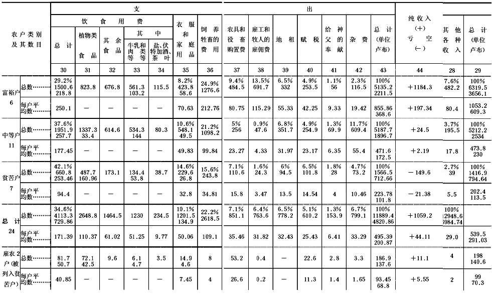

什么是“人民之友”以及他们如何攻击社会民主党人？(第三编)
什么是“人民之友”以及他们如何攻击社会民主党人？
第三编
最后，我们还要和一位“人民之友”克里文柯先生认识认识，他也是公开同社会民主党人作战的。
不过，我们将不象对待米海洛夫斯基和尤沙柯夫两位先生那样去分析他的文章（1893年第12期的《论文化孤士》和1894年第1期的《途中来信》）。在前面，把这两位先生的文章全部加以分析是必要的，因为分析前者才能明白他们对唯物主义和马克思主义的反驳的内容，分析后者才能明白他们的政治经济学理论。现在我们来看看他们的策略、他们的实际建议、他们的政治纲领，以便对“人民之友”有一个完全的了解。他们在任何地方都没有象叙述他们的理论观点那样直截了当地、彻底地和充分地叙述过这个纲领。因此，我不得不从这个杂志的不同的文章中摘出这个纲领，好在这个杂志的撰稿人的意见相当一致，不会有什么矛盾。我将多引克里文柯先生的上述两篇文章而少引其他文章，因为这两篇提供的材料比较多，作者又是这个杂志的典型的实践家、政治家，正象米海洛夫斯基先生是这个杂志的典型的社会学家，尤沙柯夫先生是这个杂志的典型的经济学家一样。
但是，在讲到他们的纲领以前，无疑有必要再谈谈他们的一个理论见解。前面我们已经知道，尤沙柯夫先生常用什么人民租佃能维持人民经济之类的空话来支吾搪塞，以此掩盖自己对我国农民经济的无知。他没有涉及手工业，只是引了一些说明大工厂工业增长的资料。现在克里文柯先生谈到手工业时，也完全是重复类似的词句。他把“我国人民工业”即手工业同资本主义工业完全对立起来（第12期第180―181页）。他说：“人民生产〈原文如此！〉多半是自然地产生的”，而资本主义工业“往往是人为地造成的”。在另一处，他把“小的人民工业”同“资本主义大工业”对立起来。如果你问前者的特点究竟是什么，那你只会听到：它是“小的”(1)，劳动工具是同生产者结合的（后一定义是我从米海洛夫斯基先生的上述文章里借用的）。可是要知道，这远没有说明它的经济组织，而且是完全不正确的。例如，克里文柯先生说：“直到今天，小的人民工业提供的总产量还比资本主义大工业多得多，而且占用的人手也更多。”作者显然指的是关于手工业者人数的资料，他们达400万人，按另一种计算则达700万人。可是，谁不知道我国手工业经济的主要形式是家庭手工制大生产呢？谁不知道大量手工业者在生产中决不是处于独立地位而是处于完全受支配的从属地位，他们做工不是使用自己的材料而是使用只付给手工业者工资的商人的材料呢？说明这种形式占主要地位的资料，甚至在合法书刊上也引用过。例如，拿著名的统计学家谢·哈里佐勉诺夫登在《法学通报》53（1883年第11期和第12期）上的一篇出色文章来说吧。谢·哈里佐勉诺夫在综合书刊上有关我国手工业最发达的中部各省的手工业资料时，得出的结论是家庭手工制大生产占绝对优势，也就是说，无疑是资本主义的工业形式占绝对优势。他说：“在确定独立的小工业的经济作用时，我们得出这样的结论：在莫斯科省手工业的全年周转额中，家庭手工制大生产占86．5％，独立的小工业只占13．5％。在弗拉基米尔省的亚历山德罗夫县和波克罗夫县的手工业的全年周转额中，家庭手工制大生产和工场手工业占96％，独立的小工业只占4％。”
据我所知，没有人打算推翻这些资料，而且也不能推翻。试问，怎么能避而不谈这些事实，称这种工业是和资本主义工业相反的“人民”工业，并说它可能发展成真正的“人民”工业呢？
这种公然无视事实的态度只能有一种解释：“人民之友”也和俄国一切自由派一样，他们总的倾向是掩盖俄国的阶级对抗和对劳动者的剥削，把这一切说成不过是些“缺点”。话又说回来，也许还另有原因，那就是他们对问题有克里文柯先生那种深刻的认识，克里文柯先生竟把“巴甫洛沃的刀类生产”叫作“半手艺性质的生产”。“人民之友”把事情歪曲到这种程度，真是罕见！巴甫洛沃的刀匠既是为市场生产而不是做订货怎能说是手艺性质呢？莫非克里文柯先生把商人为了运货到下诺夫哥罗德的集市而向手工业者订货这样的制度算作手艺？这未免太可笑了，但他的意思想必就是这样。
其实，生产者具有（表面）独立性的小手工业形式在刀类生产中保留得最少（同巴甫洛沃的其他生产比较起来）。尼·费·安年斯基说：“餐刀和工具刀的生产(2)已同工厂生产很相近，正确些说，已和工场手工业的生产很相近。”在下诺夫哥罗德省制造餐刀的396个手工业者中，为市场生产的只有62人（16％）。为老板(3)生产的有273人（69％），当雇佣工人的有60人（15％）。可见，只有六分之一的手工业者才不直接受企业主奴役。另一种刀的生产，即摺刀（削笔刀）的生产，据这位作者说，则“介于餐刀生产和锁的生产之间：这里大部分工匠已经在为老板生产，但同时还有相当多的同市场发生关系的独立手工业者”。
下诺夫哥罗德省制造这种刀的总共有2552个手工业者，其中为市场生产的占48％（1236人），为老板生产的占42％（1058人），当雇佣工人的占10％（258人）。可见，这里也是独立的（？）手工业者占少数。为市场而生产的手工业者的独立当然也只是表面上的，实则他们同样受包买主的资本奴役。如果我们拿下诺夫哥罗德省戈尔巴托夫全县的手工业资料来看，全县从事手工业的有21983人，占现有劳动者总数的84．5％(4)，我们就会得出如下数字（说明手工业经济的确切数字只有五金业、制革业、马具业、制毡业和大麻纺纱业中的10808个工人）：手工业者的35．6％为市场生产，46．7％为老板生产，17．7％是雇佣工人。可见这里也是家庭手工制大生产占优势，即劳动受资本奴役的关系占优势。
“人民之友”所以这样随便回避这类事实，也是由于他们对资本主义的理解没有超出通常的庸俗观念——资本家就是经营大机器企业的有钱的和有教养的企业主，而不愿知道这一概念的科学的内涵。我们在前一章里已经看到，尤沙柯夫先生讲到资本主义总是直接从机器工业讲起，而绕过了简单协作和工场手工业。这是一种普遍流行的错误，其影响之一就是使人们忽视了我国手工业的资本主义组织。
不言而喻，家庭手工制大生产就是资本主义工业形式，这里已具备资本主义工业形式的一切标志：商品经济已达到高度的发展，生产资料集中在个人手中，工人大众遭到剥夺，他们没有自己的生产资料，因而只好把劳动用在别人的生产资料上，他们不是为自己做工，而是为资本家做工。显然，就手工业的组织来说，这是纯粹的资本主义；同大机器工业相比，它的特点就是技术不发达（主要是因为工资低得不成样子），工人还保留一小块土地。后一种情况特别使“人民之友”困惑不解，因为他们同十足的形而上学者一模一样，习惯用赤裸裸的直接矛盾来思考：“是就是，不是就不是，除此以外，都是鬼话。”
工人没有土地就是资本主义；工人占有土地就不是资本主义；他们局限于这种令人宽慰的哲学，而忽略全部社会经济组织，忘记一件尽人皆知的事实，就是占有土地丝毫不能使这些土地占有者不过牛马的生活，不遭受其他同样的土地占有者——“农民”的极端无耻的掠夺。
看来，他们也不懂得，当资本主义还处在较低的发展阶段时，在任何地方它都不能使工人同土地完全分离。马克思根据西欧情况探明了这样一个规律：只有大机器工业才彻底剥夺了工人。因此很明显，那种以“人民占有土地”为理由，硬说我国没有资本主义的流行议论是毫无意义的，因为简单协作和工场手工业的资本主义，在任何时候和任何地方，都同劳动者完全离开土地没有关系，但丝毫也不因此就不成其为资本主义。
至于俄国的大机器工业（我国最大的和最重要的工业部门正在迅速采取这种形式），不管我国有什么样的独特性，它也具有和整个资本主义西欧相同的属性，它已经绝对不容忍工人和土地保持联系了。杰缅季耶夫用确切的统计资料也证明了这一事实，他（完全和马克思无关）根据这些资料作出结论说，机器生产同劳动者完全离开土地的现象不可分割地联系着。这一研究再次证明俄国是一个资本主义国家，劳动者同土地的联系已是这样微弱而且虚幻，有产者（货币持有者、包买主、富裕农民、手工工场主等等）的势力已是这样强固，只要技术再进一步，“农民”（？？早就靠出卖劳动力过活的）就变成纯粹的工人了(5)。可是“人民之友”对我国手工业的经济组织的无知还远不止这点。他们甚至对那些不存在“为老板”做工的行业的看法，也和他们对耕作者的看法（这点我们在上面已经说过）一样肤浅。不过，这也是十分自然的，因为那些大谈政治经济学问题的先生大概只知道，在世界上生产资料“可能”同劳动者相结合，这就很好；“可能”和劳动者分离，那就很坏。这是无济于事的。
克里文柯先生谈论到资本主义化的行业和没有资本主义化的行业（这里“小生产能自由存在”）时指出，在某些生产部门内，“基本生产费用”很小，因此，小生产在这里能够存在。他以烧砖业为例，说用于烧砖的生产费用可能只有砖场全年周转额的十五分之一。
这几乎是作者举出的唯一实例（再说一遍，主观社会学最显著的特点就是害怕直接而确切地说明现实和分析现实，宁愿飞向……小市民的“理想”领域），我们就拿它来考察一下，以便指明“人民之友”对现实的看法是多么不正确。
记述烧砖业（用白粘土制砖）的材料，我们可以在莫斯科地方自治机关的经济统计中找到（《汇编》第7卷第1编第2部分等等）。这一行业主要集中在博戈罗茨克县的三个乡，有233个作坊，1402个工人（其中有本户工人567人(6)，等于总数的41％；雇佣工人835人，等于总数的59％），全年生产总额为357000卢布。这一行业早已产生，但在最近15年内，由于铁路的修筑大大促进了销路，它才特别发展起来。在铁路修筑以前，家庭生产形式起主要作用，现在则让位于剥削雇佣劳动了。这一行业也没有免除小工业家在销售方面对大工业家的依赖：由于“缺钱”，前者往往按极低的价格把砖（有时是把“坯”即未烧的砖）就地卖给后者。
我们不仅可以了解这种依赖关系，而且还有可能了解这个行业的组织，因为这项概述附有手工业者按户调查资料，上面有每个作坊的工人数目和全年生产总额。
为了弄清商品经济就是资本主义经济（也就是说商品经济发展到一定阶段时必然转变为资本主义经济）这个规律是不是适用于这一行业，我们就应当把各个作坊按它们的规模大小加以比较，因为问题正是在于大小作坊在生产中的作用和对雇佣劳动的剥削的相互关系。我们根据工人人数把手工作坊分为三类：（Ⅰ）有1―5个工人者（本户工人和雇佣工人加在一起）；（Ⅱ）有6―10个工人者；（Ⅲ）有超过10个工人者。
我们考察每类作坊的规模、工人成分和生产总额，得出如下资料：
手工业者类别
（按工人人数划分） |
每个作坊的
工人平均数 | 百分比 | 每个
工人
的年
产量 | 百分比的分配 | 绝对数字 |
有雇佣
工人的
作坊 | 雇佣
工人 | 作坊 | 工人 |
生产总额 | 作坊① | 工人 |
生产总额
（单位卢布） |
| Ⅰ．有1－5个工人者 | 2.8 | 25 |
19 | 251 | 72 |
34 | 34 | 167/43 |
476/92 | 119500 |
| Ⅱ．有6－10个工人者 | 7.3 | 90 |
58 | 249 | 18 |
23 | 22 | 43/39 |
317/186 | 79000 |
| Ⅲ．有超过10个工人者 | 26.4 | 100 |
91 | 260 | 10 |
43 | 44 | 23/23 |
609/557 | 158500 |
| 总 计 | 6 | 45 |
59 | 254 | 100 |
100 | 100 | 233/105 |
1402/835 | 357000 |
(7)
你们仔细看看这个表，就可看出这一行业的资产阶级的（即资本主义的）组织：作坊规模越大，劳动生产率就越高(8) （Ⅱ类例外），剥削雇佣劳动就越厉害(9) ，生产就越集中(10) 。
把自己的经济几乎完全建立在雇佣劳动之上的Ⅲ类，虽然只占作坊总数的10％，却占生产总额的44％。
这种由于多数人（雇佣工人）被剥夺而造成的生产资料集中在少数人手中的情形，既向我们说明了这一行业内小生产者对包买主（大工业家也就是包买主）的依赖，也向我们说明了这一行业中对劳动的压迫。由此可见，劳动者被剥夺和被剥削的原因就在于生产关系本身。
大家知道，俄国民粹派社会主义者却持相反的意见，他们认为在手工业中劳动受压迫的原因不在于生产关系（他们声称这种生产关系是建立在没有剥削的基础上的），而在生产关系之外，在于政策，即在于土地政策、赋税政策等等。试问，这种现在几乎已经是顽固不化的偏见，为什么能一直存在呢？是不是因为对手工业中的生产关系的另一种看法占统治地位呢？完全不是。它所以能存在，只是因为对现有的实际经济组织形式根本不打算作确切的说明；它所以能存在，只是因为没有把生产关系专门划分出来，不对生产关系单独加以分析。总之，它所以能存在，只是因为不懂得社会科学的唯一科学的方法，即唯物主义的方法。于是我国旧社会主义者的推论过程现在也就清楚了。对于手工业，他们把剥削的原因归于生产关系以外的现象；对于大的工厂的资本主义，他们不能不看见那里剥削的原因正在于生产关系。这样就发生了不可调和的对立，互相不一致，这样就无法理解：既然手工业的生产关系（他们也没有考察这种生产关系！）中没有丝毫资本主义的东西，那么，这种大的资本主义是从哪里生长出来的呢？结论自然是：他们由于不了解手工业和资本主义工业的联系，而把前者和后者对立起来，把前者当作是“人民的”，把后者当作是“人为的”。于是也就出现一种认为资本主义与我国的“人民制度”相矛盾的思想，这种思想传播很广，并且在不久以前还由尼古拉·―逊先生改头换面，献给俄国的公众。这种思想所以能存在，只是由于人们墨守成规，尽管它明明不合逻辑：说到工厂资本主义时，他们根据它实际上是什么来判断，说到手工业时，他们却根据它“可能是”什么来判断；说到前者的时候，他们根据对生产关系的分析，说到后者的时候，他们却不打算单独考察生产关系，而直接把问题转到政策方面去了。只要分析这些生产关系，我们就会看出，“人民制度”也是资本主义生产关系，不过还处在不发达的萌芽状态罢了；如果抛弃那种认为一切手工业者彼此一样的幼稚成见，准确地反映出他们之间的差别，那么，工厂“资本家”和“手工业者”之间的差别有时比“手工业者”彼此间的差别还小，资本主义不是和“人民制度”相矛盾的东西，而是“人民制度”直接而又直接的继续和发展。
也许有人认为这个例子举得不适当吧？也许有人会说雇佣工人的百分比在这里偏高了吧(11)？但这里重要的完全不是绝对数字，而是这些数字所揭示的关系，这种关系实质上是资产阶级关系，不管表现出来的资产阶级性是强还是弱，始终是资产阶级关系。
好吧，我就另举一个例子，故意举一个资产阶级性表现得弱的例子，我从伊萨耶夫先生关于莫斯科省手工业的书中举出这位教授先生称之为“纯粹家庭手工业”的陶器业来说吧。这一行业当然可以充当农民小手工业的代表：技术最简单，设备最少，而且生产的是到处必需的日用品。手工业者的按户调查正好有同样的资料，所以我们可以来研究一下这个对俄国绝大多数“人民”小手工业来说无疑是十分典型的行业的经济组织。我们把手工业者分成三类：（Ⅰ）有1―3个工人者（本户工人和雇佣工人加在一起）；（Ⅱ）有4―5个工人者；（Ⅲ）有超过5个工人者，然后我们用上法计算一下：
手工业者类别
（按工人人数划分） |
每个作坊的
工人平均数 | 百分比 | 每个
工人
的年
产量 | 百分比的分配 | 绝对数字 |
有雇佣
工人的
作坊 | 雇佣
工人 | 作坊 | 工人 |
生产总额 | 作坊① | 工人 |
生产总额
（单位卢布） |
| Ⅰ．有1－3个工人者 | 2.4 | 39 |
19 | 468 | 60 |
38 | 36 | 72/28 |
174/33 | 81500 |
| Ⅱ．有4－5个工人者 | 4.3 | 48 |
20 | 498 | 27 |
32 | 32 | 33/16 |
144/29 | 71800 |
| Ⅲ．有超过5个工人者 | 8.4 | 100 |
65 | 533 | 13 |
30 | 32 | 16/16 |
134/87 | 71500 |
| 总 计 | 3.7 | 49 |
33 | 497 | 100 |
100 | 100 | 12160 |
452/149 | 224800 |
显然，这一行业中的关系（这种例子是不胜枚举的）也是资产阶级关系：这里有商品经济基础上发生的同样的分化，并且是纯粹资本主义的分化，它导致剥削雇佣劳动，剥削雇佣劳动已在Ⅲ类作坊中起主要作用。Ⅲ类作坊虽然只占作坊总数的1/8，却拥有30％的工人，劳动生产率比平均劳动生产率高得多，生产几乎占全部生产的1/3。单是这种生产关系就已向我们说明了包买主的出现和他们有力量的原因。我们看到，拥有规模较大、收入较多的作坊并靠他人劳动（在Ⅲ类陶器作坊中，每个作坊平均有5．5个雇佣工人）取得“纯”收入的少数人在积蓄“储金”，而多数人却在破产，甚至小作坊主（更不用说雇佣工人了）也不能收支相抵。后者当然不可避免地要受前者奴役，其所以不可避免，正是由于这种生产关系的资本主义性质。这种关系在于：由商品经济组织起来的社会劳动的产品落到私人手中，成为私人手中压迫和奴役劳动者的工具，成为剥削多数人而使个人发财的手段。不要以为生产关系的这种性质还不大发展，同生产者的破产并行的资本积累微不足道，因而这种剥削、这种压迫就表现得轻微些。其实完全相反。这只会导致更粗野的农奴制的剥削形式，使资本在它还不能单纯用按劳动力价值购买工人劳动力的办法来直接支配工人时，能用高利贷压榨的罗网把劳动者束缚起来，用盘剥手段把劳动者控制起来，结果是不仅从劳动者身上攫取额外价值，而且攫取很大一部分工资，同时又不让他们有更换“老板”的机会，从而更加重了对他们的欺压；要他们把老板“给”（原来如此！）他们工作看成一种善行，借此奚落他们。很明显，任何一个工人永远不会同意把自己的地位换成俄国“真正”“人民”工业中的“独立”手工业者的地位。同样很明显，俄国激进派所喜爱的一切措施，或者丝毫也不触动资本对劳动者的剥削和奴役，始终是一些零星的实验（劳动组合），或者使劳动者的状况恶化（禁止转让份地），最后，或者只会净化、发展和巩固现存的资本主义关系（技术改良、信贷等等）。
可是，“人民之友”永远也领会不了，农民手工业虽然总的情况很可怜，作坊规模很小、劳动生产率极低、技术简陋、雇佣工人不多，但其中已经有了资本主义。他们怎样也领会不了，资本是人和人之间的一定关系，尽管我们拿来比较的范畴的发展程度有高有低，它仍然是这样一种关系。资产阶级的经济学家从来不能了解这一点，他们始终反对资本的这个定义。记得其中一位经济学家在《俄国思想》上谈到季别尔的书（论马克思的理论）时，引用了这个定义（资本是一种关系），加上几个惊叹号以示愤懑。
资产阶级哲学家最大的特点，就是把资产阶级制度的范畴看作永恒的和自然的范畴；因此，他们对资本下了这样的定义，例如，说资本是为了继续生产而积累的劳动，即认为资本是人类社会的永恒范畴，从而抹杀历史上一定的特殊的经济形态，在这种经济形态中，由商品经济所组织的这种积累的劳动落到不劳动的人的手里，并被用来剥削他人的劳动。因此，他们不是去分析和研究一定的生产关系体系，而是谈一些适用于任何制度的、搀杂着感伤的小市民说教的陈词滥调。
现在就来看看，“人民之友”为什么把这种工业称为“人民”工业，为什么把它同资本主义工业对立起来？那只是因为这班先生们是小市民思想家，他们甚至不能想象这些小生产者是在商品经济体系中生活和进行经营的（因此，我把他们称为小市民），他们同市场的关系必然地和不可避免地要把他们分裂为资产阶级和无产阶级。但愿你们能试一试，把我国“人民”手工业的实际组织研究一下，而不要空谈这种手工业“可能”成为什么，我们倒要看看，你们能不能在俄国找到一个稍微发达的手工业部门不是按资本主义方式组织起来的。
如果你们不同意这个概念必要的和充分的标志，就是少数人垄断生产资料、多数人失去生产资料、剥削雇佣劳动（一般说来，私人占有商品经济所组织起来的社会劳动的产品，就是资本主义的实质），那就请你们把“自己的”资本主义定义和“自己的”资本主义历史拿出来。
其实，我国“人民”手工业的组织，对资本主义的整个发展史提供了一个很好的例证。它向我们清楚地表明，资本主义产生于、萌芽于简单协作的形式（陶器业中的Ⅲ类）；其次，它向我们表明，由于商品经济而积蓄在个人手中的“储金”怎样变成资本，即先是垄断销路（“包买主”和商人），因为只有这些“储金”的所有者，才有做批发生意所必需的资金，可以等待时机在远地市场销售商品；再其次，它还向我们表明，这一商业资本怎样奴役大批生产者和组织资本主义的手工工场，即资本主义的家庭手工制大生产；最后，它向我们表明，市场的扩大、竞争的加剧怎样使技术提高，这一商业资本怎样变成产业资本和组织大机器生产。当这种资本力量雄厚，奴役着千百万劳动者，奴役着整片整片地区的时候，它便开始直接地和肆无忌惮地对政府施加压力，把政府变为自己的仆役，这时我们机智的“人民之友”大喊大叫，说什么“培植资本主义”，“人为地造成”资本主义！
不用说，他们的恍然大悟正是时候！
由此可见，克里文柯先生大谈什么人民的、真正的、正常的工业，不过是想抹杀一个事实，即我国手工业无非是处于不同发展阶段的资本主义。这种手法我们已从尤沙柯夫先生那里领教够了。尤沙柯夫先生不研究农民改革，而空谈意义重大的宣言54的基本目的等等；不研究租佃，而把它叫作人民租佃；不研究资本主义的国内市场怎样形成，而抽象地议论资本主义因缺乏市场而必然灭亡等等。
为了说明“人民之友”先生们把事实歪曲到了何等地步，我再举一个例子(12)。我们的主观哲学家们很少给我们举出确切的事实，如果我们把他们所举的最确切的事实之一忽略过去，那未免太不公道了。这个事实就是克里文柯先生（这个杂志1894年第1期）引用的沃罗涅日省的农民家庭收支表。在这里，我们可以从他们自己选出的资料中清楚地看到，究竟是谁对现实的看法比较正确，是俄国激进派和“人民之友”呢，还是俄国社会民主党人。
沃罗涅日省地方自治机关统计学家舍尔比纳先生，在他记述奥斯特罗戈日斯克县的农民经济一书的附录中，列出24个典型农户家庭收支表，并在正文中分析了这些收支表(13)。
克里文柯先生在重复这一分析时，却没有看出，或者正确些说，不愿看出，这种分析方法对了解我国种地农民的经济毫无用处。问题在于这24户家庭收支表所记述的是完全不同的农户，既有富裕的，也有中等的，也有贫苦的；克里文柯先生本人也指出了这一点（第159页），可是他和舍尔比纳先生一样，单采用那些把各种不同类型的农户加在一起而得出的平均数字，从而把他们的分化完全掩盖起来。而我国小生产者的分化是一个很普遍很重大的事实（社会民主党人早已要俄国社会主义者注意这一事实。见普列汉诺夫的著作），甚至从克里文柯先生选出的这一点资料中也能十分清楚地看出来。他谈到农民经济时，不是按他们经济规模的大小和经营的类型来分类，而是象舍尔比纳先生那样，按法律地位把他们分为前国家农民和前地主农民，只注意前者比后者富裕，而忽略这两类农民内部的差别比这两类农民彼此间的差别要大得多(14)。为了证明这一点，现在我把这24户家庭收支表分成三类：（甲）单独划出6户富裕农民，然后是（乙）11户中等农民（在舍尔比纳的表上是第7―10户和第16―22户）和（丙）7户贫苦农民（在舍尔比纳的收支表上是第11―15户和第23―24户）。例如，克里文柯先生说，前国家农民每户的支出为541.3卢布；前地主农民每户的支出为417.7卢布。同时他忽略了各种农户的支出是大不相同的：例如前国家农民中有支出84.7卢布的农民，也有支出为十倍以上的即887.4卢布的农民（即使把一个支出1456.2卢布的德意志移民除开不算）。把这些数字加在一起得出的平均数能有什么意义呢？如果拿我的分类来看，那我们就会看出富裕户每户平均支出855.86卢布，中等户每户平均支出471.61卢布，贫苦户每户平均支出223.78卢布(15)。
相差的比例约为4∶2∶1。
我们再往下看。克里文柯先生仿效舍尔比纳，引用了按法律地位分类的农民在个人消费方面的支出额：例如前国家农民每口人每年用于植物类食品的支出为13．4卢布，前地主农民每口人每年为12．2卢布。而按经济标准分类则数字如下：（甲类）17．7卢布；（乙类）14．5卢布；（丙类）13．1卢布。用于肉乳食品的支出：前地主农民每口人为5．2卢布；前国家农民每口人为7．7卢布。而按经济标准分类则数字如下：（甲类）11．7卢布；（乙类）5．8卢布；（丙类）3．6卢布。显然，按法律地位分类的计算法不过是把极大的差别掩盖了起来。因此，这种计算法显然是不行的。克里文柯先生说，前国家农民的收入比前地主农民的收入多53．7％：总平均数（根据24户家庭收支表）为539卢布，前者为600卢布以上，后者约为400卢布。而按殷实程度分类则收入的数字如下：（甲类）1053．2卢布；（乙类）473．8卢布；（丙类）202．4卢布，也就是说，相差的幅度不是3∶2，而是10∶2。
克里文柯先生说：“前国家农民每户产业的总值为1060卢布，前地主农民每户产业的总值为635卢布。”但按经济标准分类(16)则是：（甲类）1737．91卢布；（乙类）786．42卢布；（丙类）363．38卢布，——相差的幅度又不是3∶2，而是10∶2。作者既然把农民按法律地位分类，也就无法对这种农民的经济得出一个正确的认识。
如果我们按殷实程度来看看各类农民的经济，那我们就会看出：富裕户的收入平均为1053．2卢布，支出平均为855．86卢布，即纯收入为197．34卢布。中等户的收入平均为473．8卢布，支出平均为471．61卢布，即每户纯收入为2．19卢布（贷款和欠税还未计算在内）；显然，这类农户勉强可以收支相抵：11户中5户有亏空。下等户即贫苦户简直是亏本经营：收入为202．4卢布，支出为223．78卢布，即亏空21．38卢布(17)。显然，如果我们把这些农户加在一起而得出一个总平均数（纯收入为44．11卢布），那我们就会完全歪曲现实。我们就会回避（象克里文柯先生那样回避）一个事实，即有纯收入的6户富裕农民都使用雇农（8人）。这一事实向我们说明了他们的农业性质（他们在转变为农场主），这种农业使他们能得到纯收入，使他们几乎完全没有经营“副业”的必要。这些农户（算在一起）只有6．5％的收支（6319．5卢布中的412卢布）靠副业来弥补，并且这些副业（按舍尔比纳先生举的例子来看）是“拉脚”或甚至是“收购绵羊”一类的事情，这不但不证明他们依赖别人，反而证明他们在剥削别人（正是在后一场合，积蓄的“储金”在变为商业资本）。这些农户有4个工业作坊，使他们获得320卢布（5％）的收入(18)。
中等农民的经济却是另一种类型：前面已经说过，他们未必能够收支相抵。农业不能维持他们的开销，他们有19％的收入是靠所谓副业。这是哪类副业，我们从舍尔比纳先生的文章中可以看出。那里指出有7户从事副业，其中只有2户从事独立的副业劳动（缝纫和烧炭），其余5户都是出卖劳动力（“到低地去割草”，“到酿酒厂做工”，“农忙时打日工”，“替人放羊”，“在本地庄园里做工”）。这已经是半农半工，干外活使他们丢开农业，从而彻底破坏他们的农业。
至于贫苦农民，他们经营农业简直是亏本；“副业”的作用在他们的家庭收支中更大（占收入的24％），并且这些副业几乎完全（只有一户除外）是出卖劳动力。其中有两户以“副业”（当雇农）为主，占收入的2/3。
由此可见，小生产者正在完全分化，上等户在变为资产阶级，下等户在变为无产阶级。显然，如果我们拿总平均数来说，那我们丝毫也看不出这一点，我们根本无法了解农村经济。
只是由于玩弄这些虚假的平均数，作者才能采用这样的方法。为了确定这些典型户在全县一般农户中的地位，舍尔比纳先生把农民按份地面积分类，结果，这24户（总平均起来）按他们的富裕程度来说，要比全县中等户高1/3左右。这种计算方法决不能认为是令人满意的，一则因为这24户中有很大差别，二则因为按份地面积分类掩盖了农民分化。作者提出的“份地是”农民“富裕的根本原因”这一论点是完全不对的。谁都知道，在村社内部“平均”分配土地，丝毫不会妨碍无马的社员抛弃土地，出租土地，外出做工而变成无产者；也不会妨碍多马的社员租进大量土地，从事大规模的有收益的经营。例如，我们从这24户家庭收支表上就可看出：一个富裕农民有6俄亩份地，收入共为758．5卢布；一个中等农民有7．1俄亩份地，收入共为391．5卢布；一个贫苦农民有6．9俄亩份地，收入共为109．5卢布。总之，我们已经看到，各类农户的收入比例为4∶2∶1，而份地面积的比例则为2．1∶9．2∶8．5＝2．6∶1．08∶1。这是完全可以理解的，因为我们看到，例如，富裕农民每户有份地22．1俄亩，又租进土地8．8俄亩，中等农民的份地则较少（9．2俄亩），租进的土地也较少——7．7俄亩，贫苦农民的份地则更少（8．5俄亩），租进的土地只有2．8俄亩(19)。因此，当克里文柯先生说“可惜舍尔比纳先生引用的资料不能当作衡量全省甚至全县的一般情况的准确尺度”时，我们只能说：只有在采用计算总平均数这种不正确的方法（克里文柯先生就不该用这种方法）时，这些资料才不能当作衡量的尺度，可是一般说来，舍尔比纳先生的资料是丰富而有价值的，它使人有可能作出正确的结论，如果克里文柯先生没有作出正确的结论，那不能怪舍尔比纳先生。
例如，舍尔比纳先生在第197页上已不是按份地面积，而是按役畜头数把农民分成几类，也就是按经济标志而不是按法律标志分类。这种分类使人有充分理由说，这24个典型户各类之间的比例，和全县各经济类别之间的比例是完全一致的。
这种分类是这样的(20)：

(21)
(22)
毫无疑义，按总平均数来说，这24个典型户要比该县一般农户高些。但如果我们抛弃这种虚假的平均数而采用经济分类，那我们就有可能作比较了。
我们看到，典型户中的雇农比没有役畜的农户要低些，但同他们很相近。贫苦户同有一头役畜的农户很相近（役畜虽然少0.2，即贫苦户为2.8，有一匹马的农户为3，但份地和租地加在一起的土地总数却要多些，即12.6俄亩∶10.7俄亩）。中等户比有2―3头役畜的农户高得很有限（他们的役畜稍微多些，但土地稍微少些），而富裕户则同有4头以上役畜的农户相近，只比他们稍低一点。因此，我们完全可以作出结论说，这个县至少有1/10的农户从事正常的有收益的农业，而不需要找外水。（有一点必须指出：这种收益表现为货币，因而是以农业的商业性质为前提的。）他们大多靠雇佣工人种地：至少有1/4的农户雇有长工，临时还雇日工的有多少，不知道。其次，这个县半数以上是贫苦户（将近6/10，即无马者占26％，有1匹马者占31.3％，总共占57.3％），他们简直是亏本经营，因而日趋破产，经常不断地遭受剥夺。他们不得不出卖自己的劳动力，而且约有1/4的农民，已经主要靠从事雇佣劳动而不是靠种地过活了。其余的农民即中等户，都是勉勉强强种地，经常入不敷出，靠外水贴补，因而经济上一点点稳定性也没有了。
我有意把这些资料分析得这样详细，为的是表明克里文柯先生把现实歪曲成什么样子。他随便取一些总平均数来摆弄，很明显，其结果不仅是虚构，而且简直是欺骗。例如，我们看到，一个富裕农民（典型收支表中的）的纯收入（＋197.34）可以弥补9个贫苦户的亏空（―21.38×9＝―192.42），所以这个县10％的富裕农民的纯收入不仅可以弥补57％的贫苦农民的亏空，而且略有剩余。当克里文柯先生从24户的平均收支表中得出44.14卢布的余额（除去贷款和欠税15.97卢布）时，就简单说成是中等户和中等以下农户的“衰落”。其实，只有中等农民才勉强说得上衰落(23)，而贫苦农民大众则直接遭受剥夺，与此同时，生产资料则日益集中在占有规模较大、基础稳固的农庄的少数人手里。
作者既然忽视这后一种情况，也就看不出这些家庭收支表如下一个很值得注意的特征：这些家庭收支表同样证明，农民的分化正在造成国内市场。一方面，农户类别越低，则靠副业获得的收入比重就越大（在富裕户、中等户、贫苦户各自的收入总额中分别占6.5％，18.8％，23.6％），而所谓副业主要是出卖劳动力。另一方面，农户类别越高，则农业的商品性质（正如我们所看到的，甚至是资产阶级性质）就越强，出卖粮食的百分数就越大。各类农户的农业收入是：（甲类）3861.7/1774.4，（乙类）3163.8/ 899.9，（丙类）689.9/175.25。分母代表收入的货币部分(24)，在从高到低的各类农户中分别为45.9％，28.3％，25.4％。
这里我们又很清楚地看到，被剥夺的农民丧失的生产资料怎样变成资本。
克里文柯先生从这样被利用的，或正确些说，这样被歪曲的材料中，当然不能得出正确的结论。他根据一个和他同乘火车的诺夫哥罗德农民的谈话，描述了该地农民经济的货币性质，不得不作出一个公正的结论：正是这种环境，商品经济环境，“养成”“特殊的能力”，使人想方设法“割〈割草〉得贱”、“卖得贵”（第156页）(25)。这种环境成了“激发〈对呀！〉和磨练经商才能”的“学校”。“有才能的人出现了，从中产生了科卢帕耶夫们、杰隆诺夫们58和其他名称的吸血鬼(26)，而老实纯朴的人则日益落伍，每况愈下，遭到破产，变成雇农。”（第156页）
根据一个条件完全不同的农业省份（沃罗涅日省）的资料，也可得出同样的结论。看来，事情是够明显的了，商品经济体系作为我国包括“村社”“农民”经济在内的整个经济的主要背景，已经清晰地显示出来，同时还显示出这样一个事实：这个商品经济而且正是这个商品经济把“人民”和“农民”分裂为无产阶级（破产而变成雇农）和资产阶级（吸血鬼），就是说，正是这个商品经济在变为资本主义经济。可是“人民之友”总是不肯正视现实，不肯直言不讳（这太“严酷”了）！克里文柯先生议论说：
“某些人认为这种状况是十分自然的〈应该补充一句：是生产关系的资本主义性质的十分自然的结果。这才是确切地转述了“某些人”的意见，这样就无法用空话来搪塞这些意见，而不得不从实质上来分析问题。当作者不是立意要同“某些人”作斗争时，他自己也不得不承认货币经济正是造就“有才能的”吸血鬼和“老实的”雇农的“学校”〉，并且把它看作是资本主义的不可抗拒的使命。〈唔，当然咯！谁认为要同“学校”作斗争，同操纵“学校”的吸血鬼及其在行政机关和知识界的奴仆作斗争，那就是认为资本主义是不可抗拒的。谁要毫不侵犯资本主义“学校”及其吸血鬼，并想用自由派的治标办法来消除其资本主义产物，那就是真正的“人民之友”！〉我们对这点的看法却有些不同。资本主义在这里无疑起很大作用，这点我们在前面已经指出〈这就是上面说到吸血鬼和雇农的学校那段话〉，可是不能说资本主义的作用就是这样包罗万象和有决定性的，以至在现时国民经济的变动中竟没有别的因素，而且将来也不会有任何别的出路。”（第160页）
请看！克里文柯先生不是确切地和直截了当地说明现代制度，不是明确地回答为什么农民分化为吸血鬼和雇农的问题，却用一些毫无内容的词句来支吾搪塞。“不能说资本主义的作用是有决定性的。”——其实全部问题正在于能不能这样说。
你要维护自己的意见，就应当指出是什么别的原因在决定问题，除了社会民主党人所指出的无产阶级反对吸血鬼的阶级斗争(27)外，还有什么别的出路。可是什么也没有指出来。不过，作者也许把下述一点当作他的说明吧？虽然这很可笑，但“人民之友”是什么也做得出来的。
“我们已经看到，日趋衰落的首先是土地少的弱小农户”，即份地不满5俄亩的农户。“而有份地15．7俄亩的国家农民的典型户则是很稳固的……固然，为了获得这样的收入（80卢布纯收入），他们每户还要租进5俄亩土地，但这不过说明他们所需要的是什么。”
把所谓的“土地少”同资本主义联系起来的这一“更正”究竟是什么意思呢？意思是，土地少的人失去土地，土地多的人（每户有15．7俄亩者）则获得更多的土地(28)。这不过是把一些人破产而另一些人发财的论点换个说法而已！！已经到了抛弃这种土地少的空谈的时候了，空谈丝毫不能说明问题（因为份地并不是白白送给农民而是卖给农民的），只是描述过程，而且描述得又不确切，因为要说的不单单是土地，而是整个生产资料，而且不是农民的生产资料“少”，而是农民在失去生产资料，遭到日益发展的资本主义的剥夺。克里文柯先生在结束他的高论时说：“我们决不是想说，农业在任何情况下都应该而且可能保持其‘自然的’和离开加工工业而独立的性质〈又是空话！您不是刚才还不得不承认目前已经有了以交换为前提的，因而也是以农业离开加工工业而独立为前提的货币经济的学校吗？干吗还要胡说什么可能和应该呢？〉，我们只是说：人为地造成独立的工业是不合理的〈不妨问问，基姆雷人和巴甫洛夫镇人的工业是不是“独立的”呢？又是什么人、什么时候和怎样“人为地造成”的呢？〉；劳动者同土地和生产工具分离，不仅是由于资本主义的影响，还由于先于资本主义和促进资本主义的其他因素的影响。”
这里大概又在提示一种深奥的思想：如果劳动者同土地分离，土地转归吸血鬼所有，那是因为前者的土地“少”，而后者的土地“多”。
这类高论倒责备社会民主党人“眼界狭隘”，说他们不该把资本主义看作决定性的原因！……我所以再次这样详细地谈到农民和手工业者的分化，是因为必须说清楚社会民主党人是怎样看问题和怎样说明问题的。必须指明，同样一些事实，在主观社会学家看来，只是表明农民“变穷了”，而“猎财者”和“吸血鬼”“乘机牟利”；从唯物主义者的观点来看，却是表明商品生产者的资本主义分化，是商品经济本身的力量所必然引起的分化。必须指明，根据什么事实得出下述论点（这一论点已在第一编表述过了FN1）：在俄国，不仅在工厂，而且在最偏僻的乡村，到处都有有产者和无产者的斗争，而且这种斗争到处都是在商品经济基础上形成的资产阶级和无产阶级的斗争。由于有地方自治局统计这样出色的材料而可以确切地描绘出来的我国农民和手工业者的分化，非农民化，实际证明了恰好是社会民主党人对俄国现实的理解是正确的，根据这种理解，农民和手工业者是“绝对”意义上的小生产者即小资产者。这一论点可说是工人社会主义理论不同于旧时农民社会主义的主要之点，旧时农民社会主义既不了解这种小生产者所处的商品经济环境，也不了解小生产者在商品经济基础上发生的资本主义分化。因此，谁要认真批评社会民主主义，谁就应该把自己的论据集中在这点上，应该证明俄国在政治经济方面不是商品经济制度，证明农民的分化不是在这个基础上发生的，证明大量居民的被剥夺和劳动者的被剥削是由于其他什么原因，而不是由于我国包括农民经济在内的社会经济组织是资产阶级的即资本主义的组织。
先生们，试证明一下吧！
其次，我所以比较喜欢用农民经济和手工业经济的资料来说明社会民主主义的理论，还有一个理由。如果我在批评“人民之友”的观点时，只是把他们的思想和马克思主义思想加以对照，那就背离了唯物主义的方法。所以还必须把“民粹主义”思想说清楚，指明这种思想在我国现代社会经济关系中的物质基础。我国农民和手工业者的经济状况和实例表明了这种“农民”（“人民之友”就是想充当他们的思想家）究竟是什么。它们证明我国农村经济的资产阶级性，因而也就证实把“人民之友”算作小市民思想家是正确的。此外，它们还表明我国激进派的思想和纲领同小资产阶级的利益之间存在着极密切的联系。这种联系（在详细分析了他们的纲领之后会更加清楚）向我们说明为什么这些激进派思想在我国“社会”中得到如此广泛的传播，也清楚地说明为什么“人民之友”在政治上卑躬屈膝并甘愿妥协。
最后，我们这样详细分析我国社会生活中资本主义最不发达、而民粹派通常从中吸取材料来论证其理论的那些部门的经济，还有一个理由。因为研究和说明这种经济，最容易从实质上回答我国公众中最流行的一种反对社会民主主义的意见。我们的激进派从资本主义同“人民制度”相矛盾这种通常想法出发，看到社会民主党人把大资本主义当作进步现象，看到他们正是要立足于大资本主义来进行反对现代掠夺制度的斗争，便轻易地指摘社会民主党人忽视大多数农民人口的利益，说他们想“让每个农夫到工厂的锅炉里去受熬煎”等等。
所有这些议论都是建立在一种极端不合逻辑的和奇怪的方法上的：说到资本主义时，根据资本主义实际上是什么来判断：说到农村时，则根据农村“可能是”什么来判断。显然，对这一点的最好回答，就是让他们看看现实的农村、现实的农村经济。
凡是不怀偏见而科学地观察这种经济的人都一定会承认，俄国农村是由分散的小市场（或中央市场的小分支）组成的体系，这些市场支配着各个不大的地区的社会经济生活。在每一个这样的地区里，我们可以看到受市场调节的社会经济组织所具有的种种现象：可以看到那些曾经是平等的宗法式的直接生产者在分化为富人和穷人，可以看到资本特别是商业资本的产生，它给劳动者布下天罗地网，吸吮他们的全部脂膏。你们只要把我国激进派对农民经济的记述同有关农村经济生活的第一手确切资料加以比较，那你们就会感到惊奇，因为在被批评的观点体系中，完全不提麇集在每个这样市场上的大量的小商贩，不提所有那些叫作施巴依、伊瓦施59和其他还被本地农民取了外号的人，不提操纵市场并残酷地压迫劳动者的大量小剥削者。人们通常把他们撇开了事，说“他们已经不是农民而是商人了”。是的，你们说得完全对：这“已经不是农民”了。可是，你们试把所有这些“商人”，用确切的政治经济学的语言来说，也就是把那些经商并至少是部分地占有他人劳动的人划为单独的一类，试用精确的数字把这一类的经济力量和他们在本区整个经济中的作用表示出来；然后试把所有那些拿自己的劳动力到市场上出卖，不是为自己而是为别人做工，因而也“已经不是农民”的人划为相反的一类，——你们试来履行这种公正而认真地研究问题的起码要求，那你们就会看出资本主义分化的情况是如此明显，“人民制度”的神话就不攻自破了。这样大量的农村小剥削者是一种可怕的势力，其所以可怕，特别是因为他们对劳动者实行各个击破，把劳动者牢牢地束缚住，使他们毫无挣脱的希望；其所以可怕，是因为这种剥削，在农村的愚昧状态（这是由该体系固有的劳动生产率低下和缺乏交往的现象造成的）下，不仅是对劳动的掠夺，而且是农村中常有的亚洲式的人身侮辱。如果你们把这种现实的农村和我国资本主义比较一下，你们就会懂得，为什么社会民主党人把我国资本主义的作用看作是进步的，因为资本主义把这些分散的小市场连成一个全国性的市场，它造就少数巨大的“祖国栋梁”来替代无数善意的小吸血鬼，使劳动社会化并提高劳动生产率，使劳动者挣脱本地吸血鬼的支配而使他们受大资本的支配。后一种支配尽管引起种种惨状，使劳动者受压迫、死亡、粗野，使妇女儿童身心受到摧残等等，但它比前一种支配却是进步的，因为它启迪工人的思想，把隐约的和模糊的不满变成自觉的反抗，把零星的无意义的小骚动变成争取全体劳动者解放的有组织的阶级斗争，这一斗争从这个大资本主义存在的条件本身中吸取力量，因而绝对有希望获得可靠的成功。
对于所谓忽视广大农民的责备，社会民主党人完全可以用卡尔·马克思的一段话来回答：
“
批判摘去了装饰在锁链上的那些虚幻的花朵，但并不是要人依旧带上这些没有任何乐趣任何慰藉的锁链，而是要人扔掉它们，伸手摘取真实的花朵。”
FN2
当他们把这种思想带给那些按其地位来说是唯一能够掌握阶级自觉并发动阶级斗争的劳动阶级代表时，竟有人责备他们想让农夫到锅炉里去受熬煎。
究竟是谁在这样责备呢？
是那些把劳动者解放的希望寄托在“政府”和“社会”身上，也就是寄托在处处把劳动者束缚起来的资产阶级的机关身上的人。
这班软骨头竟神气活现地说社会民主党人没有理想！
“人民之友”的理论观点，我们已经谈得似乎太多了，现在我们来谈谈他们的政治纲领。他们想用什么办法来“扑灭火灾”呢？他们说社会民主党人指明的出路是不正确的，那他们认为出路在哪里呢？
尤沙柯夫先生在《农业部》一文（《俄国财富》第10期）中说：“改组农民银行，成立垦殖管理署，整顿官地租佃以利于人民经济……研究和解决租佃问题，这就是复兴人民经济并使其不受新兴富豪的经济暴力〈原文如此！〉侵害的纲领。”在《经济发展问题》一文中，对这个“复兴人民经济”的纲领补充了如下一些“初步而必要的步骤”：“扫除目前束缚村社的一切障碍，取消对村社的监护，过渡到共耕制（农业社会化），发展地里出产的原料的村社加工业”。而克里文柯和卡雷舍夫两先生又作了补充：“发放低利贷款，组织劳动组合式的经营，保障销路，使企业主无利可得〈这点下文要专门，说到〉，发明更便宜的发动机和实行其他技术改良”，最后是办“博览馆、货栈、代理店”。
你们仔细看看这个纲领，就会看出这班先生是完完全全站在现代社会的基地上（也就是说，站在资本主义制度基地上，不过他们没有意识到这一点），只想对这个社会修修补补、敷衍了事，而不懂得他们的这些进步办法，如低利贷款、技术改良、银行等等，只能加强和发展资产阶级。
尼古·―逊当然说得完全对（这也是他最有价值的论点之一，“人民之友”不能不加以反对），在现代制度基础上的任何改良都无济于事，无论是信贷，是移民，是赋税改革，是全部土地归农民所有，都不能在实质上改变什么，反而会使现在被多余的“监护”、农奴制贡赋的残余和农民的依附于土地等等所束缚的资本主义经济加强和发展起来。他说，那些希望广泛发展信贷的经济学家，如瓦西里契柯夫公爵（按他的思想来说，无疑是“人民之友”）一类人，也同“自由派的”即资产阶级的经济学家一样，“力图发展和巩固资本主义关系”。他们不懂得我国生产关系的对抗性（在农民中也同在其他等级中一样），他们不是努力使这一对抗充分展开，不是直接同那些由于这种对抗而受奴役的人站在一起，设法帮助他们起来斗争，反而梦想指靠一切人，指靠调解和联合，用这样的办法来停止斗争。这些办法会导致什么样的结果是不言而喻的：只要想一想上述分化的例子就会确信，能享受信贷(29)、技术改良、银行之类“进步”的，只是那些在正常和稳固的经营条件下有相当“储金”的人，就是说，只是那些区区少数即小资产阶级的代表人物。所以无论你们怎样改组农民银行和类似的机关，丝毫也不会触动这一主要的根本的事实，即广大居民已经遭到剥夺并继续遭受剥夺，他们甚至无钱养活自己，更不用说进行正常的经营了。
“劳动组合”和“共耕制”也是如此。尤沙柯夫先生把后者叫作“农业社会化”。这当然只是一种笑话，因为实现社会化，并不是只在某个村子范围内组织生产，因为要实现社会化，就必须剥夺那些垄断生产资料并操纵现时俄国社会经济的“吸血鬼”。要做到这一步，就需要斗争，斗争，再斗争，而不是无聊的小市民说教。
因此，他们的这类措施不过是些自由派温和的治标办法，全靠慈善的资产者的施舍来勉强维持。这些办法引诱被剥削者放弃斗争，其害处比可能改善个别人的状况这种好处大得多，这种改善在资本主义关系的一般基础上不能不是微小的和靠不住的。这班先生抹杀俄国生活中的对抗到了何等荒谬的地步（当然，他们这样做是怀有停止现时斗争的极其善良的愿望的，也就是怀有那种铺成地狱的愿望的），这从克里文柯先生的下述论断中可以看出：
“知识分子能领导厂主的企业，也能领导人民的工业。”
他们的全部哲学不外乎长吁短叹地说，斗争和剥削是有的，但也“可能”是没有的，假如……假如没有剥削者的话。试问，作者讲这种废话究竟要说明什么呢？难道可以否认俄国的大学和其他学校每年都在制造一些谁能养活就去投靠谁的“知识分子”（？？）吗？难道可以后认现在俄国只有资产阶级少数才有钱来养活这种“知识分子”吗？难道俄国的资产阶级知识分子，会因“人民之友”说他们“可能”不替资产阶级服务就消失了吗？是的，“可能”的，假如他们不是资产阶级知识分子的话。他们“可能”不是资产阶级知识分子，“假如”俄国没有资产阶级和资本主义的话！有些人一辈子就满足于这种“假如”！这些先生不仅拒绝承认资本主义有决定的意义，而且根本不愿看见资本主义中的任何坏东西。只要去掉某些“缺陷”，他们也许在资本主义制度下就会过得很不坏。请看克里文柯先生的这样一段话吧：
“资本主义生产和手工业的资本主义化决不是这样的大门，加工工业通过它就只能离开人民。当然，加工工业可能离开人民生活，但也可能进入人民生活，更加接近农业和采掘工业。为此可能采用几种办法，上述大门也象别的大门一样能够促成此举。”（第161页）克里文柯先生比起米海洛夫斯基先生来，是有一些很好的品质的。例如他坦白直爽。凡是米海洛夫斯基先生会写出整页整页的花言巧语、专在问题周围打圈子而不涉及问题本身的地方，求实的克里文柯先生总是不假思索地和毫无愧疚地把他的一切荒谬见解都向读者端出来。请看：“资本主义可能进入人民生活。”就是说，劳动者不同生产资料分离，资本主义也是可能的！这真是妙不可言；现在我们至少完全明白“人民之友”想要的是什么了。他们要的是没有资本主义的商品经济，要的是没有剥夺也没有剥削，只有在仁慈的地主和自由派的行政官庇护下勉强维持生活的小市民的资本主义。于是，他们俨然象一个立意给俄国造福的部吏那样着手拟制计划，以建立一个既要狼吃饱；又要羊完好的制度。为了弄清这种计划的性质，我们应当来看看同一作者在该杂志第12期发表的文章（《论文化孤士》）：“工业的劳动组合形式和国家经营形式〈克里文柯先生发表议论时，大概以为他已“被召去”“解决实际经济问题”了〉，决不是在目前情况下所能设想的一切。例如，也可能有这样一种计划。”接着，他就讲起一件事，说有一位技师带着一份由小股（每股不超过100卢布）股份企业对顿河州进行技术开发的草案，去访问《俄国财富》编辑部。编辑部建议草案起草人作些修改，修改意见大致如下：“股票不应属于私人而应属于村团，同时，将来在企业中做工的那部分村团居民应该领取通常的工资，而村团则应保证他们同土地的联系。”
这可真是了不起的行政天才！用多么简单、多么容易的手段就使资本主义进入了人民生活而又消除了它的各种弊病！只是必须设法使农村的富人能通过村团购买股票(30)并从有“部分居民”参加劳动的那个企业方面获得收入，而“部分居民”则应得到同土地联系的保证，——这种“联系”使一个人不可能靠这块土地过活（否则，谁愿去为挣“通常的工资”而做工呢？），但足以把他束缚在一个地方，使他遭受本地资本主义企业的奴役而无法更换老板。我说老板，即资本家，是有充分理由的，因为对于付工资给劳动者的人不能有别的称呼。
读者也许已经抱怨我把这种看来不屑一顾的胡言乱语谈得这样多。可是，对不起。虽然这是胡言乱语，但是值得研究，需要研究，因为它反映着俄国现实的社会经济关系，因而它是我国最流行的一种社会思想，还需要社会民主党人长时间加以重视。问题在于俄国由农奴制的、封建的生产方式向资本主义生产方式的过渡，已经造成而且现时在某种程度上还在造成劳动者的这样一种情况：农民既然不能靠土地养活自己，也不能靠土地向地主缴纳贡赋（他们直到现在还缴纳这种贡赋），就不得不去挣“外水”；起初，在从前的好时光，或者是独立的副业劳动（如拉脚），或者是虽不独立但因副业发展极差而报酬还算不错的劳动。这种情形曾使农民能够过着比现在稍好一点的生活，能够在十万个高贵的警察局长和新兴的俄国土地的收集者即资产者的福荫下勉强维持农奴的生活。
于是“人民之友”就把这种制度理想化，干脆抛开它的黑暗面，梦想着这种制度，——所以说是“梦想”，因为这种制度在现实中早就不存在了，早就被资本主义破坏了，资本主义已使广大种地的农民遭受剥夺，已把从前的挣“外水”变成对过剩“人手”的肆无忌惮的剥削了。
我们的小市民骑士恰恰想要保存农民同土地的“联系”，但又不要农奴制，其实只有农奴制才保障过这种联系，而农奴制又被商品经济和资本主义摧毁了，已使这种联系无法存在了。他们想要这样一种外水，这种外水不会使农民离开土地，在为市场干活时不会产生竞争，不会造成资本，不会使广大居民受资本奴役。他们忠于社会学中的主观方法，想从这里和那里“采纳”长处，其实这种幼稚愿望自然只会造成忽视现实的反动梦想，使人无法理解并利用新制度真正进步的革命的方面，而去同情那种把半农奴制半自由的劳动的旧时美好制度（这种制度具有剥削和压迫的一切惨状而不可能给人以任何出路）永恒化的措施。
为了证明把“人民之友”当作反动分子是正确的，我且举两个例子。
在莫斯科地方自治局的统计中，我们可以读到有关某位克·太太农庄（在波多利斯克县）的记载，这个农庄不仅曾使莫斯科统计学家感到佩服，如果我没有记错的话，也曾使瓦·沃·先生感到佩服（我记得他在一篇杂志文章里写到这点）。
在瓦·奥尔洛夫先生看来，克·太太这个有名的农庄是这样一个事实，“这个事实在实践上令人信服地证实了”他所喜欢的论点：“哪里农民的农业情况好，哪里私人土地占有者的农庄就经营得好些。”从奥尔洛夫先生对这位太太的农庄的叙述中可以看出：她的农庄是用本地农民的劳动来经营的，农民为了偿还冬季从她那里借来的面粉等等而替她种地；并且女主人非常关心农民，帮助他们，所以现在他们是该乡最宽裕的农民，他们的粮食“几乎能吃到新谷登场（从前还不够吃到冬天的尼古拉节60）”。
试问，“这种安排”，是不是就会象尼·卡布鲁柯夫先生（第5卷第175页）和瓦·奥尔洛夫先生（第2卷第55―59页及其他各页）所想的那样，排除“农民和土地占有者的利益的对立”呢？显然不会，因为克·太太是靠她的农民劳动过活的。可见剥削一点也没有消除。看不见对被剥削者的慈善态度后面隐藏着剥削，这对克·太太是可以原谅的，但对一个经济学家-统计学家就绝对不能原谅了。一个经济学家-统计学家居然对这种事情表示赞赏，也就同西欧那些赞赏资本家对工人仁慈，兴高采烈地传播厂主关心工人、为工人开办消费品商店、建筑住房等等的慈善家完全相似了。根据这类“事实”的存在（也就是“可能”存在）就得出没有利益对立的结论，那就是只见树木不见森林。这是第一。
第二，我们从奥尔洛夫先生的叙述中可以看出，克·太太的农民“因为收成极好（女地主给了他们好种子）已养有牲畜”，经济“宽裕”。假定这些“宽裕农户”不是“几乎”宽裕而是十分宽裕，也就是说他们的粮食不是“几乎”够吃到新谷登场，也不是“多数人”如此，而是大家都有充足的粮食，假定这些农民都有了足够的土地，也有了现时所没有的（多么宽裕呵！）而是靠干活向克·太太租来的“牧场和牧道”。难道奥尔洛夫先生以为，那时，也就是假定农民经济已经真正宽裕时，这些农民还会象现在这样“在克·太太的农庄里细心地、及时地、迅速地干活”吗？或许，农民对这位如此无孔不入地榨取宽裕农民血汗的仁慈太太的感激心情，会象现在非有牧场和牧道不可的农民的绝望处境一样，具有强烈的刺激作用吗？
显然，“人民之友”的思想实质上就是这样的：作为真正的小市民思想家，他们所要的不是消灭剥削而是缓和剥削，不是斗争而是调和。他们据以拼命攻击狭隘的社会民主党人的那种远大理想，不过是要一些“宽裕”农民照旧向地主和资本家缴纳“贡赋”，只要地主和资本家公平对待他们就够了。
另一个例子。尤沙柯夫先生在一篇颇为著名的文章《俄国人民土地占有标准》（1885年《俄国思想》第9期）中，说明了他对“人民”应占有多大面积土地的看法，也就是说，照我国自由派的说法，占有多大面积可以排除资本主义和剥削。现在，经克里文柯先生这番绝妙的说明后，我们知道，他也是以“资本主义进入人民生活”的观点来看问题的。他把能满足“粮食需要和支付税款”(31)的份地当作“人民”占有土地的最低限度，其余的，他说可用“外水”来弥补……换句话说，他简直是容忍了这样一种制度：农民由于保持同土地的联系而遭受双重剥削，既在“份地”方面受地主剥削，又在“外水”方面受资本家剥削。小生产者遭受双重剥削，而且生活条件又必然造成他们战战兢兢、备受压抑，不但毫无希望获得胜利，而且根本无法进行被压迫者阶级的斗争，——这种半中世纪状况却是“人民之友”的视野和理想的极限。当资本主义在俄国改革后的整个历史时期内飞速地发展起来，开始连根挖出旧俄罗斯的这一基石，即宗法式的半农奴式的农民，使他们脱离中世纪的半封建的环境而转入现代纯粹资本主义的环境，迫使他们离乡背并，流浪到俄国各地去寻找工作，摆脱本地“雇主”的奴役，并表明剥削（阶级的剥削，而不是某个狠心人的掠夺）的基础究竟是什么的时候，当资本主义已开始把其余那些战战兢兢的和被迫过牛马生活的农民大批地卷入日益复杂的社会政治生活漩涡的时候，我们的骑士们却哀号和嗟叹基石的崩陷和毁坏。他们现在还在哀号和嗟叹这一美好的旧时代，虽然现在大概只有瞎子才看不见这种新的生活方式的革命方面，看不见资本主义在怎样造成一种和旧剥削制度毫无联系而又有可能和旧剥削制度作斗争的新的社会力量。
可是“人民之友”丝毫不想使现存制度有任何根本改变。他们完全满足于在现有基础上实行一些自由派的措施，而克里文柯先生在发明这种措施方面，表现了我国庞巴杜尔61的真正行政才能。
他论述必须“详细研究和根本改组”“我国人民工业”时说：“一般说来，这个问题需要作专门的考察并把各生产部门分成几类：有的是可以运用于人民生活〈原文如此！！〉的，有的是在运用时会遇到某些严重困难的。”
同一位克里文柯先生还向我们提供了一个这种分类的例子，他把手工业分成三类：一类是不会资本主义化的，一类是已经资本主义化的，一类是能“和大工业争生存”的。
这位行政官断言：“在第一类手工业中，小生产能够自由生存”，——是不受使小生产者分化为资产阶级和无产阶级的市场波动影响的自由吗？是不受地方市场扩大并集中为一个大市场的影响的自由吗？是不受技术进步影响的自由吗？或者这种技术进步，在商品经济条件下，也可能不是资本主义的吗？在第三类手工业中，作者要求“也组织大规模的生产”。他说：“显然，这里也需要组织大规模的生产，需要固定资本、流动资本、机器等等，或者这些条件由别的什么条件来抵补，如低利贷款，取消多余的中介，劳动组合式的经营，设法使企业主不能获利，保障销路，发明更便宜的发动机和实行其他技术改良，最后是稍许降低工资，如果这种降低将由其他好处来补偿的话。”
这番议论非常突出地说明“人民之友”口头上是远大理想，行动上是老一套自由主义。你看，我们的这位哲学家恰好是从设法使企业主不能获利并组织大经济开始的。好极了：这正是社会民主党人想要做的。但“人民之友”想怎样做到这一步呢？要知道，要组织没有企业主的大生产，首先必须消灭商品的社会经济组织，代之以公社的即共产主义的社会经济组织，那时调节生产的就不象现在这样是市场，而是生产者自己，是工人社会本身；那时生产资料就不属于私人而属于全社会。这样用公社占有形式来替代私人占有形式，显然需要预先改造生产形式，需要把小生产者分散的细小的独立的生产过程融合成一个社会生产过程，总而言之，需要的正是资本主义所创造的物质条件。可是“人民之友”根本不打算立足于资本主义。他们打算怎样行动呢？谁也不知道。他们甚至没有提到要消灭商品经济：显然，他们的远大理想决不会超出这个社会生产体系的框子。其次，要消灭企业主的获利，就得剥夺企业主，因为他们的“获利”正是由于他们垄断了生产资料。要剥夺我们祖国的这些栋梁，就需要有反对资产阶级制度的人民革命运动，而有能力进行这一运动的只有和这个制度没有丝毫联系的工人无产阶级。可是“人民之友”根本没有想到什么斗争，根本没有想到除了这些企业主自己的行政机关外，还可能有而且必然有别的社会活动家。显然，他们一点也不想认真反对“企业主的获利”：克里文柯先生不过是偶尔失言罢了。所以他立刻更正说：要知道，“设法使企业主不能获利”这样的事，可以用“别的什么条件”，即用信贷、安排销路、改良技术等来“抵补”。这样就万事大吉了：消灭企业主“获利”的神圣权利这种使企业主先生们感到委屈的事不会有了，而出现的是自由派的温和措施。这些措施只会使资本主义获得更好的斗争武器，只会加强、巩固和发展我国小的“人民的”资产阶级。为了使人毫不怀疑“人民之友”维护的只是这个小资产阶级的利益，克里文柯先生还作了如下一个极妙的解释。原来消灭企业主获利是可以用……“降低工资”来“抵补”的！！！骤然看来，会觉得这简直是胡说八道。实则不然。这是在始终如一地贯彻小市民思想。作者看见大资本同小资本斗争的事实，作为真正的“人民之友”，当然要站到小……资本方面。他同时听说降低工资是小资本家的一种最有力的斗争手段，——降低工资，也和延长工作日一样，确实是俄国许多生产部门中常有的现象。于是，他为了无论如何要拯救小……资本家，便主张“稍许降低工资，如果这种降低将由其他好处来补偿的话”！企业主先生们完全可以放心，尽管起初对企业主的“获利”似乎发过一些怪论。我想，他们甚至会乐意让这位计划用降低工资来反对企业主的天才行政官当财政大臣的。
还可举一个例子来证明：只要一涉及某些实际问题，《俄国财富》那些讲人道的自由派行政官就显出是十足的资产者。在《俄国财富》第12期《国内生活纪事》中谈到了垄断的问题。
作者说：“垄断和辛迪加是发达的工业的理想。”接着他很惊奇：虽然我国并没有“资本的激烈竞争”，可是这些机构也在我国出现了。“无论制糖工业或石油工业都还不特别发达。在我国，不论白糖或煤油的消费几乎都处于萌芽状态，如果注意到我国每个消费者平均的白糖和煤油的消费量同其他国家相比是微不足道的话。看来，供这些工业部门发展的地盘还很大，还能吸收大量资本。”
值得注意的是，作者恰巧在这里，在实际问题上忘记了《俄国财富》心爱的那个所谓国内市场缩小的思想。他不得不承认这个市场还有很大的发展前途，而不会缩小。他把我国同消费较多的西欧作了比较之后得出了这个结论。为什么西欧的消费较多呢？因为那里的文化高些。可是这种文化的物质基础，如果不是资本主义技术的发达，不是商品经济和交换的增长使人们彼此更多地接触并打破各个地方中世纪式的孤立状态，又是什么呢？例如，法国在大革命前，当半中世纪式的农民还没有完全分裂为农村资产阶级和无产阶级的时候，它的文化不是并不比我国的文化高吗？如果作者更仔细地考察俄国生活，那他就不能不看出例如这样一个事实，就是资本主义发达地区的农民人口的消费，要比纯农业地区的农民人口的消费多得多。凡是考察过我国的手工业、看到这些手工业的发展已给当地居民的全部生活打上手工业烙印的人都不约而同地指出了这一点(32)。
“人民之友”丝毫不注意这类“小事情”，因为在他们看来，这“不过是”由于文化或由于整个生活日益复杂的缘故，他们甚至也不想想这种文化和这种复杂化的物质基础的问题。他们只要考察一下我国的农村经济，就一定会承认正是农民分化为资产阶级和无产阶级才造成国内市场。
他们大概以为市场的扩大还并不意味着资产阶级的成长。上述那位国内生活栏编者继续说：“在我国整个生产还不大发展的条件下，在缺乏进取心和首创性的情形下，垄断将是国力发展的新障碍。”作者说到烟草垄断时，认为“这种垄断将从人民的流通中夺去15400万卢布”。这里完全忽略了一个事实，即我国经济制度的基础是商品经济，而商品经济的领导者，在我国也同别的任何地方一样，是资产阶级。作者不说资产阶级受到垄断的限制，而说“国家”受到垄断的限制，不说商品的资产阶级的流通，而说“人民的”流通(33)。资产者始终不能理解这两个概念之间的差别，不管这种差别有多大。为了表明这种差别该是多么明显，我引证一下“人民之友”心目中的权威性杂志《祖国纪事》。在1872年第2期的文章《富豪制和它的基础》中，我们可以看到下面一段话：
“照马尔洛的评论看来，富豪制的最重要的特征是爱好自由主义的国家形式，或至少是爱好自由获取这一原则。如果我们考察一下这个特征，设想一下8―10年以前的情形，那我们就会看出，我们在推行自由主义方面已取得巨大的成就……无论拿哪一种报纸或杂志来说，显然都或多或少地代表着民主的原则，都在为人民的利益而努力。可是，在发表民主观点的同时，甚至在民主观点的掩盖下〈请注意这点〉，往往有意无意地实现着富豪的意图。”
作者举圣彼得堡和莫斯科商人给财政大臣的呈文为例，这件呈文表示了俄国资产阶级中这个最可敬的等级对财政大臣的感谢，感谢“他把俄国财政状况确立在尽量扩大唯一富有成果的私人活动上面”。于是作者作出结论说：“富豪分子和富豪趋势在我国社会里无疑是存在的，而且是够多的。”
请看，在很久以前，伟大解放改革（根据尤沙柯夫先生的发现，这个改革本应给“人民”生产开辟一条平稳正常的发展道路，而事实上却只给富豪制开辟了发展道路）印象犹新的时候，你们的前辈自己也不能不承认俄国的个人进取心的富豪性质，即资产阶级性质。
为什么您忘记了这一点呢？为什么您在谈论“人民的”流通和借发展“进取心和首创性”来发展“国力”时，不提这一发展的对抗性呢？不提这种进取心和这种首创性的剥削性质呢？当然，可以而且应该反对垄断之类的机构，因为这类机构无疑地使劳动者的状况恶化，可是不应忘记，除了这一切中世纪的桎梏外，束缚劳动者的还有更厉害的现代的资产阶级的桎梏。无疑地，废除垄断对全体“人民”都有益处，因为当资产阶级经济已经成为全国经济的基础时，这些中世纪制度残余只是在资本主义灾难上再加上一些更痛苦的灾难，即中世纪的灾难。无疑地，垄断必须消灭，而且消灭得越快越好，越彻底越好，以便通过清除资产阶级社会继承下来的半农奴制桎梏，使工人阶级能够自由行动，易于进行反对资产阶级的斗争。
所以应该直言不讳地这样说：为了使工人阶级易于进行反对资产阶级制度的斗争，废除垄断和其他一切中世纪的束缚（这种束缚在俄国数不胜数），对工人阶级来说是绝对需要的。不过如此而已。只有资产者才会忘记，在全体“人民”反对中世纪农奴制度的利益一致的背后，存在着“人民”内部的资产阶级和无产阶级的深刻的不可调和的对抗。
不过，要想使“人民之友”因此感到羞愧，那就荒谬了。例如，他们谈到农村需要什么的时候，竟说出这样的话来：
克里文柯先生叙述道：“几年前，有些报纸讨论农村需要什么样的职业和哪几种知识分子，结果开了一个很长的五花八门的单子，几乎包括了全部生活领域：男女医生，医助，律师，教员，图书馆和书店的创办人，农艺师，林学家以及从事农业的各种人员，有各种专长的技师（这是一个很广泛的而且几乎还没有涉及的领域），信贷机关与货栈的创办人和领导者，以及其他等等。”
我们就拿工作直接属于经济领域的“知识分子”（？？），拿林学家、农艺师、技师等等来说吧。农村确实是多么需要这些人呵！但问题是什么样的农村呢？当然是土地占有者的农村，是善于经营的农夫的农村，因为这些人有“储金”，能付给克里文柯先生称之为“知识分子”的那些手艺人以报酬。这种农村确实早就渴望有技师，有信贷，有货栈，——所有的经济著作都证明了这点。可是另外还有一种人口多得多而“人民之友”不妨更要经常想到的农村，——这就是破产的、衣衫褴褛的、被刮得一丝不剩的农民的农村，他们不仅没有“储金”来支付“知识分子”的劳动报酬，甚至没有足够的粮食使自己不致饿死。你们还想用货栈来帮助这种农村！！我们那些有一匹马的和无马的农民拿什么放到这些货栈里去呢？拿自己的衣服吗？可是，他们早在1891年就已经把自己的衣服典当给乡村和城市里的盘剥者了，那时这班盘剥者为了实行你们那种人道的自由派的办法，已在自己的家里、酒馆里和店铺里设立了真正的“货栈”。剩下的只有一双做工的“手”了。可是对于这种商品，甚至俄国官吏直到现在也还没有想出一种“货栈”来存放……
为“农民”中的技术进步所感动而又闭眼不看这些“农民”大批遭受剥夺，这再明显不过地证明这班“民主主义者”鄙陋到了极点。例如，卡雷舍夫先生在《俄国财富》第2期上（《草稿》第12节），居然以自由派白痴的狂喜心情叙述农民经济中的“改进和改良”的情形，“在农民经济中推广良种”，如美国燕麦、瓦萨黑麦、克莱德斯达尔燕麦等等。“有些地方，农民专门划出一小块地来培育种子，在精耕之后，用手种下精选的谷种。”“在改良的农具和机器方面”有“名目繁多的新东西”(34)，如培土器、轻型犁、脱粒机、风车、选种机。“肥料的种类越来越多”，有磷钙粉、骨粉肥、鸽子粪等等。“记者们坚决主张必须在各乡设立出售磷钙粉的本地地方自治局货栈”；卡雷舍夫先生在引证瓦·沃·先生的《农民经济中的进步潮流》一书（克里文柯先生也引证这本书）而谈到这些令人感动的进步时，简直是热情奔放地说：
“我们只能扼要叙述的这些消息，令人振奋又令人忧郁……所以令人振奋，是因为这些穷苦的、负债的、多半失去耕马的人，刻苦劳作，毫不灰心，也不改行，仍然忠于土地，懂得他们的未来、他们的力量、他们的财富全靠土地，全靠土地使用得当。〈那当然咯！购买磷钙粉、选种机、脱粒机和克莱德斯达尔燕麦种子的，不用说，就是这些穷苦的失去耕马的农夫呵！呵，多么纯朴的天真呵！但是要知道，写出这种话来的并不是一个贵族女学生，而是一位大学教授，一位政治经济学博士！！不，不管怎样，决不能说这只是由于天真的缘故。〉他们狂热地寻找土地使用得当的方法，寻找新的耕作方法、种子、工具、肥料，寻找一切能使养活他们的土地变得肥沃的手段，而这土地迟早会因此给他们百倍的报酬
(35)……这些消息所以令人忧郁，是因为〈也许读者以为，“人民之友”至少在这里会提到农民大批遭受剥夺吧？因为正是这种剥夺带来和造成土地集中在善于经营的农夫手里，使土地变为
资本，变为
经过改良的经济的基础，正是这种剥夺把“空闲的”“便宜的”“人手”抛向市场，以保证祖国的“进取心”在所有这些脱粒机、选种机、风车方面获得成功。——丝毫也没有提到〉……需要唤醒的正是我们自己。我们对农夫这种振兴自己经济的愿望有什么帮助呢？对我们来说，有科学、图书、博览馆、货栈和代理店。〈真的，先生们，就是这样并列的：“科学”和“代理店”……要研究“人民之友”，不要在他们攻击社会民主党人的时候，因为在这种场合他们总是穿上用“父辈理想”的破布缀成的制服，而要在他们穿着便服，详细讨论日常生活问题的时候。那时你们就能观察到这班小市民思想家的全部色彩和气味。〉对农夫来说，有没有这类东西呢？胚胎当然是有的，却不知为什么发育得很慢。农夫要看实例，但我们的试验田和示范农场在哪里呢？农夫寻找书本知识，但我们的通俗农学书籍在哪里呢？……农夫寻找肥料、工具、种子，但我们存放这些东西的地方自治局货栈，大批的收购，以及购买和推销的方便在哪里呢？……你们这些活动家，私人活动家和地方自治机关活动家在哪里呢？时机早已成熟了，请出来干吧。
尼·卡雷舍夫（《俄国财富》第2期第19页）
看来，甚至不必分析我国的农村经济，只要看看我国近代经济史中这一惹人注目的事实，即农民经济中有目共睹的进步和农民的大批遭受剥夺同时并存的事实，就会确信把农民看成某种内部一致的单一的整体是荒谬的，就会确信所有这些进步都具有资产阶级的性质！可是“人民之友”对这一切都充耳不闻。他们丧失了俄国旧时社会革命民粹派的优点，死抱着他们的一个大错误（不了解农民内部的阶级对抗）不放。
古尔维奇说得很中肯：“70年代的民粹派丝毫不了解农民内部的阶级对抗，认为这种对抗仅限于‘剥削者’（盘剥者或豪绅）同他们的牺牲品即富有共产主义精神的农民之间的关系
(36)。只有格列勃·乌斯文斯基一人持怀疑态度，他嘲笑了这种普遍的错觉。他非常熟悉农民，而且具有洞悉事物本质的大艺术家的才能，所以不能不看到，个人主义已成为不仅是高利贷者和债务人之间、而且是一般农民之间的经济关系的基础。见他的《混为一谈》一文，载于1882年《俄国思想》第1期。”（同上，第106页）
他们甚至把温和自由派对现代制度的这种补缀推崇为一套完整的哲学。克里文柯先生用深思的神情说：“生动的小事业远胜于不做的大事业。”——说得多么新颖而聪明。他接着说：“小事业决不是小目标的同义语。”为了证明这种“活动的扩大”，即小事业往往变成“正确的和良好的事业”，他举出一位太太创办学校的活动，然后举出律师在农民中间排斥讼棍的活动，并说律师们打算随同地方法院巡回法庭到外省去替被告辩护，最后举出我们已经熟悉的设立手工业货栈的办法：在这里活动的扩大（扩大到具有大目标的规模），就是要“用各地方自治机关的联合力量在最热闹的地点”设立货栈。
所有这些当然都是很高尚的、人道的和自由主义的事业，其所以是“自由主义的”，是因为这种事业将为资产阶级经济体系清除一切中世纪的束缚，从而便于工人同这个体系进行斗争。这类办法当然不仅不会触犯反而会加强这个体系，——这一切我们早已在俄国自由派的一切出版物上读到过了。如果不是《俄国财富》的先生们迫使我们进行反驳的话，这本来是不值得进行反驳的：这班先生竟提出这些“温和的自由主义幼芽”来攻击社会民主党人，并且教训他们，责备他们背弃“父辈理想”。所以我们也就不能不说，他们建议并举出这种温和谨慎的自由主义的（即为资产阶级服务的）活动来反驳社会民主党人，至少是可笑的。至于说到父辈和他们的理想，那我们应该指出，不管俄国民粹派的旧理论如何错误，如何空想，但它们对这类“温和的自由主义幼芽”还是采取无条件的否定态度的。引号内的说法是我从尼·康·米海洛夫斯基先生的《关于马克思的一本书的俄文版》（1872年《祖国纪事》第4期）这篇短评中抄来的，这篇短评写得很生动、有力而新颖（同他现在写的东西相比），并且激烈地反对不要得罪我国年轻自由派的建议。
但这是很久以前的事了，久得连“人民之友”早已把这一切忘得干干净净了，并且他们的策略也清楚地表明：要是对政治机构缺乏唯物主义的批判，要是不理解现代国家的阶级性质，从政治上的激进主义到政治上的机会主义就只有一步之差。
下面是这种机会主义的几个实例：
尤沙柯夫先生宣称：“把国家产业部改组为农业部，可能对我国经济发展进程有深远的影响，但也可能只是更换一些官吏而已。”（《俄国财富》第10期）
也就是说，一切都取决于“被召去”的是什么人，是人民之友还是地主资本家利益的代表。利益本身是可以不触动的。
“保护经济上的弱者不受经济上的强者欺凌，是国家干预的首要的天然任务”，——同一位尤沙柯夫先生在同一地方这样继续说，而《俄国财富》第2期的国内生活栏编者又用同样的话重复说。为了使人毫不怀疑他也同他的值得尊敬的同伙，即西欧自由派和激进派的小市民思想家一样懂得这种慈善主义的谬论(38)，他接着补充说：
“格莱斯顿土地法案
62，俾斯麦工人保险法
63，工厂视察制，在我国设立农民银行的主张，组织移民事宜，以及反对盘剥者的措施，这都是运用这种国家干预原则以保护经济上的弱者的尝试。”
可是，最可敬的“人民之友”先生们，为什么我国政府一直努力（从这个解放改革时期起特别努力）“支持、保护和创立”的，只是资产阶级和资本主义呢？为什么这个仿佛凌驾于一切阶级之上的专制政府的这种不好的活动，恰巧同国内生活中以商品经济、商业和工业的发展为特色的历史时期相吻合呢？为什么你们认为近来国内生活中的这些变化是后果，而政府的政策是前因呢？——尽管初期变化是在深处发生的，以致政府没有觉察出来，并且多方加以阻挠，尽管这个“专制”政府在国内生活的另一种条件下曾“支持”、“保护”和“创立”过另一个阶级。
噢，“人民之友”是从来不向自己提出这类问题的！据说这一切都是唯物主义和辩证法，“黑格尔主义”，“神秘主义和形而上学”。他们简直以为只要向这个政府客客气气温顺地请求一下，它就会把一切都安顿得妥妥贴贴。至于说到客气一层，那么应当为《俄国财富》说句公道话，的确，就是在俄国自由派报刊中间，它也是以毫无独立性而超群出众的。你们自己判断吧：
“废除盐税、废除人头税和减低赎金”被尤沙柯夫先生称为是“纾缓人民经济的重大办法”。唔，当然咯！可是废除盐税时，不是规定了一大堆新的间接税而且提高了原有的间接税吗？废除人头税时，不是在改税金为赎金的借口下增加了前国家农民的纳款数额吗？在臭名远扬的减低赎金办法（国家并没有因为实行这一办法而把它办理赎地手续赚得的钱归还农民）实行以后，纳款数额同土地收入不相称的情形，即农奴制代役租的直接残余不是至今仍旧存在吗？——这算得了什么！这里重要的只是“第一步”，只是“原则”，至于其他的东西……将来还可请求一下嘛！
但这一切都不过是花朵。现在请看看果实吧：
“80年代减轻了人民负担（正是用的上述办法），因而拯救了人民免于彻底破产。”
又是无耻奴才的典型词句，只有上面引证的那段米海洛夫斯基先生关于我国还要创造无产阶级的言论才可与之媲美。说到这里，不禁使人想起谢德林描绘得唯妙唯肖的一位俄国自由主义者的演变经过64。这位自由主义者始而请求长官“尽可能地”实行改良，继而央求“哪怕一点儿也行”，最后则采取了永远不变的“同流合污”的立场。当千百万人遭受饥荒，政府对之始而采取小商小贩的吝啬态度，继而采取小商小贩的畏缩态度的印象还很新鲜的时候，“人民之友”竟在报刊上说政府拯救了人民免于彻底破产，这怎能不叫人说他们采取的也是这种永远不变的立场呢！！对农民再加紧剥夺几年以后，政府除成立农业部外，还会废除一两种直接税而颁布几种新的间接税；然后又会使4000万人遭受饥荒，那时这班先生又会照样写道：你看，现在遭受饥荒的是4000万人，而不是5000万人，这是因为政府减轻了人民的负担，拯救了人民免于彻底破产，这是因为政府听从了“人民之友”的意见，成立了农业部！
另一个例子：
《俄国财富》第2期国内生活栏编者在谈论俄国“幸而”（原文如此！）是一个落后国家，“还保存着可供按一致原则(40)论证俄国经济制度的因素”时说：因此，俄国能够充当“国际关系中经济一致的传播者”，俄国的不容争辩的“政治威力”更使俄国有机会这样去做！！
这个欧洲宪兵，这个一切反动势力的经常的和最可靠的支柱，把俄罗斯人民弄到如此可耻的地步，使他们既在本国受压制，又充当压制西欧各国人民的工具，——这个宪兵现在居然被说成是经济一致原则的传播者！
这未免太过分了！“人民之友”先生们大大超过了一切自由主义者。他们不仅是请求政府，不仅是赞美政府，他们简直是向这个政府祷告，磕头祷告，祷告得这么起劲，使人听见他们虔诚的额头碰地的响声就不禁毛骨悚然。
你们记得德国人给庸人下的定义吗？
什么是庸人？
一根空肠子，
充满恐惧和希望，
乞求上帝发慈悲。
这个定义用在这里稍微有点不合适。上帝……上帝在我国完全处于第二位。长官可就是另一回事了。如果我们把这个定义中的“上帝”换成“长官”，那么，俄国人道的自由主义的“人民之友”的思想行囊、道德水平和正义感就都最确切地表达出来了。
“人民之友”除了对政府有这种极端荒谬的看法外，对所谓“知识分子”也抱着同样的态度。克里文柯先生写道：“著作界”……应该“根据现象的社会意义评价现象和鼓励每一个行善的积极尝试。著作界老是说教员、医生、技师不够，老是说人民生病、贫穷〈技术人员少！〉、不识字等等，所以当一些人在赌桌跟前坐厌了，票友干厌了，贵族代表的鱼馅烤饼吃腻了，不顾重重障碍，以罕有的自我牺牲精神〈真了不起：居然把赌桌、戏剧和馅饼都舍弃了！〉出来工作的时候，著作界就应该表示欢迎”。
往下两页，他又以一个老练的官吏郑重其事地申斥一些人“犹豫不决，不知道应不应当按照新条例去当地方官、市长、地方自治局主席和委员。对公民的要求和义务有高度认识的社会人士〈先生们，请注意，这确实可以和俄国著名的庞巴杜尔们，即巴拉诺夫之流或科西奇之流的言论媲美！〉，既不会这样犹豫不决，也不会这样对待事情，因为他们对任何一种重要改良，都会按照自己的方式加以同化，也就是说，会把它的切合时宜的方面加以利用和发展，而把它无用的方面变成空文；如果改良中没有任何重要的东西，那它就会完全成为一种赘物了”。
鬼知道说的是什么！分明是一钱不值的机会主义，却这样自吹自擂！原来著作界的任务，就是搜集沙龙中对凶恶的马克思主义者的流言蜚语，磕头感谢政府拯救人民免于彻底破产，欢迎那些在赌桌跟前坐厌了的人，教导“公众”甚至不要推辞地方官一类的职位……我看的是什么呀？是《星期周报》65还是《新时报》呢？不是，是在看《俄国财富》，俄国先进的民主派的刊物……
这班先生还高谈“父辈理想”，大言不惭地说，他们，正是他们，保护着法国向全欧洲传播社会主义思想那个时代的传统，——因为那时俄国接受了这种思想，才有了赫尔岑和车尔尼雪夫斯基的理论和学说。这简直不象话，要不是《俄国财富》显得太滑稽可笑，要不是这种杂志上的类似言论总是引人发笑，那真会令人十分愤慨和不平。是的，是你们在糟蹋这些理想！考茨基说过：“当时每个社会主义者都是诗人，每个诗人都是社会主义者”。俄国第一批社会主义者，即考茨基如此中肯地评价过的那个时代的社会主义者，他们的这些理想究竟是什么呢？
相信俄国生活的特殊方式，相信俄国生活的村社制度，由此相信农民社会主义革命的可能性，——这就是鼓舞他们、唤起成十成百的人去同政府作英勇斗争的东西。你们不能责备社会民主党人，说他们不善于看重当时这些优秀人物的巨大历史功绩，不善于敬仰这些人物。可是我要问问你们：现在这种信仰究竟在哪里呢？它没有了，根本没有了，所以当去年瓦·沃·先生想说村社能培养人民从事一致的活动，村社是利他主义情感的泉源等等的时候，甚至米海洛夫斯基先生也感到惭愧，羞答答地责备瓦·沃·先生说：“没有一项研究能证明我国村社同利他主义是有联系的。”的确，没有这种研究。可是说也奇怪，有一个时候，人们没有作任何研究也相信了这一点，并且是真心实意地相信了这一点。
怎么？为什么？根据什么？……
——“当时每个社会主义者都是诗人，每个诗人都是社会主义者。”
同一位米海洛夫斯基先生又补充说，一切诚实的研究家还一致认为农村在分裂，一方面分化出无产阶级大众，一方面分化出一小群把其余居民踩在自己脚下的“盘剥者”。他又说对了，农村确实在分裂。不仅如此，农村早已完全分裂了。同时俄国旧的农民社会主义也随着分裂了，一方面让位给工人社会主义，一方面堕落为庸俗的小市民激进主义。这种变化不能叫作别的，只能叫作堕落。关于农民生活的特殊方式、关于我国十分独特的发展道路的学说，已经变成软弱无力的折中主义了，这种折中主义已经不能否认商品经济成了经济发展的基础，已经不能否认商品经济变成了资本主义，可是又不愿看见一切生产关系的资产阶级性质，不愿看见在这个制度下的阶级斗争的必然性。以发动农民进行反对现代社会基础的社会主义革命为目标的政治纲领(41)，已经变成以在保存现代社会基础的条件下去补缀和“改善”农民状况为目标的纲领了。
老实说，从上述一切已经可以看出，当《俄国财富》这些先生们要“猛击”社会民主党人的时候，他们会提出什么样的“批评”。他们并不打算直率诚恳地叙述社会民主党人对俄国现实的看法（就防备书报检查来说，这本来是完全可以做到的，只要偏重于经济方面，只要始终采用他们的全部“论战”所采用的那种笼统的、带点伊索式的表达方式就行了）并从实质上反驳这种看法，反驳从这种看法得出的实际结论的正确性。他们不这样做，宁愿用一些毫无内容的词句支吾搪塞，谈论抽象公式和对这些公式的信念，以及深信每个国家必须经过某某阶段……等等之类的鬼话，这种鬼话我们在米海洛夫斯基先生那里已经听够了。同时还出现公然的歪曲。例如，克里文柯先生说马克思“承认我们只要愿意〈？！！这么说，在马克思看来，社会经济关系的演进是以人们的意志和意识为转移的了？？这究竟是什么，是十足的愚昧无知，还是无比的厚颜无耻？！〉并措置得当，就能避免资本主义的波折而走上另一条较为适当的道路〈原文如此！！！〉”。
我们的骑士只有靠公然的歪曲捏造才能说出这种胡话。克里文柯先生从有名的《马克思的一封信》（1888年《法学通报》第10期）中，摘引了马克思谈到他很尊敬车尔尼雪夫斯基（他认为俄国有可能“不经受资本主义制度的痛苦”）的一段话，加上引号，即确切地转述了马克思的话（最后一句是：“他〈车尔尼雪夫斯基〉主张后一种解决法”），然后补充说：“马克思说，我也赞同〈黑体是克里文柯先生原有的〉这种观点。”（第12期第186页）
其实马克思是这样说的：“我的可敬的批评家既然可以根据我同那位‘文学家’和泛斯拉夫主义者68的论战推断我反对那位‘文学家’的这些观点，那么，他至少也有同样多的理由根据我对这位‘伟大的俄国学者和批评家’的尊重断定我同意他对这个问题的观点。”FN4（1888年《法学通报》第10期第271页）
总之，马克思是说，米海洛夫斯基先生没有理由把他看作是俄国特殊发展观的反对者，因为马克思对赞成这种观点的人也很尊敬，而克里文柯先生却曲解成似乎马克思“承认”这种特殊发展。简直是撒谎。马克思的这个声明十分清楚地表明，他不愿从实质上回答问题：“米海洛夫斯基先生可以随便把两种互相矛盾的意见中的一种拿来作根据，也就是说，他既不能根据这种意见也不能根据另一种意见来断定我对俄国事情的看法。”为了使这些意见不致成为曲解的借口，马克思又在这封《信》里直截了当地回答了他的理论怎样应用于俄国的问题。这一回答特别清楚地表明，马克思当时不愿从实质上回答问题，不愿分析那些唯一能够解决问题的俄国资料。他回答说：“假如俄国想要遵照西欧各国的先例成为一个资本主义国家，——它最近几年已经在这方面费了很大的精力，——它不先把很大一部分农民变成无产者就达不到这个目的。”FN5
看来，这已经十分清楚了：当时问题正是在于俄国是不是力求成为一个资本主义国家，俄国农民的破产是不是资本主义制度和资本主义无产阶级的形成过程；而马克思说，“假如”俄国力求成为这样的国家，就必须把相当大的一部分农民变成无产者。换句话说，马克思的理论是在研究和说明某些国家的经济制度的演进；至于把这种理论“应用”到俄国来，只能是利用已经创造出来的唯物主义方法和理论政治经济学方法，来研究俄国生产关系及其演进情形。(42)
新的方法论和新的政治经济学理论的创立，是社会科学的极大进步，是社会主义的巨大进展，所以《资本论》一出现，“俄国资本主义的命运”问题就成了俄国社会主义者的主要理论问题，最热烈的争论都集中在这个问题上，最重要的纲领性原理的解决都以这个问题为转移。值得注意的是，当时（10年以前）出现了一个单独的社会主义者团体，它对俄国资本主义演进问题作了肯定的回答，而这种回答是以俄国经济现实的资料为依据的，那时它并没有遇到直接的和确定的实质性批评，没有遇到接受共同的方法论原理和理论原理而对有关资料作出不同解释的批评。
“人民之友”虽然向马克思主义者大举进攻，可是同样没有通过分析实际资料提出论证。我们在第一篇文章里看到，他们总是用空话支吾搪塞。同时，米海洛夫斯基先生不放过机会来卖弄自己的机智，说马克思主义者没有一致的意见，说他们彼此之间没有商妥。于是“我国著名的”尼·康·米海洛夫斯基一想到他说的“真正的”马克思主义者和“非真正的”马克思主义者的俏皮话，就乐得不可开交。马克思主义者意见不完全一致，这是事实。可是，第一，这个事实被米海洛夫斯基先生歪曲了；第二，这个事实不是证明俄国社会民主党软弱无力，而恰恰是证明他们有力量有生气。近来特别突出的现象是，社会主义者循着各种不同的道路达到社会民主主义观点，因此，他们在基本的和主要的论点上，是绝对一致的，都认为俄国是从农奴制度成长起来的资产阶级社会，这个社会的政治形式是阶级国家，结束对劳动者剥削的唯一途径是无产阶级的阶级斗争；但在许多局部问题上，他们的论证方法或对俄国生活某些现象的详细解释是有不同的。因此，我可以用下面的话先叫米海洛夫斯基先生高兴高兴：例如，在这篇简评提到的那些问题上，即在农民改革、农民的农业和手工业经济、租佃等等问题上，在刚才说过的所有社会民主党人公认的基本论点的范围内，是存在着不同意见的。从前人们意见一致，是因为当时都满足于一致承认这样一些“崇高真理”，如农民改革会给俄国开辟正常发展的平稳道路，国家会召请“人民之友”而不召请资本主义利益的代表，村社会使农业和加工工业一同社会化，而手工业者会把加工工业变成大生产，人民租佃支持人民经济等；现在这种引人入胜的和令人感动的意见一致，已为人们的意见分歧所代替了，因为现在人们正在探索如何说明俄国现实的、已有的经济组织是一定生产关系的体系，如何说明这一体系的现实经济的演进、这一体系的政治上层建筑和其他一切上层建筑。
这种工作一方面使人们从不同的观点出发承认一个总的原理（这一原理无疑决定着一致的政治活动，因而使一切接受这一原理的人都有权利和义务认为自己是并且自称是“社会民主党人”），一方面又使大家在许多按不同观点解决的局部问题上有发生意见分歧的余地，这当然只是证明俄国社会民主党有力量有生气。(43)
同时，进行这一工作的条件又坏得简直难以想象：没有也不可能有一个把分散的工作统一起来的机关，在我国警察统治的条件下，私人交往极其困难。显然，社会民主党人在细节上不可能充分商讨和取得一致，他们会互相矛盾……
你看，这不是确实可笑吗？
在克里文柯先生同社会民主党人的“论战”中，有一点可能令人莫名其妙，就是他谈到什么“新马克思主义者”。有些读者会以为社会民主党人中间发生了什么分裂，从旧社会民主党人中间分化出了“新马克思主义者”。根本没有这么一回事。没有任何人在任何地方和任何时候，为了马克思主义来公开批评俄国社会民主党人的理论和纲领，而拥护另一种马克思主义。原来，克里文柯先生和米海洛夫斯基先生听到好多交际场中对马克思主义者的种种流言蜚语，看到好多自由派用马克思主义来掩饰自己那种自由派的内心空虚，于是以他们两人特有的机智和圆滑，拿出这样一套货色来“批评”马克思主义者。无怪乎这种“批评”是一连串的大笑话和卑鄙的攻击。
克里文柯先生说：“要首尾一贯，就必须对此作出肯定的答复”（答复“该不该努力发展资本主义工业”的问题），“既不怕收买农民土地，也不怕开设店铺和酒馆”，要“欢迎许多酒馆老板在杜马中获得成功，帮助为数更多的包买主收买农民粮食”。
这真是可笑极了。你试向这样一位“人民之友”说，俄国各地劳动者所受的剥削实质上都是资本主义的剥削，根据某些证明农民分化的资产阶级性质的政治经济标志，农村善于经营的农夫和包买主应当被算作资本主义的代表，那他一定会嚎叫起来，把这叫作不可思议的邪说，高喊这是盲目抄袭西欧公式和抽象图式（同时小心翼翼地回避“邪说”论据的实际内容）。可是当需要大肆渲染凶恶的马克思主义者带来的“惨象”时，却可以把高尚的科学和纯洁的理想都丢在一边，可以承认收买农民粮食和农民土地的包买主确实是资本主义的代表，而不只是别人成果的“猎取者”。
你试向这位“人民之友”证明说，现在俄国资产阶级由于把生产资料集中在自己手中，不仅已在各地控制着人民劳动，而且对政府施加压力，造成、迫使和决定政府的政策具有资产阶级的性质，那他一定会大发雷霆，高喊我国政府是万能的，它只是由于可悲的误会和偶然的不幸，才总是“召请”资本主义利益的代表，而不“召请”“人民之友”，它是在人为地培植资本主义……而在暗地里自己又不得不承认杜马（即仿佛凌驾于一切阶级之上的政府的成分之一）中的酒馆老板是资本主义的代表。可是，诸位先生，难道我们俄国资本主义的利益只是由“杜马”代表，只是由“酒馆老板”代表吗？……
至于卑鄙的攻击，我们在米海洛夫斯基先生那里已经看得够多了，现在我们又在克里文柯先生这里碰到了。例如，克里文柯先生一心想消灭可恨的社会民主主义，说“有些人去工厂（当然是在能取得技师和办事员的好位置的时候），动机完全是为了加速资本主义过程”。当然，对这种很不体面的说法，根本用不着回答。只能到此为止。
先生们，请你们以同样精神大胆地说下去吧！帝国政府，也就是你们刚才说的已采取种种办法（虽然也有缺点）来拯救人民免于彻底破产的那个政府，一定会采取再没有任何缺点的办法来拯救你们，使你们的鄙陋无知不致被揭露出来。“文化界”照旧会在吃鱼馅烤饼和赌博的间隙兴致勃勃地谈论小兄弟，编制“改善”小兄弟境遇的人道方案；他们的代表人物听到你们说，他们充任地方官或其他盯住农民腰包的监视者，是他们充分意识到公民要求和公民义务的表现，一定会感到满意。说下去吧！保证你们不但平安无事，而且会得到……出自布勒宁这类先生之口的赞赏和夸奖。
在结束本文时，看来，不妨回答一下大概已有不少读者想到的问题。是不是值得同这班先生这样长谈呢？是不是值得认真回答这一大堆美其名为论战实则受到书报检查机关保护的自由主义的肮脏言论呢？
我觉得是值得的，当然，这不是为了他们，也不是为了“文化界的”公众，而是为了俄国社会主义者能够而且应该从这次进攻中取得有益的教训。这次进攻最明显最确凿地证明，民主主义和社会主义融合为一个不可分割的整体的俄国社会发展时代（例如车尔尼雪夫斯基时代就是如此）已一去不复返了。那种认为俄国民主主义者思想和社会主义者思想似乎没有深刻的质的区别的看法（这种看法到现在还多少存在于俄国社会主义者中间，使他们的理论和实践都受到极坏的影响），现在已根本没有存在的基础了。
完全相反，这两种思想之间横着一条鸿沟，俄国社会主义者早就应该懂得这点了，早就应该懂得同民主主义者的思想完全和彻底决裂的必然性和绝对的必要性了。
现在我们来看看，这个俄国民主主义者在产生上述看法的那个时代究竟是什么人，后来又变成了什么人。“人民之友”给我们提供了作这种对照的充分材料。
在这方面非常值得注意的是克里文柯先生对司徒卢威先生的攻击，后者曾在一个德文刊物上反对尼古·―逊先生的空想主义（司徒卢威先生的短评《论俄国资本主义发展问题》，发表在1893年10月2日出版的《社会政治中央导报》69第3卷第1期上）。克里文柯先生大肆攻击司徒卢威先生，说他把“拥护村社和份地”的人的思想当作“民族社会主义”（照他的说法，民族社会主义是“纯粹空想性质的”）。这一仿佛是社会主义的可怕罪名，使最可敬的作者大发雷霆。
他高喊道：“难道再没有人〈除赫尔岑、车尔尼雪夫斯基和民粹派外〉拥护村社和份地了吗？那些起草农民条例、把村社和农民的经济独立性当作改革基础的人呢，那些研究我国历史和现代生活、拥护这些原则的人呢，同样拥护这些原则的我国几乎全部严肃正派的报刊呢？——难道这一切都是所谓‘民族社会主义’这一错误思想的牺牲品吗？”
安静点吧，最可敬的“人民之友”先生！您竟被这一社会主义的可怕罪名吓成这个样子，甚至不愿花点工夫把司徒卢威先生的“小文章”细读一遍。真的，把社会主义罪名加在“拥护村社和份地”的人头上，是多么不公平呵！得了吧，这里有什么社会主义呀？要知道，反对剥削劳动者的抗议和斗争，目的在于完全消灭这种剥削的斗争，才叫作社会主义，而“拥护份地”则是主张农民赎买以前由他们支配的全部土地。即使不是主张赎买，而是主张无代价地把农民在改革前所占有的全部土地留归农民，那也还是没有半点社会主义，因为这种农民土地所有制（在封建时期形成的），在西欧各地也和在我们俄国一样(44)，都是资产阶级社会的基础。当谁都知道在村社内部安然存在着和不断产生着对劳动者的剥削的时候，“拥护村社”，也就是说，反对用警察手段干涉通常的土地分配方法，究竟有什么社会主义呢？这未免把“社会主义”一词用得太滥了，也许要把波别多诺斯采夫先生也列为社会主义者吧！
司徒卢威先生根本没有说过这种骇人听闻的不公道的话。他说的是民粹派的“民族社会主义的空想性”，至于他把什么人算作民粹派，那可以从他把普列汉诺夫的《我们的意见分歧》一书叫作同民粹派的论战这一点上看出来。普列汉诺夫无疑是同社会主义者，同那些与俄国“严肃正派的”报刊毫不相干的人进行论战的。因此，克里文柯先生没有任何权利把属于民粹派的东西归到自己名下。如果他一定要想知道司徒卢威先生对于自己所属的那个派别的意见，那我就奇怪他为什么没有注意到、没有替《俄国财富》翻译出司徒卢威先生文章里的下面一段话：
“随着资本主义的向前发展，我们刚才叙述过的世界观〈民粹主义的世界观〉就要失去基础。它或者是堕落为一种只会妥协并且力求妥协的十分虚弱的改良派
(45)（这种可望得到发展的势头早已有了）；或者是承认现实的发展是不可避免的，并作出由此必然产生的理论的和实践的结论，换句话说，就不再是空想主义的了。”
民粹主义堕落为小市民机会主义，这是近来我国社会生活中最突出最重大的现象之一。
的确，如果我们看看《俄国财富》的纲领内容，看看所有这些调整移民和租佃、所有这些低利贷款、博览馆、货栈、技术改良、劳动组合和共耕制，那我们就会看出，这个纲领在所有“严肃正派的报刊”上，就是说，在不算是农奴主报刊或御用报刊的自由派报刊上，确实流传很广。关于这一切办法的必要性、有益性、迫切性和“无害性”的观念，在整个知识界中已根深蒂固，并得到了非常广泛的传播：无论在外地各大小报纸上，或在地方自治局的一切调查材料、汇编、记述等等中，都会碰见这种观念。如果把这当作民粹主义，那么，得到的成功当然是巨大而不容争辩的。
不过这根本不是民粹主义（就这个词旧有的惯用的意义来说），并且这种成功和这种广为流传，是以民粹主义的庸俗化为代价的，是以同我国自由主义针锋相对的社会革命的民粹主义转变为同这种自由主义同流合污的、仅仅代表小资产阶级利益的文化派的机会主义为代价的。
只要看看上述农民和手工业者分化的情景，就会确信后面这一点。这种情景并不是在描绘什么个别的或新的事实，不过是试图用政治经济学的语言来表达“吸血鬼”和“雇农”的“学校”这个意思，而这种“学校”在我国农村的存在，是连论敌们也不否认的。不言而喻，“民粹主义的”措施只能加强小资产阶级，或者（劳动组合和共耕制）必然是一种微不足道的治标办法，是一种无聊的试验；自由派资产阶级在欧洲各地那样温和地推行这种试验，原因很简单，因为这种试验丝毫也不触犯这个“学校”本身。由于这同一原因，甚至叶尔莫洛夫先生和维特先生之流也丝毫不会反对这种进步。恰恰相反。先生们，请干下去吧！他们甚至会发给你们“试验”费，——只要能诱使“知识分子”脱离革命工作（即强调对抗，向无产阶级解释这种对抗，设法把这种对抗引上直接政治斗争的大道），而去千弥缝对抗、调和及联合之类的事情。请干下去吧！
现在我们稍微谈谈民粹主义堕落到这种地步的过程。这一理论在它产生时，在它的原始形态中，是颇为严整的，它从人民生活的特殊方式这一观念出发，相信“村社”农民具有共产主义的本能，因此认为农民是直接为社会主义奋斗的战士。可是，一方面，它缺乏理论上的研究，缺乏俄国生活事实的印证；另一方面，它在运用这种以农民上述假想品质为基础的政治纲领方面又缺乏经验。
于是这一理论朝着理论和实践两方面发展下去了。理论工作主要是研究他们想看作共产主义萌芽的那种土地占有形式；这一工作提供了多方面的极其丰富的实际材料。可是这种多半涉及土地占有形式的材料，使得研究者完全忽略了农村的经济。发生这种情形是自然的，尤其是因为：第一，研究者没有一种坚定的社会科学的方法论，即没有一种说明必须把生产关系划分出来单独加以研究的理论；第二，所收集的实际材料都是直接提到农民的迫切需要，提到使农民经济受到压制的眼前灾难。于是研究者便一心一意来研究这些灾难，如农民缺少土地、税款过重、毫无权利、备受欺压的情形。这一切都叙述、研究和解释得这样详细，用的材料这样丰富，假如我们的国家不是阶级国家，假如它的政策不是以统治阶级的利益为转移，而是以公正地讨论“人民需要”为转移，那么，它一定万分相信消除这些灾难是必要的。天真的研究者们相信社会和国家是可以“感化”的，完全沉溺在他们所收集的那些事实的细节中，惟独忽略了农村的政治经济结构，忽略了那种真正苦于这些眼前直接灾难的经济的主要背景。结果自然是：本来要维护苦于缺少土地等等现象的经济的利益，现在却是维护那个把持这种经济的阶级的利益，因为只有这个阶级才能在村社内部现存社会经济关系下，在国内现存经济制度下维持和发展起来。
理论工作本来是要研究出一种制度，这种制度应当成为铲除剥削的基础和支柱，结果却制订了一个代表小资产阶级（即正是支撑这种剥削制度的阶级）利益的纲领！
同时，实际革命工作也是完全朝着意外的方向发展的。社会主义者既然相信农夫具有共产主义本能，自然就要把政治置诸脑后而“到民间去”。于是一大批最有毅力最有才能的工作者就来着手实现这个纲领，但他们在实践中不得不承认农夫具有共产主义本能的想法是幼稚的。这时他们认为问题不在于农夫而在于政府，因此把全部工作转到同政府作斗争，而进行斗争的只是一些知识分子和间或追随他们的工人。这个斗争起初是为了社会主义，它所依据的理论是：人民已决心实现社会主义，只要夺得政权，不仅能完成政治革命，而且能完成社会革命。近来这个理论显然已经威信扫地，于是民意党反对政府的斗争，也就变成激进派争取政治自由的斗争。
因而，从另一方面说，工作导致了与其出发点恰巧相反的结果；从另一方面说，得出了一个只代表激进资产阶级民主派利益的纲领。其实，这一过程还没有完结，但看来已经完全明确了。民粹派的这种发展是十分自然的和不可避免的，因为他们的学说是以农民经济有其特殊结构（村社）这一纯神话式的观念为基础的：神话一接触现实就烟消云散了，于是农民社会主义就变成了一种代表小资产阶级农民利益的激进民主主义。
我举几个例子来说明民主主义者的演变：
克里文柯先生议论道：“不要没有成为完人倒成了全俄国的懦夫，满脑子是模糊的美好感情，但既不能真正献身也不能做出什么切实的事情。”说教是很好的，让我们来看看它是怎么用的吧。克里文柯先生继续说，“关于后面这一点，我知道这样一件令人难受的事实”：在俄国南方有一些青年，“他们对小兄弟怀着最善良的愿望和热爱；对农夫多方表示关注和尊敬，几乎待之如上宾，用一个匙子吃饭，拿果子酱和饼干款待他们，买他们的东西时总是比旁人付的钱多，给他们钱用（或是借，或是作为“茶钱”，或是干脆就送给他们），向他们讲欧洲制度和工人团体等等。当时一个年轻的德国人施米特也住在那里，他管一点事，确切些说，不过是一个园丁，他没有任何人道主义观念，是一个十足狭隘的形式主义的德国汉子〈原文如此？？！！〉”等等。他们在这个地方住了3―4年后分手了。又过了大约20年，作者来到这个地方时听说，“施米特先生”（人家因他做过好事，已把施米特园丁改称施米特先生了）教会了农民种葡萄，使每个农民一年获得75―100卢布的“一笔收入”，因此，大家“深深地怀念”他，“对于那些只对农夫怀有美好感情而没有为他做半点切实〈！〉事情的先生们，却连一点记忆也没有留下”。
我们计算一下，就知道这件事发生在1869―1870年，恰好是俄国民粹派社会主义者试图把“欧洲制度”的一个最先进的和最大的特点——国际搬到俄国来的时候。70
显然，克里文柯先生的叙述给人的印象太强烈了，于是他赶紧加以说明。
他解释道：“当然我并不是说施米特比这些先生好些，而是说为什么他虽有种种缺点但终究在该地区和居民中留下了更为经久不灭的痕迹。〈不是说更好些，而是说留下了更为经久不灭的痕迹，——这难道不是胡说八道？！〉我也不是说他做了什么重要的事情，恰恰相反，我举出他做的事情，只是当作一个例子，说明这事情虽然极小，是顺便做的，对他本人根本算不得什么，但无疑是切实的。”
你们看，这个说明是很模棱两可的，但问题的实质不在于它的模棱两可，而在于作者把一种活动的有成效和另一种活动的无结果相比较时，显然没有觉察到这两种活动方向的根本区别。这段叙述能如此突出地说明现代民主主义者的面貌，关键就在这里。
这些青年向农夫讲述“欧洲制度和工人团体”，显然是想发动农夫去改造社会生活形式（说不定我这个结论在这里也是错误的，但是我想，谁都会同意这个结论是合理的，因为是从克里文柯先生上面那段话中必然得出来的），想发动他们去进行社会革命，反对这个使劳动者遭受不可言状的剥削和压迫的现代社会，与此同时人们普遍对各种自由主义的进步办法表示欢迎。至于“施米特先生”这位十足的业主，不过是想帮助其他业主安排好自己的家业，如此而已。试问，怎能把这两种目标完全相反的活动加以比较对照呢？这无异于把一个人力图破坏某个建筑物的活动的失败，同另一个人想要加固这个建筑物的活动的成功拿来比较！要进行有点意义的比较，就要看看为什么这些到民间去的青年想发动农民起来革命的尝试毫无成效，——是不是因为他们从错误观念出发，以为“农民”正是被剥削劳动居民的代表，而实际上农民并不是一个单独的阶级（所以有这种错觉，显然是由于农奴制崩溃时代的影响，当时农民确实作为一个阶级行动过，不过是作为农奴制社会的一个阶级），因为农民内部正在形成资产阶级和无产阶级，——总之，必须分析旧的社会主义理论和社会民主党人对这些理论的批判。可是，克里文柯先生不这样做，却拚命证明“施米特先生”所做的“事情无疑是切实的”。得了吧，最可敬的“人民之友”先生，您干么要去敲敞开的大门呢？谁怀疑这一点呢？经营一个葡萄园并由此得到75―100卢布的收入，难道还能有比这更切实的事情吗？(47)
于是作者解释说，如果一个业主自己经营葡萄园，那会是零星的活动，如果几个业主都这么做，那就是一种普遍推广的活动，把小事变成真正的正确的事业，举例来说，就象亚·尼·恩格尔哈特那样不但自己使用磷钙粉，而且还向别人推广磷钙粉生产。
请看，这个民主主义者多么了不起呵！
我们再从关于农民改革的议论中举一个例子来看。上述民主主义与社会主义不可分割的时代的民主主义者车尔尼雪夫斯基，是怎样看待农民改革的呢？他不能公开发表自己的意见，只好缄默不语，只好用隐晦的说法对准备实行的改革作如下的评论：
“假定说，我愿意设法保存您用来做饭的粮食。不言而喻，如果我是出于对您的好感才这样做，那么我的这番热心是由于料到粮食是属于您的，并且用粮食做成的饭对您身体有好处，对您有益处。可是，我一旦知道粮食根本不属于您，用粮食做成的每一餐饭都要您拿钱去买，这笔钱不仅超过一餐饭本身的价值〈这是在改革以前写的，而尤沙柯夫先生们现在却说这次改革的基本原则是保证农民的生活！！〉，而且您不要尽千辛万苦就根本拿不出来，这时您可以想象我的感情会是怎样的呢？当我知道这样奇怪的发现时我会怎样想呢？……我这个人真蠢，居然为一件并没有条件来保证其好处的事情操心！除了蠢汉而外，谁会在事先还不能确信某人会得到一笔财产并且会按有利条件得到这笔财产以前，就为了使这笔财产保留在这人手里而操心呢？……倒不如让这些只会使我亲爱的人受到害处的粮食完全丧失吧！倒不如让这种只会使您破产的事情完全失败吧！”
我所强调的那些地方，格外突出地表明车尔尼雪夫斯基深刻而透彻地了解他那个时代的现实，了解农民的赎金是怎么回事，了解俄国社会各阶级的对抗性。同时，还要指出他善于在受检查的刊物上叙述这种纯粹的革命思想。他在他那些秘密出版的著作中也是写的这些东西，不过不是用隐晦的说法罢了。在《序幕的序幕》中，沃尔根（车尔尼雪夫斯基借沃尔根之口来表达自己的思想）说：
“让解放农民的事情由地主党去办吧。区别是不大的。”(48)交谈者反驳说，区别大得很，因为地主党反对把土地分给农民。沃尔根坚定地回答说：
“不对，不是大得很，而是小得很。如果农民不付赎金而获得土地，那区别就大得很。拿走某人的东西或是把东西留给他，这是有区别的；但是要他花钱来买这个东西，那就是一样了。地主党的计划不同于进步派的计划的地方，只在于它简单些。因此，它甚至好些。手续简便些，农民的负担也一定轻些。农民中谁有钱，谁就买土地。谁没有钱，也就用不着强迫他买土地。这只会使他们破产。赎也就是买。”
正是要有车尔尼雪夫斯基的天才，才能在当时，在农民改革刚进行的时候（那时它甚至在西欧还没有得到充分的说明）这样清楚地懂得这个改革的基本的资产阶级性质，才能懂得在当时俄国的“社会”和“国家”中已经是那些顽固地敌视劳动者、无疑注定要使农民破产和遭受剥夺的社会阶级占统治和支配地位了。同时，车尔尼雪夫斯基也懂得一个掩盖我国对抗性社会关系的政府的存在，是使劳动者的状况特别恶化的大祸害。
沃尔根继续说：“说句老实话，倒不如让农民不要土地而得到解放吧。”（就是说，既然农奴主-地主在我国这样有势力，最好让他们公开地、直截了当地说到底，而不要把这些农奴主的利益掩藏在伪善的专制政府的妥协办法下面。）
“问题就这样摆着，我甚至找不出原因去为农民是不是会被解放而焦急，更不会去为谁解放他们，是自由派还是地主解放他们而焦急。在我看来都一样。地主甚至还要好些。”
在《没有地址的信》中写道：“都在说解放农民……干这件事情的力量在那里呢？这样的力量还没有。既然没有力量，就不可着手进行。你看结果会怎样吧：会有人来解放的。结果怎么样，请你们自己判断吧，干一件干不成的事情，会有什么样的结果。把事情弄坏，结果就会闹出一场丑事。”
车尔尼雪夫斯基懂得，俄罗斯农奴制的官僚主义国家没有能力解放农民，就是说，没有能力推翻农奴主，它只能闹出一场“丑事”，使自由派的利益（赎也就是买）和地主的利益达到一种可怜的妥协，这种妥协以温饱和自由的幻影愚弄农民，事实上却使他们破产并受地主的宰割。所以他反对这种改革，咒骂这种改革，希望这种改革不能成功，希望政府纠缠在它那向自由派和地主两面讨好的把戏中而一败涂地，从而把俄国引上公开的阶级斗争大道。
可是，我国现代的“民主主义者”到了今天，到了车尔尼雪夫斯基的天才预见已成为事实的时候，到了30年的历史无情地打破了一切经济上和政治上的幻想的时候，还在颂扬改革，认为改革是对“人民”生产的肯定，设法用它来证明可能有一条道路来避开敌视劳动者的社会阶级。再说一遍，我国民主主义者对农民改革所持的态度，最明显地证明他们已经深深地资产阶级化了。这些先生什么也没有学会，可是忘掉的东西倒是很多很多。
不妨拿1872年的《祖国纪事》来对照一下。上面我已从《富豪制和它的基础》一文中引证过几段话，谈的是俄国社会在“伟大的解放”改革后的头十年内在推行自由主义（掩盖富豪利益的自由主义）方面所获得的成功。
同一作者在同一篇文章中写道：如果从前往往有人抱怨改革而怀念往昔，那么现在已经没有这样的人了。“大家都喜欢新秩序，大家都心满意足”；接着作者指出，著作界“本身也在变成富豪的喉舌”，“在民主主义掩盖下”实现着富豪的利益和贪欲。你们仔细看看这番议论吧。作者所不满的是“大家”都满意改革所造成的新秩序，“大家”（当然是“社会人士”和“知识界”的代表，而不是劳动者）都心满意足，而不顾这种新秩序具有很明显的对抗性的资产阶级的特征：公众没有觉察到自由主义所掩盖的只是“获取的自由”，而且这种获取当然是取偿于劳动大众和有损于劳动大众的。于是他提出抗议。这种表明社会主义者的特色的抗议，也正是他的议论中可贵的地方。请你们注意，这种对假冒民主主义的富豪主义提出的抗议，是同该杂志总的理论相矛盾的，因为他们否定农民改革中有任何资产阶级的因素、成分和利益，否定俄国知识界和俄罗斯国家的阶级性质，否定俄国存在资本主义的基础，可是他们终究不能不感觉到、不能不感触到资本主义和资产阶级性。《祖国纪事》感觉到俄国社会的对抗，攻击资产阶级的自由主义和民主主义，也就是做了一件与我国第一批社会主义者相同的事情（虽然第一批社会主义者也不能理解这种对抗，但意识到了这种对抗，并且愿意同产生这种对抗的社会组织作斗争），就这一点来说，《祖国纪事》曾经是进步的（当然是从无产阶级观点来看）。“人民之友”忘记了这种对抗，丧失了任何敏感，不知道在我们这个神圣的俄罗斯，十足的资产者也是“在民主主义掩盖下”隐藏着的，所以他们现在是反动的（对无产阶级说来），因为他们抹杀对抗，不谈论斗争，而谈论调和的文化主义的活动。
可是，先生们，难道俄国高头大额的自由主义者，在60年代是富豪的民主主义的代表，而到90年代只因脸上微带忧世愁容，就不再是资产阶级的思想家了吗？
难道大规模“获取的自由”，即获取大量贷款、大量资本、大量技术改良的自由，在现存社会经济关系不变的条件下，只因它为获取少量贷款、少量资本、少量技术改良的自由所替代，就不再是自由主义的即资产阶级的自由了吗？
再说一遍，他们不是受观点根本改变或我国制度根本变革的影响而改变了意见的。不是的，他们只是忘记了。
“人民之友”失去了这种曾使他们的前辈（尽管这些人的理论完全站不住脚，尽管他们对现实的看法是幼稚的空想的）成为进步人物的唯一特征，他们在这整个期间连什么东西也没有学会。其实，甚至撇开对俄国现实的政治经济分析，单是这30年来的俄国政治史，也该教会他们许多东西了。
当时，在60年代，农奴主的势力已经衰退，他们遭到了虽然不是最后的但终究是决定性的失败，不得不从舞台上销声匿迹了。反之，自由派抬起了头。进步、科学、善良、反对虚伪、人民利益、人民良心、人民力量等等自由主义词句风靡一时，现在，在这特别灰心失望的时刻，我国激进主义的无病呻吟家在他们的沙龙里，我国自由主义的清谈家在他们的纪念宴会上和他们的报章杂志上所呕吐出来的也是这些词句。自由主义者原来很有势力，他们按照自己的方式改造了“新秩序”，——当然还不是完全改造，但终究是在相当程度上改造了“新秩序”。虽然当时俄罗斯也还没有“公开的阶级斗争的亮光”，但终究比现在亮一些，所以连那些不知阶级斗争为何物、宁愿梦想美好的未来而不愿说明丑恶的现在的劳动阶级思想家，也不能不看到自由主义的后面隐藏着富豪，不能不看到这种新秩序就是资产阶级的秩序。农奴主被逐出舞台，他们没有转移大家对当前更紧迫的问题的注意，没有妨碍大家按新秩序的纯粹（比较起来说）形态来观察新秩序，所以大家才有可能考察这一点。我国当时的民主主义者虽然善于指摘富豪的自由主义，可是不善于了解它和科学地说明它，不善于了解它在我国社会经济的资本主义组织下的必然性，不善于了解这个新的生活方式比旧的农奴制的生活方式进步，不善于了解这个生活方式所产生的无产阶级的革命作用，他们只是“唾弃”这种“自由”和“人道”的秩序，认为资产阶级性是一种偶然现象，期望“人民制度”中间还会出现另一种社会关系。
历史果然向他们昭示了另一种社会关系。没有完全被改革（被农奴主的利益弄得残缺不全的改革）打垮的农奴主已经（暂时）复活起来，清楚地表明了资产阶级关系以外的另一种社会关系是什么东西，并且用一种肆无忌惮、毫无理性和残暴至极的反动行为表明了这种关系，以致我国民主主义者胆怯了，屈膝了，不仅不向前进，把他们那种只善于感觉而不善于了解资产阶级性的幼稚的民主主义改造为社会民主主义，反而倒退到自由派那里去，现在他们竟自夸起来，说“所有严肃正派的报刊”都赞同他们的诉苦声……即我想说的他们的理论和纲领。看来教训是非常发人深思的：旧时社会主义者关于人民生活的特殊方式、人民的社会主义本能、资本主义和资产阶级的偶然性等幻想，已经暴露得十分明显了；看来现在已经可以正视现实并公开承认：俄国除开资产阶级的和过时的农奴制的社会经济关系以外，过去和现在都没有任何其他的社会经济关系，因此，除了经过工人运动，是不能有别的道路通向社会主义的。可是，这些民主主义者什么也没有学会，于是小市民社会主义的幼稚幻想就让位于小市民进步办法的实际清醒主张了。
现在，这些冒充劳动者利益代表的小市民思想家的理论简直是反动的了。他们抹杀现代俄国社会经济关系的对抗，硬说可以用一般的、照顾到一切人的“振兴”、“改良”等等措施来办妥一切，硬说可以调解和统一。他们所以是反动的，因为他们把我们的国家描绘成一种凌驾于各阶级之上从而适宜于并且能够给被剥削群众以某种重大真诚帮助的东西。
最后，他们所以是反动的，因为他们根本不了解劳动者为了本身的解放必须自己进行斗争，必须进行殊死的斗争。例如，在“人民之友”看来，仿佛他们能独自把一切安排妥贴。工人可以放心。你看，甚至有一个技师也到《俄国财富》编辑部来了，他们几乎完全拟好了一个“把资本主义推行到人民生活中去”的“计划”。社会主义者应该坚决彻底地同一切小市民的思想和理论决裂，——这就是应该从这次进攻中得出来的主要的有益的教训。
请注意，我是说同小市民思想决裂，而不是同“人民之友”及其思想决裂，因为同从未有过联系的东西是说不上决裂的。“人民之友”只是这类小市民社会主义思想流派中的一个流派的代表。我所以在这里作出必须同整个小市民社会主义思想、同整个旧时俄国农民社会主义思想决裂的结论，这是因为被马克思主义的发展吓坏了的旧思想代表人物对马克思主义者展开的这次进攻，推动他们特别充分而突出地把小市民思想描绘了出来。我们把这种思想同现代社会主义、同有关俄国现实的现代资料加以对照，就非常清楚地看到，这种思想已经衰竭到什么程度，它已经丧失了任何完整的理论基础，堕落成了可怜的折中主义，堕落成了最平庸的文化派机会主义的纲领。有人会说，这不能怪整个旧社会主义思想，而只能怪这些从未被任何人算作社会主义者的先生们；但我觉得这种异议是毫无根据的。我到处竭力指明旧理论的这种堕落的必然性，到处竭力少用一些篇幅来专门批判这些先生，而尽量多用一些篇幅去批判俄国旧社会主义的一般基本原理。如果社会主义者认为我把这些原理叙述得不正确，或不确切，不透彻，那我只好恭请诸位先生，请你们自己把这些原理叙述出来，把这些原理好好地说透彻吧！
老实说，再没有人比社会民主党人更乐于有机会同社会主义者进行论战了。
难道你们以为，我们乐意回答这些先生们的“论战”吗？难道你们以为不是他们公开、坚决而激烈地挑战，我们会来干这种事情吗？
难道你们以为我们不尽力克制自己就能阅读、反复阅读和仔细阅读这种用官场自由主义词藻和小市民说教拼凑而成的令人作呕的东西吗？
要知道，现在只有这班先生在论证和叙述这种思想，那总不能怪我们吧。同时还请注意，我是说必须同小市民的社会主义思想决裂。我们分析过的这种小资产阶级理论无条件是反动的，因为它是作为社会主义理论而出现的。
其实这里丝毫没有社会主义气味，就是说，所有这些理论根本没有说明劳动者受剥削的原因，因而绝对不能有助于劳动者的解放，其实所有这些理论都是反映和拥护小资产阶级利益的；如果我们懂得这一点，那我们就一定会用另一种态度对待它们，就一定会提出这样的问题：工人阶级应该怎样对待小资产阶级及其纲领呢？不注意到小资产阶级的两重性（这种两重性在我们俄国表现得特别厉害，因为这里小资产阶级和大资产阶级之间的对抗发展程度较低），就无法回答这个问题。它是进步的，因为它提出一般民主主义的要求，就是说，它反对中世纪时代和农奴制度的一切残余；它是反动的，因为它极力保存自己的小资产阶级地位，力图阻止和扭转国家朝着资本主义方向的发展。例如，所谓禁止转让份地一类的反动要求，也和其他许多监护农民的办法一样，通常都是用保护劳动者的漂亮借口作掩护的；而事实上这些要求显然只能使劳动者的状况恶化，同时阻挠他们的解放斗争。必须把小资产阶级纲领的这两个方面严格区别开，所以在否定这些理论具有任何社会主义性质时，在反对它们的反动方面时，不应当忘记这些理论的民主主义部分。现在我用实例说明，为什么马克思主义者对小市民理论的完全否定，不仅不排斥它们纲领中的民主主义，反而要求更加坚持民主主义。前面已经指出小市民社会主义的代表人物在他们的理论中总是利用的三个基本论点：缺少土地，税款过重，受行政机关压迫。
要求铲除这些祸害，根本不是什么社会主义，因为这些祸害丝毫不能说明剥夺和剥削，铲除这些祸害丝毫不会触动资本对劳动的压迫。可是铲除这些祸害，就会清除加重这种压迫的中世纪破烂，使工人易于直接同资本进行斗争，因此，这种举动，作为民主主义的要求，定会得到工人最坚决的支持。一般说来，税款和赋税是只有小资产者才能特别重视的问题，但在我们这里，农民税款在许多方面不过是农奴制的残余：例如，应当立即无条件地废除的赎金就是如此；那些只落到农民和小市民身上而与“贵人”无关的赋税就是如此。社会民主党人始终会支持这种要求：铲除这些造成经济政治停滞的中世纪关系的残余。缺少土地的问题也是如此。我已在前面详细地证明了关于这个问题的叫喊的资产阶级性质。例如，农民改革用割地的办法直接替地主抢劫了农民，直接（夺去农民土地）和间接（巧妙地隔开份地）地为这一巨大反动势力效了劳，这一点是没有疑问的。所以社会民主党人将最坚决地要求把夺自农民手中的土地立即归还农民，把地主的地产（这个农奴制度和农奴制传统的支柱）剥夺干净。后一种要求与土地国有化相吻合，其中并不含有任何社会主义的东西，因为已在我国形成的农场主关系，在这种情况下只会更迅速更蓬勃地发展起来，但这一要求在民主主义意义上说来是极其重要的，因为它是唯一能够彻底打垮高贵地主的办法。最后，当然只有尤沙柯夫先生和瓦·沃·先生之流才会把农民的无权说成是农民被剥夺和被剥削的原因，但行政机关对农民的压迫不仅是明显的事实，并且不是简单的压迫，而是公然把农民看作“贱民”，认为他们命该受高贵地主的支配，让他们享受一般公民权利（例如迁徙权(49)）只是一种特别的恩惠，任何一个庞巴杜尔都可以把他们当作关在贫民习艺所里的人来摆布。所以社会民主党人无条件地赞同这种要求：完全恢复农民的公民权利，完全废除一切贵族特权，取消官僚对农民的监护，给予农民自治权。
一般说来，俄国共产主义者，马克思主义信徒，比其他任何人都更应该把自己称为社会民主党人，并在自己的活动中始终不应忘记民主主义的巨大重要性。(50)
俄国中世纪的半农奴制度的残余还异常强而有力（比西欧），它象一副沉重的枷锁套在无产阶级和全体人民身上，阻碍着一切等级和一切阶级的政治思想的发展，所以我们不能不主张反对一切农奴制度即反对专制制度、等级制度、官僚制度的斗争对于工人有巨大的重要性。必须向工人十分详细地指明：这些制度是多么可怕的反动力量，它们在怎样加强资本对劳动的压迫，怎样欺压劳动者，怎样把资本阻滞在它的中世纪形式中，这种形式对劳动的剥削并不亚于现代工业形式，而且给解放斗争增添了极大的困难。工人应当知道，他们不推倒这些反动支柱(51)，就根本无法同资产阶级进行有成效的斗争，因为只要这些支柱存在，俄国农村无产阶级（这个阶级的支持是工人阶级取得胜利的必要条件）就永远摆脱不了闭塞无知、担惊受怕的状况，只能作绝望的挣扎，而不能进行明智顽强的抗议和斗争。因此，同激进民主派一道去反对专制制度，反对反动的等级和机构，是工人阶级的直接责任，社会民主党人必须使工人阶级明了这种责任，同时又要时时刻刻使工人阶级记住：反对这一切制度的斗争，只是作为促进反资产阶级斗争的手段才是必要的；工人需要实现一般民主主义要求，只是为了扫清道路，以便战胜劳动者的主要敌人即资本，资本按其本性来说是一种纯粹民主主义的制度，但它在我们俄国却特别倾向于牺牲自己的民主主义，而同反动派勾结起来压迫工人，更加厉害地阻止工人运动的出现。
以上所述，看来足以说明社会民主党人如何对待专制制度和政治自由，以及他们如何对待近来特别加强起来的、力求把一切革命者的派别“统一”和“联合”起来争取政治自由的思潮了74。
这是一个颇为新奇而独特的思潮。
它所以新奇，是因为“联合”的建议不是来自某个集团或某几个纲领明确而且有某些相似的集团。如果是这样，联合问题就会是每一个别场合的问题了，就会是准备统一的各个集团的代表能够解决的具体问题了。那也就不会有特别的“统一”思潮了，但这个思潮是有的，而掀起这个思潮的无非是这样一些人，他们离开了旧立场而没有走上任何新立场，这就是说反专制制度的战士直到现在所依靠的理论显然已在崩溃，因而也使斗争所需要的团结条件和组织条件遭到破坏。这些“统一派”和“联合派”的先生们想必以为创立这样一种理论是最容易的事情，只要把它全部归结为反对专制制度和要求政治自由，至于其余一切社会主义问题和非社会主义问题，可以避开不谈。显然，这种幼稚的错误观点，在一开始进行这类统一的尝试时，就一定会不攻自破。
这种“统一”思潮所以独特，是因为它反映着战斗的革命的民粹主义转变为政治激进民主主义这一过程的最后阶段之一，这个转变（过程）我在上面已经尽力描述过了。一切非社会民主主义的革命集团，只有在制定一个抛弃旧时俄国独特发展论的偏见的、提出民主主义要求的坚定纲领时，才能在上述旗帜下巩固地统一起来。社会民主党人认为创立这样一个民主主义政党当然是有益的前进步骤，而且他们为反对民粹主义所进行的工作会促成这种进步，有助于根除一切偏见和神话，使社会主义者在马克思主义旗帜下聚集起来，由其余的集团组成一个民主主义政党。
社会民主党人当然不能同这个政党“统一”，因为他们认为工人必须独立地组织成一个单独的工人政党，但是工人对民主主义者反对反动机构的一切斗争，都会极力给以支持。
民粹主义已经堕落为最平庸的小资产阶级激进主义的理论，“人民之友”就是这种堕落的非常明显的例证。我们由此可以看出某些人犯了多么重大的错误，他们只向工人传播同专制制度作斗争的思想，却不同时向工人说明我国社会关系的对抗性（由于这种对抗性，资产阶级思想家也主张政治自由），不同时向工人说明俄国工人的历史使命是为全体劳动人民的解放而斗争。
有些人喜欢责备社会民主党人，说他们似乎要独享马克思的理论，可是又说马克思的经济理论是一切社会主义者都接受的。试问，既然我们俄国劳动者遭受剥削根本不是由于资产阶级的社会经济组织，而是由于缺少土地、税款过重和受行政机关压迫，那么，向工人解释价值形式、资产阶级制度的实质和无产阶级的革命作用，又有什么意思呢？
既然阶级斗争理论甚至不能说明工人对厂主的关系（我国资本主义是由政府人为地培植起来的），那么，向工人（更不必说向那不属于已经形成的工厂工人阶级的“人民”大众了）解释阶级斗争理论，又有什么意思呢？
既然想在我国寻找一条避开资本主义、避开资本主义所造成的无产阶级而通向共产主义的道路，那么，又怎能接受马克思的经济理论及其关于无产阶级具有通过资本主义来组织共产主义的革命作用的结论呢？
显然，在这种情况下号召工人争取政治自由，就等于号召工人替先进资产阶级火中取栗，因为不能否认（值得注意的是连民粹派和民意党也不否认），政治自由首先是为资产阶级利益服务的，它不能改善工人的状况，它只能……只能改善同这个资产阶级作……斗争的条件。我说这些话是反对这样一些社会主义者的，他们不接受社会民主党人的理论，却在工人中间进行鼓动，因为他们根据经验确信只有在工人中间才可以找到革命分子。这些社会主义者使自己的理论同实践相抵触，犯了极严重的错误：诱使工人抛弃自己的直接任务，即组织社会主义工人政党的任务(52)。
当资产阶级社会的阶级对抗因受农奴制度的压制而完全没有发展起来的时候，当农奴制度激起了全体知识分子一致的抗议和斗争，从而造成一种错觉，似乎我国知识分子具有特别的民主主义，以为自由主义者的思想和社会主义者的思想之间没有深刻分歧的时候，产生上述错误是很自然的。现在，当经济发展已有长足的进步，甚至从前否认俄国有资本主义发展基础的人也承认我国恰恰是走上资本主义发展道路的时候，对这一点已经不可能有任何错觉了。“知识分子”的成分，也和从事物质财富生产的社会成分一样，表现得十分明显：如果说，在后者中间起统治和支配作用的是资本家，那么，在前者中间起主导作用的则是人数日益迅速增加的一帮野心家和资产阶级的奴仆，也就是那些心满意足、毫无梦想、深知本身要求的“知识分子”。我们的激进派和自由派不仅不否认这一事实，反而极力强调它，煞费苦心地证明它不道德，斥责它，极力想粉碎、耻笑……和消灭它。这种想使资产阶级知识分子因自己的资产阶级性而感到羞惭的天真妄想，正象小市民经济学家想用资产阶级使人民破产，使大众贫困、失业和饥饿（援引“哥哥”的经验）来恐吓我国资产阶级的意图一样，是很可笑的；这样审判资产阶级和他们的思想家，就跟判决把狗鱼投到河里去75一样。除此而外，还有这样一种自由派和激进派“知识分子”，他们滔滔不绝地大谈其进步、科学、真理、人民等等，他们喜欢怀念60年代，说当时没有争执、消沉、灰心和冷淡，大家的心都热中于民主主义。
这些先生们由于他们固有的天真，怎么也不愿意了解当时的一致是由当时的物质条件造成的，而这样的条件不会回来了。当时大家都同样受到农奴制度的束缚，其中有积了一点钱而想过快活日子的农奴主的管家，也有仇恨地主老爷勒索、干涉和打断他的经营的善于经营的农夫，也有地主家中的无产仆人，以及被卖给商人去盘剥的破产农夫；当时受到农奴制度压迫的还有商人兼厂主，有工人，有手工业者，有工匠。当时在所有这些人之间只有一种联系，就是他们都敌视农奴制度，而超出这种一致就是最剧烈的经济对抗了。只有完全沉醉于甜蜜梦想的人才会至今还看不见这种已经有了这么大发展的对抗，才会在现实生活要求斗争，要求每个不愿替资产阶级当自愿的或非自愿的走卒的人都站到无产阶级方面来的时候，还在泣求这个一致的时代重新到来。
如果你们不轻信关于“人民利益”的花言巧语，而去深究一下，那就会看出在你们面前的是一些地地道道的小资产阶级思想家，他们梦想用各种天真的进步办法来改善、维持和恢复自己的（他们说是“人民的”）经济，他们绝对不能了解，在现存的生产关系基础上，所有这些进步办法只会日益加深大众的无产阶级化。我们不能不感谢“人民之友”，因为他们大大帮助了我们认清我国知识分子的阶级性质，从而更证实了马克思主义者关于我国小生产者的小资产阶级性的理论，因为他们必然使那些把俄国社会主义者迷惑了这么久的旧幻想和神话加速破灭。“人民之友”已把这些理论用得又脏又破又烂，使俄国信奉这些理论的社会主义者非要二者择一不可：或者重新审查这些理论，或者将它们完全抛弃，让那些洋洋得意地向全世界宣告富裕农民购置改良农具的先生们（他们煞有介事地要你们相信必须欢迎那些在赌桌跟前坐腻了的人）去独自享用。他们不仅这样煞有介事地谈论“人民制度”和“知识分子”，并且还大言不惭地谈论远大的理想和对生活问题的理想提法！……
社会主义的知识分子只有抛弃幻想，在俄国现实的而不是合乎心愿的发展中，在现实的而不是臆想的社会经济关系中去寻找立脚点，才能指望工作获得成效。同时，他们的理论工作的方向应当是具体地研究俄国经济对抗的一切形式，研究它们的联系和一贯发展，凡是这种对抗被政治史、法制特点和传统理论偏见所掩盖的地方，都应把它揭示出来。理论工作应当把我国现实作为一定生产关系的体系给以完备的说明，应当指明劳动者在这个体系下遭受剥削和剥夺的必然性，指明经济发展所昭示的摆脱这个制度的出路。
这种以详细研究俄国历史和现实为基础的理论，应当解答无产阶级急需解答的问题，——如果这种理论合乎科学要求，那么，无产阶级反抗思想的任何觉醒都必然会把这种思想引上社会民主主义的轨道。制定这种理论的工作越有进展，社会民主主义就成长得越快，因为最机灵的现代制度的保护者也没有力量来阻止无产阶级思想的觉醒，其所以没有力量，是因为这个制度本身必然地和不可避免地把生产者剥夺得越来越厉害，使无产阶级和它的后备军越来越壮大，同时社会财富也在不断增大，生产力大大发展，资本主义造成劳动社会化。虽然制定这种理论还要做很多工作，但社会主义者完成这个工作是有把握的，因为唯物主义，即要求任何纲领都是对现实过程的确切表述的唯一科学方法，已在他们中间传播；因为接受这种思想的社会民主党人已经获得很大的成功，连我国自由派和民主派都大为震惊，于是他们那些厚本的杂志——照一位马克思主义者的说法——也办得不再是枯燥无味的了。
我这样强调社会民主党人理论工作的必要性、重要性和艰巨性，决不是想说，这个工作比实际工作更重要(53)，更不是想把后一工作推延到前一工作完成以后。只有“社会学中的主观方法”的崇拜者或空想社会主义的信徒，才会得出这样的结论。当然，如果认为社会主义者的任务是在给国家寻找“另外〈除现实道路而外〉的发展道路”，那么，实际工作也只有在天才的哲学家发现和指明了这“另外的道路”时才有可能进行；反过来说，这种道路一旦被发现和指出来，理论工作就结束了，而那些应当把“祖国”引上“新发现的”“另外的道路”的人的工作也就开始了。可是，如果社会主义者的任务是要做无产阶级的思想领导者，领导无产阶级进行现实斗争，去反对横在一定社会经济发展的现实道路上的现实的真正敌人，那么情形就完全不同了。在这种条件下，理论工作和实际工作就会融合在一起，融合为一个工作，德国社会民主党的老战士李卜克内西把这个工作说得极为中肯，这就是：
研究，宣传，组织。
不做上述理论工作，便不能当思想领导者；不根据事业的需要进行这项工作，不在工人中间宣传这个理论的成果并帮助他们组织起来，也不能当思想领导者。
这样提出任务，就能保障社会民主党人避免各种社会主义者团体所常犯的毛病，即避免教条主义和宗派主义。
只要以是否符合社会经济发展的现实过程作为学说的最高的和唯一的标准，那就不会有教条主义：只要把任务归结为协助无产阶级组织起来，因而“知识分子”的作用就是使特殊的知识分子的领导者成为不需要的人物，那就不会有宗派主义。
因此，在马克思主义者中间，尽管对各种理论问题存在着意见分歧，但他们的政治活动方法，自从这一派产生以来，就始终没有改变过，并且一直到现在也没有改变。
社会民主党人的政治活动是要协助俄国工人运动发展和组织起来，把工人运动从目前这种分散的、缺乏指导思想的抗议、“骚动”和罢工的状态，改造成整个俄国工人阶级的有组织的斗争，其目的在于推翻资产阶级制度，剥夺剥夺者，消灭以压迫劳动者为基础的社会制度。作为这种活动的基础的，是马克思主义者的共同信念：俄国工人是俄国全体被剥削劳动群众唯一的和天然的代表(54)。
其所以是天然的代表，是因为俄国劳动者所受的剥削，如果把正在灭绝的农奴制经济残余撇开不谈，实质上到处都是资本主义的剥削；不过生产者大众所受的剥削是小规模的、零散的、不发达的，而工厂无产阶级所受的剥削则是大规模的、社会化的、集中的。在前一场合，这种剥削还被各种中世纪形式、各种政治上、法律上和习俗上的附加成分、各种狡猾手段所蒙蔽，妨碍劳动者和他们的思想家看出压在劳动者身上的制度的实质，妨碍他们看出哪里是出路和怎样才能摆脱这个制度。反之，在后一场合，剥削已经十分发达，并且以赤裸裸的形式表现出来，没有任何扰乱真相的枝节成分。工人们已经不能不看出：是资本在压迫他们，必须同资产阶级这个阶级进行斗争。他们这种目的在于满足最迫切的经济需要以改善本身物质状况的斗争，必然要求他们组织起来，必然会成为不是反对个人而是反对阶级的战争，即反对不仅在工厂里而且到处都在压榨和压迫劳动者的那个阶级的战争。所以工厂工人不过是全体被剥削群众的先进代表；为了使他们在有组织的坚忍不拔的斗争中实现自己的代表作用，根本不必用什么“远景”来引诱他们，只要求简单地向他们说明他们的地位，说明压迫他们的那个体系的政治经济制度，说明阶级对抗在这个体系下的必然性和不可避免性。工厂工人在整个资本主义关系体系中所处的这种地位，使他们成为争取工人阶级解放的唯一战士，因为只有资本主义发展的高级阶段，即大机器工业，才能造成进行这场斗争所必需的物质条件和社会力量。在其余一切地方，在资本主义发展的较低级的形式下，这种物质条件是没有的，因为这里的生产分散为成千上万极小的经济单位（它们在最平均的村社土地占有制形式下仍然是分散的经济单位），被剥削者多半还有一点点产业，因而被束缚在他们所应当反对的资产阶级体系上。这就使得那些能够推翻资本主义的社会力量的发展受到阻碍，遇到困难。分散的单独的小规模的剥削把劳动者束缚在一个地点上，使他们彼此隔绝，使他们无法理解自己的阶级一致性，使他们无法联合起来，因为他们无法了解压迫的原因不在于哪个个人而在于整个经济体系。反之，大资本主义必然割断工人同旧社会、同一定地点、同一定剥削者的任何联系，使他们联合起来，使他们不得不思考，使他们处在有可能开始进行有组织的斗争的地位。所以，社会民主党人把自己的全部注意力和自己的全部活动都集中在工人阶级身上。当工人阶级的先进代表领会了科学社会主义思想，领会了关于俄国工人的历史使命的思想时，当这些思想得到广泛的传播并在工人中间成立坚固的组织，把他们现时分散的经济战变成自觉的阶级斗争时，俄国工人就会起来率领一切民主分子去推翻专制制度，并引导俄国无产阶级（和全世界无产阶级并肩地）循着公开政治斗争的大道走向胜利的
共产主义革命。
附录一
现在我把正文里谈到的24户家庭收支表的统计资料列表附在这里。
奥斯特罗戈日斯克县24个典型农户的成分和家庭收支的综合统计表。
本表说明
（1）前21栏完全照汇编摘出。第22栏包括汇编中下列各项收入：黑麦，小麦，燕麦和大麦，糜子和荞麦，其余各种谷物，马铃薯，蔬菜和干草（共8栏）。谷物收入（第23栏）的计算法（谷壳和禾秸除外）在正文中已经说明。第24栏包括汇编中下列各项收入：马，牛，羊，猪，家禽，皮和毛，脂油和肉类，乳制品，黄油（共9栏）。第25―29栏完全照汇编摘出。第30―34栏包括汇编中下列各项费用：黑麦，小麦，小米和荞麦，马铃薯，蔬菜，盐，黄油，脂油和肉类，鱼，乳制品，伏特加酒，茶叶（共12栏）。第35栏包括汇编中下列各项费用：肥皂，煤油，蜡烛，衣服和器皿（共4栏）。其余各栏是很明显的。
（2）第8栏是把租地亩数和份地的耕地亩数加在一起得出的（汇编中有这样一栏）。
（3）“收入和支出”各栏下面的数字代表收支方面的货币部分。第25―28栏和第37―42栏的全部收入（和支出）都是货币。货币部分（作者没有把它划分出来）是从总收入中减去本户消费数得出的。



附录二
司徒卢威先生批评尼古·―逊先生时，重点是批评“这位俄国政治经济学家完全不懂马克思关于阶级斗争和国家的学说”，这是十分正确的。我没有克里文柯先生那样的胆量，只根据司徒卢威先生这篇短评（共4栏）就来评判他的观点体系（他的其他文章我不知道）；我也不能不指出，我所赞同的不是他所说的一切论点，因此我不能为他的全篇文章辩护，而只能为他的某些基本论点辩护。但无论如何，他对上述情况的估计是很正确的：不了解资本主义社会所固有的阶级斗争，确实是尼古·―逊先生的根本错误。只要把这一错误纠正，甚至从他的理论见解和研究中也必然得出社会民主主义的结论。忽略阶级斗争确实证明对马克思主义一窍不通，这对尼古·―逊先生尤其不应宽恕，因为他总想把自己装成马克思原则的严格的崇拜者。一个即使稍微熟悉马克思的人，能够否认阶级斗争学说是马克思全部观点体系的重心吗？
尼古·―逊先生当然可以把这条排除在外来接受马克思理论，例如，他可以借口这条不符合俄国的历史和现实，但要知道，那样一来，就首先谈不上马克思的理论能说明我国制度，甚至无法谈这个理论和资本主义，因为那就得改造这个理论，另外创造一个没有对抗关系和阶级斗争的资本主义的概念。不管怎么样，本来应当十分详细地说明这一点，应当解释清楚为什么作者谈到马克思主义的这一方面而不愿谈到马克思主义的另一方面。可是，尼古·―逊先生根本没有打算这样做。
所以，司徒卢威先生十分公正地得出结论说，尼古·―逊先生由于不懂阶级斗争而成了空想主义者，因为忽视资本主义社会的阶级斗争，从而就会忽视这个社会的社会政治生活的全部实际内容，就会为了实现自己的愿望而不可避免地沉溺在天真的幻想之中。他由于不懂阶级斗争而成了反动分子，因为向“社会”和“国家”呼吁，也就是说，向资产阶级的思想家和政治家呼吁，只能使社会主义者走入迷途，把无产阶级最凶恶的敌人当作同盟者，只能阻碍工人的解放斗争，而不会促使这个斗争更加有力，更为明朗，更有组织。
既然这里已经谈起司徒卢威先生的文章，也就不能不说到尼古·―逊先生发表在《俄国财富》第6期上的答复(55)。
尼古·―逊先生引用工厂工人数目增长缓慢，落后于人口增长的资料时说：“原来我国的资本主义不仅不执行它的‘历史使命’，反而使本身的发展受到限制。由此也可以看出，那些‘为祖国’寻找‘一条不同于西欧过去和现在的发展道路’的人们是万分正确的。”（这还是一个承认俄国走的是同一条资本主义道路的人写的！）尼古·―逊先生认为不执行这一“历史使命”的证明是：“敌视村社的经济潮流（即资本主义）破坏着村社生存的基础，却没有产生象在西欧那样突出的和在北美已开始特别有力地表现出来的联合作用。”
换句话说，我们在这里遇见的是著名的瓦·沃·先生所发明的反对社会民主党人的官场论据，他是用一个部吏处理“把资本主义推行到人民生活中去”这一国务问题时的观点，来看待资本主义的：如果它执行“使命”就准，它不执行“使命”就“不准”。且不去说这种机智的议论的其他一切妙处，就拿资本主义“使命”来说，瓦·沃·先生也了解（看来，尼古·―逊先生的了解也一样）得极不正确，极其狭隘，不成样子；当然，这些先生又毫不客气地把自己这种狭隘的了解加在社会民主党人的身上：可以象诽谤死人一样诽谤他们，反正不准他们在合法的报刊上讲话！
马克思认为资本主义的进步的革命的作用在于它使劳动社会化，同时通过这一过程本身的机制“把工人阶级训练、联合和组织起来”，训练他们去进行斗争，组织他们“反抗”，把他们联合起来去“剥夺剥夺者”，夺取政权，并把生产资料从“少数掠夺者”手中夺来交给全社会。（《资本论》第650页）FN6
这就是马克思的说法。
这里当然没有谈到“工厂工人数目”，这里说的是生产资料的集中和劳动的社会化。显然，这些标准同“工厂工人数目”毫无共同之点。
可是，我国那些独特地解释马克思学说的人却把这点曲解成这样：仿佛资本主义制度下的劳动社会化不过是使工厂工人在一个场所做工，因而资本主义的进步作用的大小是以……工厂工人数目来衡量的！！！工厂工人数目增加，就是资本主义在真正起进步作用；工厂工人数目减少，就是它“执行自己的历史使命很差”（尼古·―逊先生论文第103页），而“知识分子”就应该“为自己祖国寻找另外的道路”。
于是俄罗斯的知识分子就着手寻找“另外的道路”。他们找来找去已经找了几十年，找到了另外的道路，他们拼命证明(56)资本主义是“不正常的”发展，因为它引起失业和危机。我们在1880年果然遇到了危机，在1893年又遇到一次：是离开这条道路的时候了，因为我们的情况显然不妙。
而俄国资产阶级却“边听边吃”76：的确情况“不妙”，已不能得到骇人听闻的利润了；于是他们随声附和自由派和激进派，极力利用闲置的和更便宜的资本去修筑新的铁路。“我们”的情况不妙，因为“我们”在老地方已把人民抢得精光，只好转向不能象商业资本那样发财致富的产业资本：“我们”要到欧俄东部和北部边疆地区去，那里还可能进行“原始积累”，提供百分之数百的利润，那里农民的资本主义分化还远未完成。知识分子看到这一切，于是不断地威胁说，“我们”又会遭到破产。新的破产果然来了。大量小资本家被大资本家打垮，大量农民从日益为资产阶级所掌握的农业中被排挤出去；贫困、失业、饥饿的苦海扩大到无边无际，——于是“知识分子”心安理得地援引自己的预言，又来埋怨道路不正确，证明俄国资本主义由于缺乏国外市场而不稳固。
而俄国资产阶级却“边听边吃”。当“知识分子”在寻找新道路时，他们已在大规模地修筑通往自己殖民地的铁路，在那里给自己开辟市场，把资产阶级制度的妙处带到新地区去，在那里特别迅速地培植工农业资产阶级，把大批生产者抛到经常挨饿的失业者队伍中去。
难道社会主义者还总是只埋怨道路不正确，总是用工厂工人数目增加缓慢……来证明资本主义的不稳固吗！！？
在谈到这种幼稚思想(57)以前，不能不提到尼古·―逊先生对司徒卢威先生文章中受批评的那一段话转述得极不确切。司徒卢威先生文章的原话如下：
“作者〈即尼古·―逊先生〉指出俄国人口成分和美国人口成分在职业上有差别——俄国从事农业的人口假定占从事经济活动的（erwerbsthatigen）的人口的80％，而合众国只占44％——但是他没有注意到，俄国资本主义的发展正是要缩小这80―44之间的差别。可以说，这就是资本主义的历史使命。”
尽可认为“使命”一词在这里用得很不恰当，但是司徒卢威先生的意思是明白的：尼古·―逊先生没有注意到，俄国资本主义的发展（他自己也承认这种发展确实是资本主义的）将使农村人口日益减少，而这正是资本主义的一般规律。所以，尼古·―逊先生要驳倒这种反对意见，就得证明或者是他没有忽略资本主义的这种趋势，或者是资本主义没有这种趋势。
尼古·―逊先生没有这样做，而是着手分析我国工厂工人数目的资料（根据他的计算占全国人口1％）。难道司徒卢威先生说的是工厂工人吗？难道俄国20％的人口和美国56％的人口都是工厂工人吗？难道“工厂工人”和“非农业人口”是等同的概念吗？能不能否认俄国农业人口的比重也在缩小呢？
作了这种更正以后（我认为作这一更正所以尤其必要，是因为克里文柯先生在同一个杂志上已把这一段话歪曲过一次了），我们就来谈谈尼古·―逊先生的“我国资本主义执行使命很差”这个意见。
第一，把工厂工人数目和从事资本主义生产的工人数目等量齐观，象《论文集》的作者那样，是荒谬的。这就是重犯（甚至加重）那些认为资本主义是直接从大机器工业开始的俄罗斯小市民经济学家的错误。难道千百万俄国手工业者用商人的原料替商人做工，领取普通工资，就不是从事资本主义生产吗？难道农业中的雇农和日工，从业主那里领取的不是工资、交给业主的不是额外价值吗？难道从事建筑业（在我国农民改革后已迅速发展起来的部门）的工人，不遭受资本主义剥削吗？如此等等(58)。
第二，把工厂工人数目（140万人）同全部人口相比，并用百分数来表示这个比例，这是荒谬的。这简直是把不可比的值加以比较：把有劳动能力的人口同没有劳动能力的人口加以比较，把从事物质财富生产的人口同“意识形态的阶层”加以比较等等。难道工厂工人不是每人都要养活一定数目的不做工的家庭成员吗？难道工厂工人除养活老板和成群的商人外，不是还养活一大群你们认为不同于工厂人口就硬算作农业人口的士兵以及官吏等老爷吗？其次，难道俄国就没有象渔业之类的行业吗？认为这类行业不同于工厂工业，就把它们同农业并在一起，也是荒谬的。如果你们想查明俄国人口的职业成分，那就应该第一，把从事物质财富生产的人口单独划出来（即一方面把不做工的人口除外，另一方面把士兵、官吏、神父等等除外），第二，把他们按国民劳动各部门分类整理出来。如果没有这方面的资料，就不该作这种计算(59)，而不要去胡说什么只有百分之一（？？！！）的人口在工厂工业中就业。
第三，这是对马克思关于资本主义的进步革命作用理论的最主要的和最不成话的曲解。您从哪里听说资本主义的“联合作用”表现在只是使工厂工人联合起来呢？您对马克思主义的看法不是从《祖国纪事》有关劳动社会化的文章中剽窃来的吗？您不是也把劳动社会化归结为在一个场所做工吗？
可是不然。看来这一点是不能责备尼古·―逊的，因为他在《俄国财富》第6期发表的他的文章的第2页上，就确切地说明了资本主义使劳动社会化的事实，正确地指出了这种社会化的两个特征：（1）为全社会劳动；（2）把单个劳动者联合起来以取得共同劳动的产品。不过，既然如此，为什么又要根据工厂工人数目来判断资本主义的“使命”，其实这一“使命”是由资本主义和整个劳动社会化的发展，整个无产阶级的形成来执行的，工厂工人对无产阶级来说，只是起着先进队伍即先锋队的作用。诚然，无产阶级的革命运动既以这些工人的数目为转移，也以他们的集中、他们的发展程度等等为转移，然而这一切不能使人有丝毫理由把资本主义的“联合作用”归结为工厂工人的数目。如果这样做，就是把马克思的思想缩小到不堪设想的地步。
举一个例子。弗里德里希·恩格斯在他的小册子《论住宅问题》中谈到德国工业时指出，除德国而外，其他任何一个国家（他说的只是西欧）都没有这样多的占有菜园或一小块田地的雇佣工人。他说：“同园艺业或小农经济相结合的农村家庭工业，就构成德国新兴大工业的广大基础。”这种手工业随着德国小农贫困程度的增长而日益强大起来（也同在俄国一样，——我们可以这样补充一句），但在这里工业同农业的结合不是使手工业者享受福利，反而使他们更受压迫。他们被束缚于一个地方，不得不同意随便什么价格，因此，他们不仅把额外价值，而且把很大一部分工资送给资本家（也好象在家庭手工制大生产特别发达的俄国一样）。恩格斯继续说：“这是问题的一方面；可是它还有相反的一面。……随着家庭工业的散布，一个个农民地区就相继卷入了现代的工业运动。这种由家庭工业造成的农业地区的革命化，就使德国境内工业革命散布的地区要比英国和法国广阔得多……这就说明，为什么德国同英国和法国相反，革命的工人运动在全国广大地区得到这样有力的传播，而不只是局限于中心城市。这又说明，为什么这个运动的发展是平静的、稳定的和不可遏止的。很清楚，在德国只有当大多数小城市和大部分农村地区已经成熟到实行变革的时候，首都和其他大城市中的胜利起义才有可能。”FN7
请看，不仅“资本主义的联合作用”，而且工人运动的成功，原来都不仅以工厂工人数目为转移，而且以……手工业者的数目为转移！可是我国独特论者却忽视俄国绝大多数手工业的纯粹资本主义组织，把它们当作什么“人民”工业而同资本主义对立起来，并根据工厂工人数目来断定“直接受资本主义支配的人口百分数”！这很象克里文柯先生的议论：马克思主义者想把全部注意力放在工厂工人身上，但工厂工人在1亿人口中只占100万，这不过是生活中的一个小角落，所以献身于这个小角落，就等于只做等级机关或慈善机关的工作（《俄国财富》第12期）。工厂居然象等级机关和慈善机关那样，是生活中的小角落！！呵，天才的克里文柯先生！大概正是等级机关才为全社会制造产品吧？大概正是等级机关的秩序才说明劳动者被剥削被剥夺的原因吧？大概正是应该在等级机关中寻找能够举起工人解放旗帜的无产阶级的先进代表吧？
这种话出自浅薄的资产阶级哲学家之口倒不奇怪，可是从尼古·―逊先生那里听到这类话，就令人有点难受了。
马克思在《资本论》第393页FN8上引用了关于英国人口构成的资料。1861年，英格兰和威尔士共有2000万人。在工厂工业主要部门中做工的工人为1605440人。(60)同时仆役为1208648人。并且马克思在第2版注释中指出这后一阶级增长得特别迅速。现在假定英国有这样一些“马克思主义者”，他们为了判断“资本主义的联合作用”，拿2000万去除160万！！结果得到的是8％，即不到1/12！！！既然资本主义连1/12的人口都没有联合起来，怎能谈得上资本主义的“使命”呢！并且增长得更快的是“家庭奴隶”阶级，即“国民劳动”的无益损耗，这种损耗证明“我们”英国人走的是“不正确的道路”！“我们”应该“为祖国寻找另外的”、非资本主义的“发展道路”，这难道还不明显吗？！
在尼古·―逊先生的论据中还有一点：他在谈到我国资本主义并不产生“象在西欧那样突出的和在北美已开始特别有力地表现出来的”联合作用时，大概指的是工人运动。总之，我们应该寻找另外的道路，因为我国资本主义并不产生工人运动。这一理由似乎米海洛夫斯基先生已经先想到了。马克思所依靠的是现成的无产阶级，——米海洛夫斯基先生曾这样教训过马克思主义者。为了回答一位马克思主义者对他的批评，说他认为贫困不过是贫困，他曾这样反驳说：这种意见照例全是从马克思那里搬来的。他认为如果我们看看《哲学的贫困》的这个地方，就会看出这点不适合我国国情，我国的贫困不过是贫困罢了。其实我们从《哲学的贫困》中还什么也看不出来。马克思在那里讲的是旧派共产主义者，说他们认为贫困不过是贫困，他们看不出它能够推翻旧社会的革命的破坏的一面。FN9显然，米海洛夫斯基先生断言这点不适合我国国情的理由，就是我国没有工人运动的“表现”。我们对这种议论应该指出：第一，只有对事实了解得极为肤浅，才会认为马克思依靠的是现成的无产阶级。马克思的共产主义纲领早在1848年以前就由他制定出来了。当时德国的工人运动究竟怎么样呢？(61)当时甚至没有政治自由，共产主义者的活动只限于秘密小组（和目前我国一样）。把资本主义的革命的和联合的作用具体展示在大家面前的社会民主主义工人运动，是过了20年才开始的，那时科学社会主义学说已经最后形成，大工业已散布得更广，在工人中间传播这一学说的许多有才华有毅力的人物已经出现。我们的哲学家们不仅歪曲历史事实，忘记社会主义者为了使工人运动具有觉悟性和组织性而付出的大量劳动，并且把极其荒唐的宿命论见解加在马克思头上。在他们看来，仿佛工人的组织和社会化是自然而然地进行的，所以如果我们看见资本主义而看不见工人运动，那是因为资本主义未执行使命，而不是因为我们在工人中间进行的组织和宣传工作还很薄弱。我国独特论哲学家们的这种小市民的怯懦遁词，也是不值一驳的，因为世界各国社会民主党人的全部活动都在驳斥它，任何一个马克思主义者的每次公开演说都在驳斥它。考茨基说得十分正确：社会民主党是工人运动和社会主义的结合。要使资本主义的进步作用在我国也“表现出来”，我国社会主义者就应该用全部精力进行自己的工作；他们应该更详细地探讨对俄国历史和现实的马克思主义观点，应该更具体地考察在俄国特别模糊而隐蔽的一切阶级斗争形式和剥削形式。他们应该进而把这个理论通俗化，把它灌输给工人，应该帮助工人领会它并制定一个最适合我国条件的组织形式，以便传播社会民主主义并把工人团结为一支政治力量。俄国社会民主党人不仅从未说过他们已经结束了和完成了工人阶级思想家的这项工作（这项工作是没有止境的），相反地，他们始终强调他们刚刚开始进行这项工作，还需要许许多多的人做许多的努力，才能创造一点牢靠的东西。
除了对马克思理论的理解不能令人满意和极端狭隘外，这种关于我国资本主义没有进步作用的流行说法，看来还是以关于神话式的“人民制度”的荒谬思想为根据的。
闻名的“村社”中的“农民”明明在分裂为穷光蛋和富人，分裂为无产者和资本家（特别是商业资本家），有人却不愿看到这里存在着萌芽状态的中世纪的资本主义，避开农村的政治经济结构，想要“为祖国”寻找“另外的道路”，大谈其农民土地占有形式的变更，不可原谅地把土地占有形式和经济组织形式混为一谈，仿佛在我国最“平均的村社”内部农民的纯资本主义的分化还没有充分表现出来。后来，这个资本主义渐渐发展起来，超过中世纪农村资本主义的狭隘形式，打破农奴制的土地权力，迫使那些早被剥得精光的饥饿农民把土地扔给村团，让得胜的富农平均分配，自己却离乡背井，在全国流浪，大部分时间没有工作可做，今天被地主雇去干活，明天被承包人雇去修筑铁路，以后又到城市去当小工，或被富裕农民雇去做工等等；这些“农民”在全俄各地更换老板，亲眼看见他们无论走到什么地方都受到最无耻的掠夺，看见同他们一起受到掠夺的还有象他们一样的穷光蛋，看见掠夺他们的不一定是“老爷”，也有“自己的农夫兄弟”（只要他有钱购买劳动力），看见政府到处都为他们的老板服务，侵害工人的权利，借口骚乱而镇压工人想保护本身最起码权利的一切企图，看见俄国工人的劳动强度越来越大，财富和奢侈增加得越来越快，而工人的状况却越来越恶化，剥夺越来越加剧，失业已成为惯例，——在这样的时候，我们那些批评马克思主义的人却要为祖国寻找另外的道路，他们却要解决一个深奥的问题：既然我们看到工厂工人数目增长缓慢，还能不能承认资本主义有进步作用；因为我国资本主义“执行自己的历史使命很差很差”，是不是应该抛弃它并且认为它是不正确的道路。
这岂不是很崇高很人道的事吗？
这些凶恶的马克思主义者是多么狭隘的学理主义者，他们竟说在俄国到处存在着劳动者遭受资本主义剥削的情况下，为祖国寻找另外的道路就是逃避现实而流于空想，他们竟认为执行自己使命很差的不是我国资本主义而是俄国社会主义者，因为这些社会主义者不愿了解，梦想平息俄国社会各对抗阶级的历年的经济斗争，就等于染上马尼洛夫精神77；他们不愿了解，应该极力使这个斗争具有组织性和觉悟性，并为此而着手进行社会民主主义的工作。
最后，不能不指出尼古·―逊先生在《俄国财富》同一期即第6期上对司徒卢威先生的另一攻击。
尼古·―逊先生说：“不能不注意司徒卢威先生论战的某种特点。他是在一个严肃的德文杂志上为德国公众写的，可是他使用的手法看来完全不适当。应该认为不仅德国公众，甚至俄国公众也已长到‘成年人的程度’，他们不会被搀杂在他文章中的种种‘吓人的字眼’所欺骗。在这篇文章的每一段话里都可碰到‘空想’、‘反动纲领’等等一类的字眼。但是可惜得很，这些‘可怕的字眼’已决不会发生象司徒卢威先生所指望的那种作用了。”（第128页）
现在我们试来分析一下，在尼古·―逊先生和司徒卢威先生的这一论战中，有没有“不适当的手法”，如果有，又是谁在使用。
司徒卢威先生被责备使用“不适当的手法”，根据是他在严肃的文章中用“吓人的字眼”和“可怕的字眼”来笼络公众。
所谓使用“吓人的字眼”和“可怕的字眼”，就是给论战对方作出一种表示不赞同的激烈评语，同时又不明确地说明理由，这种评语也不是根据作者的观点（明确叙述过的观点）必然得出来的，不过是表示想要痛骂一顿罢了。
显然，只有这后一点才会把表示不赞同的激烈的形容词变成“吓人的字眼”。例如斯洛尼姆斯基先生曾激烈地评论过尼古·―逊先生，但因为他同时明确地表述了他那种绝对不能了解现代制度的资产阶级性的普通自由主义者的观点，完全明确地说明了他的奇异的论据，所以随便怎样责备他都可以，但不能责备他使用了“不适当的手法”。尼古·―逊先生也曾激烈地批评过斯洛尼姆斯基先生，并且为了告诫和教训他，还给他引证了马克思的“在我国也证明是正确的”（这是尼古·―逊先生自己承认的）言论，认为斯洛尼姆斯基想为小手工业生产和小农土地占有制作辩护是反动的和空想的，并责备斯洛尼姆斯基“狭隘”、“幼稚”等等。你们看，尼古·―逊先生的文章也同司徒卢威先生的文章一样，“搀杂着”这样的形容词（用了黑体的几个词），但我们不能说他使用了“不适当的手法”，因为这都是说明了理由的，这都是从作者的一定观点和观点体系中得出来的，这些观点也许是不正确的，但既然采用了这些观点，就不能把对方看作幼稚的狭隘的反动的空想家了。
我们来看看司徒卢威先生的文章是怎样的。他责备尼古·―逊先生的空想主义（由此必然产生反动纲领）和幼稚，同时十分明白地指出他得出这种意见的根据。第一，尼古·―逊先生既希望“生产社会化”，又“向社会〈原文如此！〉和国家呼吁”。这“证明这位俄国政治经济学家完全不懂马克思关于阶级斗争和国家的学说”。我们的国家是“统治阶级的代表”。第二，“如果把只是由于我们希望就应当出现的臆造的经济制度和现实的资本主义对立起来，换句话说，如果想避开资本主义而使生产社会化，那只证明这是一种不合乎历史的幼稚见解”。随着资本主义的发展、自然经济的被排挤和农村人口的减少，“现代国家就会走出它目前还在我们这个宗法时期所处的黑暗状态（我们说的是俄国），而出现在公开的阶级斗争的亮光之下，那时为了使生产社会化，就得寻找另外的力量和因素”。
怎么，这难道不是把理由说得够明确了吗？可以否认司徒卢威先生用以驳斥作者意见的那些事实的正确性吗？难道尼古·―逊先生真的注意了资本主义社会所固有的阶级斗争吗？没有。他谈论社会和国家时，忘记了这一斗争，抛开了这一斗争。例如，他说国家扶持资本主义，而没有通过村社等等使劳动社会化。显然，他认为国家既可这样办也可那样办，因而国家是站在阶级之外的。责备司徒卢威先生使用“吓人的字眼”是极不公允的，这难道还不明显吗？认为我们国家是阶级国家的人，不能不把请求这个国家实行劳动社会化即取消统治阶级的人当作幼稚的反动的空想家，这难道还不明显吗？不仅如此。责备对方使用“吓人的字眼”，而又隐瞒对方的批评所根据的观点（尽管对方已明白表述了这种观点），况且这种责备又是在对方观点无法渗入的受检查的杂志上提出的，——难道不应该认为这是“完全不适当的手法”吗？
我们再往下说。司徒卢威先生的第二个理由也表述得同样明白。避开资本主义而通过村社实现劳动社会化，这无疑是一种臆造的制度，因为它在现实中是不存在的。尼古·―逊先生自己曾对这一现实作过这样的描绘：在1861年以前，“家庭”和“村社”是生产单位。（《论文集》第106―107页）这种“小的分散的自给自足的生产未能大大发展起来，因此，它的特点是极端守旧，生产率很低”。以后的变化在于“社会分工经常不断地加深”。可见资本主义打破了先前那些生产单位的狭隘界限，使劳动在全社会范围里社会化了。这种由我国资本主义造成的劳动社会化，尼古·―逊先生也是承认的。为了使劳动社会化，他想依靠的不是已使劳动社会化了的资本主义，而是正因遭到破坏才第一次在全社会范围内使劳动社会化的村社，所以他是一个反动的空想家。司徒卢威先生的意见就是如此。可以认为这个意见正确或不正确，但是不能否认，从这个意见中在逻辑上必然会产生对尼古·―逊先生的激烈批评，因此也就谈不上什么“吓人的字眼”。
不仅如此，尼古·―逊先生在结束他同司徒卢威先生的论战时，硬说对方想使农民丧失土地（“如果所谓进步纲领就是使农民丧失土地……那么《论文集》的作者就是保守主义者了”），尽管司徒卢威先生曾直接声明过：他想使劳动社会化，想通过资本主义使劳动社会化，想为此而依靠那些将在“公开的阶级斗争的亮光”下显露出来的力量。这不能不说是一种同原意截然相反的转述。如果还注意到司徒卢威先生不能在受检查的刊物上谈论那些在阶级斗争的亮光下出现的力量，就是说，尼古·―逊先生的对方是被禁止开口的，那么，说尼古·―逊先生的手法完全是“不适当的手法”，恐怕是无可非议的。
附录三
我所说的对马克思主义的狭隘理解，是指马克思主义者本身来说的。说到这一点，不能不指出，我国自由派和激进派在合法报刊上叙述马克思主义的时候，简直把马克思主义缩小和曲解得不成样子。这是什么叙述！真难以设想，要怎样糟蹋这个革命学说，才能使它躺到俄国书报检查机关的普罗克鲁斯提斯床上78！我国的政论家却掉以轻心，正在做这类手术：经他们叙述的马克思主义大概就成了这样一种学说，它说明在资本主义制度下，以私有者的劳动为基础的个人所有制，怎样经历着辩证的发展，怎样变为自己的否定，然后又怎样社会化。他们郑重其事地把马克思主义的全部内容纳入这一“公式”，不谈它的社会学方法的一切特点，不谈阶级斗争学说，不谈研究的直接目的——揭露一切对抗和剥削形式，以帮助无产阶级来推翻这些形式。毫不奇怪，得出的必然是一种这样暗淡和狭隘的东西，以致我们的激进派也要为贫乏的俄国马克思主义者表示惋惜。当然呵！如果在俄国专制制度和俄国反动势力的横行时代，可以完整地、确切地和充分地叙述马克思主义，把马克思主义的结论彻底说出来，那么，俄国的专制制度和反动势力就不成其为专制制度和反动势力了！如果我国的自由派和激进派真的懂得马克思主义（即使是根据德文书刊），他们也许会羞于在受检查的报刊上这样糟蹋马克思主义。既然无法叙述这个理论，你们就免开尊口，或者交代一下，说你们远没有道出全部内容，说你们把最重要的东西都略去了。但为什么只叙述一些片断，却大喊大叫狭隘性呢？
要知道，这样只会闹出只有俄国才能有的笑话来，把一些根本不懂阶级斗争，不懂资本主义社会所固有的必然对抗，不懂这种对抗的发展，不懂无产阶级的革命作用的人算作马克思主义者；甚至把一些直接提出资产阶级方案的人，也算作马克思主义者，只要他们有时也说过“货币经济”及其“必然性”等等一类字眼就行，而承认这些字眼是马克思主义者专用的字眼，是需要有米海洛夫斯基先生那样的机智的。
马克思认为他的理论的全部价值在于这个理论“按其本质来说，它是批判的(62)和革命的”(63)。后一性质的确完全地和无条件地是马克思主义所固有的，因为这个理论公开认为自己的任务就是揭露现代社会的一切对抗和剥削形式，考察它们的演变，证明它们的暂时性和转变为另一种形式的必然性，因而也就帮助无产阶级尽可能迅速地、尽可能容易地消灭任何剥削。这一理论对世界各国社会主义者所具有的不可遏止的吸引力，就在于它把严格的和高度的科学性（它是社会科学的最新成就）同革命性结合起来，并且不仅仅是因为学说的创始人兼有学者和革命家的品质而偶然地结合起来，而是把二者内在地和不可分割地结合在这个理论本身中。实际上，这里直接地提出理论的任务、科学的目的就是帮助被压迫阶级去进行他们已在实际进行的经济斗争。
“
我们并不向世界说：‘停止斗争吧，你的全部斗争都是无谓之举’，而是给它一个真正的斗争口号。”
FN10
试把“我国著名的”尼·康·米海洛夫斯基在他的“批评”中叙述过和攻击过的那套平庸的胡说，同马克思的“批判的和革命的”理论比较一下，你们就会感到惊异，怎么竟会有人认为自己是“劳动阶级的思想家”，却又只限于……摆弄“磨光了的金币”，——我国政论家抹去马克思理论的全部精华，就把它变成了这样的金币。
试把那些最初也想做劳动者思想家的我国民粹派的著作，即论述我国整个经济制度的历史和现状，包括农民的历史和现状的著作，同这个理论的要求比较一下，你们就会感到惊异，社会主义者怎么能满足于只是研究和描写灾难并就这种灾难进行说教的理论。农奴制度不是被看作产生了某种剥削、某些对抗阶级、某些政治、法律等等制度的一定经济组织形式，而只是被看作地主的横行霸道和对待农民的不公平。农民改革不是被看作某些经济形式和某些经济阶级的冲突，而是被看作尽管愿望极其善良但错误地“选择了”“不正确道路”的长官的措施。改革后的俄国被说成是偏离正道因而给劳动者带来灾难，而不是有了某种发展的一定的对抗性生产关系体系。
不过，现在这个理论已经信誉扫地，这是不容置疑的，而俄国社会主义者越是迅速了解在现代知识水平上，不可能有马克思主义之外的革命理论，越是迅速集中他们的全部力量来把这个理论在理论上和实践上运用于俄国，革命工作的成功就会越可靠越迅速。
为了清楚地说明“人民之友”先生们号召知识分子从文化上影响“人民”来“创立”正常的真正的工业等等，是怎样败坏着现代“俄国贫乏的思想界”，我们且引证那些与我们的思想方式根本不同的人们，即民意党嫡系后裔的“民权党人”所作的评论。请看1894年“民权党”出版的小册子《迫切的问题》。
有一类民粹主义者说：“不管怎样，即使在广泛自由的条件下，俄国也不应该放弃它的足以保证〈！〉劳动者在生产中的独立地位的经济组织。”他们还说：“我们需要的不是政治改革，而是有步骤地、有计划地进行的经济改革。”民权党人给了这类民粹主义者有力的驳斥之后接着说：
“我们不是资产阶级的辩护人，更不是资产阶级理想的崇拜者，但是假如厄运要人民有所抉择：或者是在地方官热心保护下，实行‘有计划的经济改革’，不受资产阶级的侵犯；或者是在政治自由基础上，也就是说，在保证人民能有组织地保护自己利益的条件下，使资产阶级存在，那么，我们认为人民选择后者是绝对有利的。现在我国并没有进行要取消人民的貌似独立的经济组织的‘政治改革’，可是存在着到处都照例认为是资产阶级政策的东西，这种政策表现为极粗暴地剥削人民的劳动。现在我国既没有广泛的自由，也没有狭隘的自由，可是存在着各立宪国家的大地主和资本家已不再梦想追求的对等级利益的袒护。现在我国没有‘资产阶级议会制度’，社会人士绝对不准参与国家管理，可是存在着要求政府用万里长城来防护自己利益的纳伊杰诺夫、莫罗佐夫、卡兹、别洛夫一流的先生，以及居然要求1俄亩可以得到100卢布无息贷款的‘我国忠诚贵族’。他们应邀参加各种委员会，他们讲什么，人们都洗耳恭听，他们的意见在国家经济生活的最重要的问题上起着决定性作用。可是，有谁在什么地方替人民说话呢？不就是那些地方官吗？不是正在为人民筹划成立农业劳动队吗？现在不是有人公然无耻地说，给人民份地只是为了要他们纳税和服役吗？沃洛格达省省长在他的通令中不就是这样说的吗？这位省长不过是表述和大声地说出了专制制度（或者正确些说，官僚专制制度）在自己的政策中必然实行的办法罢了。”
不管民权党人对“人民”（他们想要维护他们的利益）的看法，对“社会”（他们继续认为它是保护劳动利益的值得信任的机关）的看法是怎样的模糊，无论如何不能不承认“民权党”的成立是前进了一步，而前进的方向，是要彻底抛弃“为祖国”寻找“另外的道路”的错觉和幻想，是要大胆承认现实的道路，并在这种道路的基础上，寻找进行革命斗争的成份。这里明白地显露了要成立民主主义政党的意向。我只说“意向”，是因为可惜民权党人并没有始终不渝地贯彻他们的基本观点。他们仍在谈论要同社会主义者联合和结盟，而不愿了解：把工人卷入单纯的政治激进主义运动，不过是使工人知识分子脱离工人群众，使工人运动软弱无力，因为工人运动只有在各方面充分代表工人阶级利益的基础上，在同反资本仆役的政治斗争融合为一体的反资本的经济斗争的基础上，才能是强有力的。他们不愿了解：要达到一切革命分子“联合”的目的，最好是使各种利益的代表人物(64)分别组织起来，并由这个和那个政党在一定的场合采取共同行动。他们现在还把自己的党叫作“社会革命党”（见“民权党”1894年2月19日宣言），虽然他们以纯粹政治改革为限，小心翼翼地回避我国“可恶的”社会主义问题。一个这样热烈号召人们丢掉错觉的党，本来不应该在自己的“宣言”上一开头就给人造成错觉，本来不应该在只有立宪主义的地方谈论社会主义。可是，再说一遍，不注意民权党人是由民意党人而来的，就不能评价民权党人。因此不能不承认，他们用纯粹政治纲领来论证同社会主义无关的纯粹政治斗争，是前进了一步。社会民主党人竭诚希望民权党人获得成功，希望他们的党成长和发展起来，希望他们同那些站在现存经济制度的基地上(65)，其日常利益真正和民主主义有着极密切联系的社会分子更加密切地接近起来。
“人民之友”的调和主义的、畏首畏尾的、感伤幻想的民粹主义，将因遭到两面夹攻而无法长久支持下去：一方面是政治激进派攻击他们，因为他们居然对官僚表示信任，不了解政治斗争的绝对必要性；另一方面是社会民主党人攻击他们，因为他们虽然同社会主义毫不相干，根本不懂劳动者受压迫的原因和正在进行的阶级斗争的性质，却企图以几乎是社会主义者的名义出来说话。
1894年胶印出版
译自《列宁全集》俄文第5版第1卷第125―346页 |
作者原注
(1) 还可听到的只是：“它可以发展成真正的〈原文如此！〉人民工业”，——克里文柯先生说。这是“人民之友”的惯用手法：只讲些空洞无聊的话，而不是确切地和直截了当地说明现实。
(2) 这是刀类生产中一个最大的部门，产值为90万卢布，而巴甫洛沃的刀类生产总值为276万卢布。
(3) 即商人，他们供给手工业者材料并付给他们通常的工资。
(4) 独特的俄国经济学家以工厂工人人数（原来如此！）衡量俄国资本主义，公然把这些劳动者以及无数类似他们的劳动者算作农业人口，说他们受苦不是由于资本的压迫，而是由于“人民制度”受到人为的压力（？？？！！）。
(5) 家庭手工制大生产不仅是资本主义制度，而且是最坏的资本主义制度，它既对劳动者实行最厉害的剥削，又使工人只有最小的可能来进行自身的解放斗争。
(6) 所谓“本户”工人，指的是雇主家庭的劳动成员，以别于雇佣工人。
(7) 分母代表有雇佣工人的作坊数和雇佣工人数。下表同此。
(8) 一个工人的年产量：Ⅰ类为251卢布，Ⅱ类为249卢布；Ⅲ类为260卢布。
(9) 有雇工的作坊在Ⅰ类中占25％。在Ⅱ类中占90％，在Ⅲ类中占100％；雇佣工人在Ⅰ类中占19％，在Ⅱ类中占58％，在Ⅲ类中占91％。
(10) 占作坊总数72％的Ⅰ类占生产总额34％，占作坊总数18％的Ⅱ类占生产总额22％，占作坊总数10％的Ⅲ类占生产总额44％。
(11) 这对莫斯科省的手工业来说未必正确，但对俄国其他地区不那么发达的手工业来说，也许是对的。
(12) 虽然这个例子涉及已经讲过多次的农民分化，但我认为还是有必要把他们自己举出的资料分析一下，以便清楚地表明所谓社会民主党人不注意现实而只注意“预察未来”的这种谎言是多么无耻，表明“人民之友”在和我们进行论战时，避开我们观点的实质，而用一些胡说来支吾搪塞的这种行径是多么无赖。
(13) 《沃罗涅日省统计资料汇编》第2卷第2编。《奥斯特罗戈日斯克县的农民经济》1887年沃罗涅日版。家庭收支表载于附录中，见第42―49页。家庭收支表的分析载于第18章《农户的人员组成和家庭收支情况》。
(14) 毫无疑义，只靠农业为生并雇有一个雇农的农户，按类型来说，同当雇农的或靠当雇农获得3/5收入的农户是不同的。可是这24户中二者都有。大家自己判断一下，如果我们把当雇农的和雇有雇农的户主加在一起，然后玩弄总平均数，这是一种什么“科学”！
(15) 每家人口平均数的差别却小得多：（甲类）7.83人，（乙类）8.36人，（丙类）5.28人。
(16) 农具方面的差别特别大：每户农具的平均价值为54．83卢布。但富裕户的农具价值为平均数的2倍多，即111．80卢布，而贫苦户则为平均数的1/3弱，即16．04卢布。中等户为48．44卢布。
(17) 有趣的是雇农（7户贫苦户中有2户）的家庭收支没有亏空：每户收入99卢布，支出93．45卢布。其中有一个雇农由雇主管吃管穿。
(18) 见附录一（本卷第265页。——编者注）。
(19) 当然，我不是想说，单是24户的资料就能推翻关于份地有根本意义的论点。但前面引过的几个县的资料，是完全可以推翻这个论点的。55
(20) 这里24个典型户同全县各类农户比较的方法，是同舍尔比纳先生用24户平均数同按份地面积分类的农户比较的方法是一样的。
(21) ②这里从贫苦户内划出了2户雇农（即舍尔比纳的第14号和第15号家庭收支表），所以贫苦户只剩下5户。
(22) ③讲到这个统计表时也不能不指出，这里也可同样看到，一个农户越富裕，则租地数量也越大，虽然他的份地数量也在增加。可见这一个县的资料也证明份地有根本意义的意见是不正确的。实际情况恰恰相反，我们看到，某类农户越富裕，则份地面积在该类农户占有的全部土地中所占的比重也越小。如把份地和租地加在一起，求出份地在总数中所占的百分比，则各类的数字如下：（Ⅰ）96．8％；（Ⅱ）85％；（Ⅲ）79．3％；（Ⅳ）63．3％。这种现象是完全可以理解的。我们知道，自解放改革时起，土地在俄国就成为商品了。谁有钱，谁就随时可以买到土地：份地也是要拿钱去买的。不言而喻，富裕农民是在把土地集中到自己手里，同时这种集中因份地的转让受到中世纪的限制而更多地表现在租地上。赞成这种限制的“人民之友”，不懂得这种荒谬的反动措施只能使贫苦农民的状况更加恶化：丧失了农具的破产农民非出租土地不可，而禁止出租（或出卖）土地就会使这些贫苦农民或者暗中出租，因而对出租者的条件更加苛刻，或者把土地白白交给“村团”，也就是交给那班富农。
这里，我不能不引证古尔维奇关于这种臭名远扬的“禁止转让”所讲的十分正确的议论：
“要弄清楚这个问题，我们应当看看谁是农民土地的买主。前面我们已经说过，只有一小部分切特维尔梯土地是由商人购买的。一般说来，贵族出卖的小块地完全是由农民购买的。可见这个问题只涉及农民，并不触犯贵族利益，也不触犯资本家阶级利益。在这类场合，俄国政府很可能甘愿给民粹派一点小恩小惠。这样把东方宗法监护制度（oriental paternalism）同某种畸形的国家社会主义的禁止买卖的政策奇怪地结合起来（mésalliance）。也许会引起正是他们想为之造福的那些人的反对。既然农村分化过程明明是从内部而不是从外部发生的，那么禁止农民转让土地简直就等于让村社的富裕社员无代价地剥夺贫苦农民。
我们发现，有权转让自己土地的切特维尔梯农民56中的移民百分比，要比土地由村社占有的前国家农民中的移民百分比大得多，如拉年堡县（梁赞省）的移民在前者之中占17％，在后者之中占9％；丹科夫县的移民在前者之中占12％，在后者之中占5％。为什么有这种差别呢？用一个具体例子就可以说明：
‘1881年，有一个由从前是格里戈罗夫的农奴的5户农民组成的小村社，从丹科夫县比吉尔季诺村迁走了。这个小村社把自己的30俄亩土地，以1500卢布卖给了一个富裕农民。这些移民在家里完全无法生活，多数当了年工。’（《统计资料汇编》第2部分第115、247页）根据格里戈里耶夫先生的资料（《梁赞省农民的迁移》），一个农户只要有300个卢布，即6俄亩中等土地的价钱，就能在西伯利亚南部经营农业。因此，一个完全破产的农民只要卖掉自己那块村社土地，就能在新地方成为耕作者。敬重祖先神圣习俗的心理，如果没有大慈大悲的官僚们的干涉阻挠，未必能够抵挡得住这种诱惑。
当然，有人会责备我悲观，正象不久前责备我对农民迁移的看法一样（1892年《北方通报》第5期波格丹诺夫斯基的文章）。人们通常大约是这样推论：就算讲的完全合乎实际生活，但有害的后果〈迁移的恶果〉的出现，还是由于农民所处的条件不正常，一旦有了正常条件，那些反对的意见〈反对迁移的意见〉‘或会失去效力’。不幸这些确实‘不正常的’条件在自发地发展，而要造成‘正常的’条件，又是那些同情农民的人所无能为力的。”（同上，第137页）57
(23) 这也未必正确，因为所谓衰落，只是意味着暂时和偶然丧失稳定性，而中等农民，正如我们所看到的，始终处于不稳定状态，处于破产边缘。
(24) 要算出农业的货币收入（舍尔比纳没有算出这种收入），必须采用一种相当复杂的算法。必须从出卖谷物所得的全部收入中，减去出卖禾秸和谷壳所得的收入，因为据作者说，禾秸和谷壳是用来饲养牲畜的。作者本人在第18章里去掉了这些东西，但只是为了得出全县的总数，而不是为了得出这24户的数据。我根据他的总结数字得出了出卖谷子所得的收入的百分数（和出卖全部谷物——包括谷子、禾秸和谷壳在内——所得的收入相比较），并按照这个百分数减去禾秸和谷壳的价值。这种百分数，在黑麦是78.98，在小麦是72.67，在燕麦和大麦是73.32，在糜子和荞麦是77.78。然后减去农户自用的数量，就得出了出卖谷子的数量。
(25) “雇人要贱，还要从他身上得到好处”，——克里文柯先生在同一页上又很公正地说。
(26) 尤沙柯夫先生！这是怎么回事，您的同志说“有才能的人”成为“吸血鬼”，而您却说人们变成吸血鬼只是因为具有“非批判的头脑”？先生们，这未免不大象话；在同一本杂志上互相撕打起来了！
(27) 如果说，目前能接受无产阶级反资产阶级的阶级斗争思想的，还只有城市的工厂工人，而不是农村“老实纯朴的”雇农，也就是说，只是那些失去了同“历代基石”、同“村社精神”密切联系的可爱品质的人们，那么，这只是证明社会民主党人关于俄国资本主义具有革命的进步作用的理论是正确的。
(28) 认为占有等量份地的农民就彼此一样而没有“吸血鬼”和“雇农”之分的看法，其荒谬性就更不用说了。
(29) 想在资本主义关系存在的情况下（我们已经看到，“人民之友”已不能否认这种关系的存在），利用信贷来维持“人民经济”即小生产者经济，这种显然不懂得理论政治经济学常识的荒谬主张，十分清楚地表明这些企图脚踏两只船的先生们的理论是庸俗不堪的。
(30) 我说富人购买股票（尽管作者附带说明股票应属于村团），是因为作者毕竟是说拿钱购买股票，而钱是只有富人才有的。因此，不管是不是通过村团，反正拿得出钱来的只有富人，正如通过村团购买或租种土地丝毫也不会取消富人对这块土地的垄断一样。其次，得到收入（红利）的还是那些出了钱的人，否则股票就不成其为股票了。所以据我的理解，作者建议的意思是提出一部分利润来“保证工人和土地的联系”。如果作者说的不是这个意思（尽管从他的话中必然得出这种结论），而是说要富人出钱买股票而不领取红利，那么，他的草案就不过是要有产者同无产者共分罢了。这同笑话中讲的灭蝇药相似，这种药要求把苍蝇捉住放到药瓶里，苍蝇就会立刻死掉。
(31) 为了指明农民家庭收支表中这项支出和其余支出的比例，我再引用奥斯特罗戈日斯克县的24个农户的家庭收支表。每户平均支出为495卢布39戈比（实物和货币都在内）。其中109卢布10戈比用于饲养牲畜，135卢布80戈比用于植物类食品和赋税，其余250卢布49戈比用于其他支出，如非植物类食品、衣服、农具、地租等等。尤沙柯夫先生把饲养牲畜的费用算在割草场和辅助农业用地项内。
(32) 即使拿巴甫洛沃的手工业者同近郊各村农民相比，也可以作为一个例子。见格里戈里耶夫和安年斯基两人的著作。——我有意又拿存在着所谓特殊的“人民制度”的乡村作例子。
(33) 其所以必须更加责备作者不该乱用这个字眼，是因为《俄国财富》爱用“人民的”一词来与“资产阶级的”一词相对立。
(34) 请读者注意这些改良农具在新乌津斯克县的分配情形：占农户总数37％的（贫苦）农民，即28000户中的10000农户，在5724件农具中只占有7件农具，即只占有农具总数0．125％！而占农户总数1/4的富户，却独占4/5的农具。
(35) 尊敬的大学教授先生，您说得十分对，经过改良的经济定会给这“毫不灰心”和“仍然忠于土地”的“人民”以百倍的报酬。但“农夫”为了取得磷钙粉等等，就应该不同于挨饿的赤贫大众而有闲置的货币，可是货币是落入私人手中的社会劳动产品；——占有这种改良的经济的“报酬”就是占有他人劳动；只有资产阶级的最可鄙的走卒，才会认为这种丰厚的报酬是“刻苦劳作”、“使养活他们的土地变得肥沃”的户主个人努力的结果。呵，伟大的政治经济学博士，您察觉到这些没有？
(36) “村社内部已产生了对抗的社会阶级”，——古尔维奇在另一处说。（第104页）我引证古尔维奇的话只是为了补充上述实际资料。
(37) 寻找“新的耕作方法”所以变得“狂热”起来，正是因为善于经营的农夫要经营更大的经济，对这种经济用旧的方法是应付不了的，——正是因为农业日益具有商品的资产阶级的性质，竞争才迫使他们去寻找新的方法。
(38) 这所以是谬论，是因为“经济上的强者”的力量也在于他们握有政权。没有这种政权，他们也就不能保持自己的经济统治。
(39) “人民之友”所以是最恶毒的反动分子，是因为他们说国家的天然任务是保护经济上的弱者（照他们那种庸俗的老太婆式的说教来看，事情应当如此），然而俄国的全部历史和对内政策都证明，我们国家的任务仅仅是保护地主-农奴主和大资产阶级，并用最残忍手段对付“经济上的弱者”的任何自卫企图。这当然是它的天然任务，因为专制制度和官僚制度是浸透了农奴主-资产阶级的精神的，因为资产阶级在经济领域统治一切，支配一切，把工人控制得“静如止水，低如草芥”。
(40) 谁和谁一致呢？地主和农民吗？善于经营的农夫和游民吗？厂主和工人吗？要领悟这种经典式的“一致原则”，就应记住企业主和工人的一致是靠“减低工资”达到的。
(41) 其实，我国一切旧的革命纲领归结起来都是这样，例如巴枯宁派和骚乱派66、民粹派以至民意党都是这样，他们都相信农民会把占压倒多数的社会主义者派去参加未来的国民代表会议67，这种信念在他们那里所占的位置远非末位。
(42) 再说一遍，这个结论对每一个读过《共产党宣言》、《哲学的贫困》和《资本论》的人不会不清楚，只有对米海洛夫斯基先生一个人才需要专门作解释。
(43) 原因很简单，因为这些问题直到今天还根本没有解决。断言“人民租佃支持人民经济”，或把用农民农具耕种地主土地的制度描绘为“农民胜过地主”、地主“牺牲自己的独立性以利于独立的农民”、“农民已从地主手里夺去大生产”、“人民在为农业形式而斗争中成了胜利者”，实际上这决不能算是解决了租佃问题。这只是“我国著名的”瓦·沃·先生的《资本主义的命运》一文中的自由主义空谈。
(44) 农民的分化就是证明。
(45) Ziemlich blasse kompromiβfahige und kompromiβsüchtige Reformrichtung——用俄文来说，这似乎也可译成文化派的机会主义。
(46) 克里文柯先生想对司徒卢威先生进行攻击的企图，只会令人觉得可怜。这简直象小孩子一样没有能力认真提出什么反驳意见，而又象小孩子一样恼怒起来。例如，司徒卢威先生说尼古·―逊先生是“空想主义者”。他同时十分明白地指出他为什么这样称呼他，（1）因为他忽略了“俄国现实的发展”；（2）因为他不理解我们国家的阶级性质，而向“社会”和“国家”呼吁。克里文柯先生能用什么来反驳这一点呢？他是不是否认我国的发展确实是资本主义的呢？他是不是说我国的发展是别的什么发展呢？他是不是说我们的国家不是阶级国家呢？不，他宁肯完全避开这些问题，用可笑的愤怒来攻击他自己臆造出来的“死板公式”。再举一个例子。司徒卢威先生除责备尼古·―逊先生不理解阶级斗争外，还责备他在理论方面犯了一些有关“纯粹经济事实”的大错误。例如他指出，尼古·―逊先生说我国非农业人口数量不大，却“没有看出，俄国资本主义的发展恰巧会把这80％（俄国农村人口）和44％（美国农村人口）的差别拉平，可以说这就是它的历史使命”。第一，克里文柯先生歪曲了这句话，说“我们的”（？）使命是使农民丧失土地，其实这里讲的只是资本主义有缩减农村人口的趋势；第二，他对问题实质（是不是可能有一种不会使农村人口减少的资本主义呢？）只字未提，就信口胡说什么“书呆子”之类的昏话。见附录二（本卷第272页。——编者注）。
(47) 试向那些对农夫讲欧洲团体的青年建议，要他们干这种“切实的”事情吧！看看他们会怎样对待您，会给您怎样出色的申斥！您会对他们的思想怕得要死，正如您现在怕唯物主义和辩证法一样！
(48) 引自普列汉诺夫在《社会民主党人》上发表的《尼·加·车尔尼雪夫斯基》一文。71
(49) 说到这里，不能不想起现任农业大臣叶尔莫洛夫先生在《歉收和人民的灾难》一书中反对移民时所表现的纯粹俄罗斯式的农奴主的厚颜无耻。他说，从国家观点看来，不能认为移民是合理的，因为欧俄地主还很需要空闲人手。——真的，农民生在世上，不是为了用自己的劳动来养活寄生的地主及其“显贵的”走卒，又是为了什么呢？
(50) 这是很重要的一点。普列汉诺夫说得很对：我国革命家有“两种敌人，一种是还没有完全根除的陈腐偏见，一种是对新纲领的狭隘理解”。见附录三（本卷第290页。——编者注）。
(51) 事实上在治理俄罗斯国家的我国官僚是特别厉害的反动机构，它还不大为我国革命者所注意。这种主要靠平民知识分子补充的官僚，按其出身及其活动的使命和性质来说，都带有浓厚的资产阶级性质，但专制制度和高贵地主的巨大政治特权，却赋予他们特别有害的品质。他们是见风使舵的人，把兼顾地主和资产者的利益看作自己的最高任务。他们是犹杜什卡72，利用自己同农奴主的感情和联系来欺骗工农，借口“保护经济上的弱者”和对他们实行“监护”以免受富农和高利贷者的压迫，而采取各种办法把劳动者压低到“贱民”的地位，使他们受农奴主-地主的宰割，从而更加无法抵御资产阶级的进攻。他们是最危险的伪君子，很有西欧反动专家的经验，巧于用爱人民的词藻来掩饰他们阿拉克切耶夫式的贪欲73。
(52) 必须发动工人同专制制度作斗争的结论可以从两方面得出：或者把工人看作争取社会主义制度的唯一战士，那就得把政治自由看作便利工人斗争的条件之一。社会民主党人就是这样看的。或者把工人单单看作是在现代制度下受苦最深、已经没有什么东西可以丧失并能最坚决地反对专制制度的人。但这也就等于要工人作资产阶级激进派的尾巴，而资产阶级激进派是不愿看见在全体“人民”一致反对专制制度的后面，还存在着资产阶级和无产阶级的对抗的。
(53) 恰恰相反。实际的宣传鼓动工作始终应放在第一位，因为第一，理论工作只是解答实际宣传鼓动工作提出的急需解答的问题；第二，社会民主党人往往由于客观情势所迫，不得不只做理论工作，所以他们非常重视每一可以进行实际工作的机会。
(54) 代表俄国未来的人是农夫，——农民社会主义的代表，最广义的民粹主义者曾经是这样想的。代表俄国未来的人是工人，——社会民主党人现在是这样想的。在一篇手稿里曾这样表述过马克思主义者的观点。
(55) 看来，尼古·―逊先生极力用他在《俄国财富》上的文章来证明他同小市民激进主义的距离根本不象人们所想象的那样远，他也能看出农民资产阶级的增长（第6期第118页——改良农具、磷钙粉等等在“农民”中间的推广）标志着“农民自己〈即大批被剥夺的农民吗？〉懂得必须摆脱他们现在的处境”。
(56) 这些证据所以毫无作用，并不是因为它们不符合事实（人民破产，贫困和饥饿确实是资本主义不可避免的伴侣），而是因为这些证据用得不当。“社会”么，——它甚至在民主主义的掩盖下维护富豪的利益，而富豪当然是不会反对资本主义的。“政府”么……——我可以引证一位论敌即尼·康·米海洛夫斯基先生的一段评语。他有一次写道，尽管我们对我国政府的纲领知道得很少，可是我们终究知道一些，我们深信“劳动社会化”是不包括在他们的纲领中的。
(57) 不是拿劳动社会化的程度，而是仅仅拿一个国民劳动部门的发展这样经常波动的指数来断定资本主义的进步作用，怎能令人不把这种思想叫作幼稚的呢？谁都知道，工人数目在资本主义生产方式下只能是极不固定的，工人数目取决于许多次要因素，如危机、后备军多少、劳动剥削程度、劳动强度等等。
(58) 这里我只批评尼古·―逊先生按工厂工人数目来判断“资本主义的联合作用”的方法。我不能去分析数字，因为我手头没有尼古·―逊先生所使用的那些资料。然而不能不指出，这些资料尼古·―逊先生未必选得恰当。他先是用《军事统计汇编》中的资料说明1865年的情形，用1894年的《工厂一览表》中的资料说明1890年的情形。结果得出工人数目（矿业工人除外）为829573和875764人。增加了5．5％，比人口的增加小得多（9100万和6142万，增加48．1％）。在下一页上他又引了另外的资料：他用1893年《一览表》的资料来表示1865年和1890年的情形。根据这些资料，工人数目是392718和716792人；增加82％。可是这里不包括缴纳消费税的工业，其中工人数目（第104页）是：1865年为186053人，1890年为144332人。把后两种数字和前两种数字加在一起得出的工人总数（采矿工人除外）是：1865年为578771人，1890年为861124人，增加了48．7％，而人口的增加则是48．1％。总之，在五页内，作者既引用了表明增加5％的资料，又引用了表明增加48％的资料！他根据这样一些互相矛盾的资料就断定我国资本主义是不稳固的！！
其次，为什么作者不用他自己在《论文集》中（第11表和第12表）引用过的那些资料呢？按那些资料，工人数目在三年内（1886―1889年）增加12―13％，也就是说，迅速超过人口的增殖。作者也许会说时间的间隔太短。但这些资料是同属一类的，是可比的，而且可靠程度较大；这是第一。第二，虽然时间的间隔短，但作者自己不是也运用了这些资料来判定工厂工业的增长吗？
显然，如果拿工人数目这样一个经常波动的指数来表示一个国民劳动部门的状况，这样的资料就只能是不可靠的。你们想想，该是一个多么天真的梦想家，才会根据这类资料来指望我国资本主义不经过顽强的殊死的斗争，就会自行瓦解、崩溃，才会用这类资料来否定资本主义在一切国民劳动部门中毫无疑问的统治和发展！
(59) 尼古·―逊先生试图在《论文集》中这样计算，可是根本失败了。该书第302页写道：
“近来有人试图确定欧俄50个省份的全部自由工人数目（谢·亚·柯罗连科的《自由雇佣劳动》1892年圣彼得堡版）。据农业司调查，欧俄50个省份有劳动能力的农村人口共计35712000人，而农业、加工工业、采掘工业、运输业等等所需的工人总数不过是30124000人。可见完全多余的过剩工人是一个达5588000人的巨大数目，连同家属〈按通常的标准算）合计，当不少于1500万人。”（该书第341页又重复了一遍）
要是我们看看这个“调查”，那就会看出这里只是“调查过”地主使用自由雇佣劳动的情形，而谢·柯罗连科先生在这个调查后面附了一个欧俄《农业和工业一览表》。这个一览表试图（不是根据什么“调查”，而是按旧有的资料）按职业分类来计算欧俄劳动人口。结果谢·亚·柯罗连科先生得出下列数字：欧俄50个省共有35712000工人。其中：

可见柯罗连科先生是把所有工人按职业分类计算的（不管算得是好是坏），而尼古·―逊先生却随意拿出前三项，硬说有5588000“完全多余的”（？？）工人！
除了这个不妥之处而外，不能不指出柯罗连科先生的计算是极其粗率而不确切的：他按一个全俄通用的一般标准来确定农业工人数目，没有把非生产的人口划出来（柯罗连科先生因服从上司的反犹太思想，而把……犹太人归入该项去了！非生产的劳动者即商人、乞丐、游民、罪犯等等一定多于140万），手工业者的数目少得不象话（最后一项是外地和本地的手工业者）等等。这样的计算最好是根本不引用。
(60) 有642607人在纺织业、织袜业和花边业中做工（在我国有数万从事织袜业和花边业的妇女，遭受她们的雇主——“女商人”的极其厉害的剥削。工资有时低到一天三个（就是如此！）戈比！请问尼古·―逊先生，难道她们不是“直接受资本主义支配”吗？）；其次有565835人在煤矿和金属矿里做工，有396998人在各种冶金厂和金属手工工场里做工。
(61) 当时工人阶级的人数是多么少，可从下列事实看出：27年以后，在1875年，马克思写道：“德国的劳动人民大多数是农民而不是无产者。”（见《马克思恩格斯全集》第19卷第29页。——编者注）这就是所谓“依靠〈？？〉现成的无产阶级”！
(62) 请注意，马克思在这里说的是唯物主义的批判，他认为只有这种批判才是科学的批判，这种批判就是把政治、法律、社会和习俗等等方面的事实拿来同经济、生产关系体系，以及在一切对抗性社会关系基础上必然形成的各个阶级的利益加以对照。俄国的社会关系是对抗性的关系，这几乎是谁也不能怀疑的。可是还没有人试把这些关系当作根据来进行这种批判。
(63) 见《马克思恩格斯全集》第23卷第24页。——编者注级去进行他们已在实际进行的经济斗争。
(64) 他们自己也反对相信知识分子的神通广大，他们自己也说必须使人民自己参加斗争。但为此必须把这个斗争同一定的日常利益联系起来，因而必须把各种利益区别开来并将它们分别引入斗争……如果拿一些只有知识分子才了解的赤裸裸的政治要求来遮掩这些不同的利益，那岂不是又向后倒退，又只限于仅仅是知识分子的斗争吗？而这种斗争的软弱无力是刚才承认过了的。
(65) （即资本主义制度的基地上），而不是站在必须否定这个制度和无情反对这个制度的基地上。
脚 注
FN1 见本卷第160页。——编者注
FN2 见《马克思恩格斯全集》第1卷第453页。——编者注
FN3 见尼·阿·涅克拉索夫《致播种者》一诗。——编者注
FN4 见《马克思恩格斯全集》第19卷第129页。——编者注
FN5 同上，第130页。——编者注
FN6 见《马克思恩格斯全集》第23卷第831―832页。——编者注
FN7 见《马克思恩格斯全集》第21卷第380―381页。——编者注
FN8 参看《马克思恩格斯全集》第23卷第488页。——编者注
FN9 参看《马克思恩格斯全集》第4卷第157页。——编者注
FN10 见《马克思恩格斯全集》第1卷第418页。——编者注
注 释
53 《法学通报》杂志（《Юридический Вестник》）是俄国莫斯科法学会的机关刊物（月刊），1867―1892年在莫斯科出版。先后参加编辑工作的有马·马·柯瓦列夫斯基和谢·安·穆罗姆采夫等。为杂志撰稿的主要是莫斯科大学的自由派教授，在政治上主张进行温和的改革。——174。
54 指俄国沙皇亚历山大二世1861年2月19日签署的废除农奴制的宣言。——186。
55 列宁这里说的关于农民分化的“几个县的资料”，是在《什么是“人民之友”》一书第2编里引用的。
关于农民分化的问题，列宁在《俄国资本主义的发展》一书的第2章里作了详细的分析（见《列宁全集》第2版第3卷）。——191。
56 切特维尔梯农民是俄国国家农民的一种，他们是莫斯科国军人的后裔。这些军人（哥萨克骑兵、射击兵、普通士兵）因守卫边疆而分得若干切特维尔梯（一切特维尔梯等于半俄亩）的小块土地，供其暂时或永久使用，切特维尔梯农民即由此得名。从18世纪起切特维尔梯农民开始称为独户农。独户农在一个时期内处于介乎贵族和农民之间的地位，享有各种特权，可以占有农奴。独户农可以把土地作为私有财产来支配，这是他们和土地由村社占有、自己无权买卖土地的其他国家农民不同的地方。1866年的法令承认独户农的土地（即切特维尔梯土地）为私有财产。——193。
57 这几段话列宁引自伊·阿·古尔维奇《俄国农村的经济状况》（1892年纽约英文版）一书。该书载有宝贵的实际材料，列宁对它的评价很高。——194。
58 科卢帕耶夫和杰隆诺夫是俄国作家米·叶·萨尔蒂科夫-谢德林的特写作品《蒙列波避难所》和《栋梁》中的人物。他们都是俄国1861年农民改革后新兴资产者的典型。——196。
59 施巴依是包货商。伊瓦施是贩卖人。——201。
60 冬天的尼古拉节是俄历12月6日。尼古拉是宗教传说中的圣徒，俄国农民把他奉为耕种和收获的庇护神。——209。
61 庞巴杜尔出自俄国作家米·叶·萨尔蒂科夫-谢德林的讽刺作品《庞巴杜尔先生们和庞巴杜尔女士们》。作家在这部作品中借用法国国王路易十五的情妇庞巴杜尔这个名字塑造了俄国官僚阶层的群像。“庞巴杜尔”一词后来成了沙皇政府昏庸横暴、刚愎自用的官吏的通称。——211。
62 格莱斯顿土地法案是19世纪70年代和80年代英国自由党格莱斯顿内阁为缓和爱尔兰佃农和英国地主间的斗争和扑灭爱尔兰革命运动而实行的改良主义的土地法令。这些法案规定：对佃农进行的土壤改良给予一定补偿；成立专门土地法庭来规定所谓“公平”租金，15年不变，在此期间地主不得驱逐佃农等。——223。
63 俾斯麦工人保险法是19世纪80年代德国俾斯麦政府对工人受伤、患病、残废和年老时实行社会保险的法令、俾斯麦的保险法只及干一部分工人，同时互助保险会的资金三分之二由工人自己出，只有三分之一由企业主出。俾斯麦企图用这种对工人施以小恩小惠的办法来瓦解工人运动。——223。
64 见俄国作家米·叶·萨尔蒂科夫－谢德林的讽刺故事《自由主义者》。一个自由主义者唱着“任何社会都必须以自由、保障和独立三要素作为基础”的高调，却没有为实现自己的理想而奋斗的决心和勇气，在“权威人士”的劝诱和威逼下步步退让，终于和当局同流合污，遭到人们的唾弃。——226。
65 《星期周报》《Неделя》）是俄国文学和政治报纸，1866―1901年在彼得堡出版。1868―1879年间曾因发表“有害言论”多次被勒令停刊。1880―1890年该报急剧向右转，变成自由主义民粹派的报纸，反对同专制制度作斗争，鼓吹所谓“干小事情”的理论，即号召知识分子放弃革命斗争，从事“平静的文化工作”。——228。
66 巴枯宁派和骚乱派是俄国无政府主义者米·亚·巴枯宁的信徒。巴枯宁派坚决反对马克思主义的理论和工人运动策略，否定包括无产阶级专政在内的任何国家，主张由“优秀分子”组成的秘密革命团体去领导群众骚乱，并认为俄国农民会马上举行起义。
俄国巴枯宁派的代表之一谢·根·涅恰耶夫和住在国外的巴枯宁保持密切联系，1869年试图在俄国组织密谋活动团体“人民惩治会”。但是他只在莫斯科成立了一些小组，很快就被沙皇政府破坏。
巴枯宁派的理论和策略受到马克思、恩格斯和列宁的谴责（参看马克思和恩格斯的《社会主义民主同盟和国际工人协会》，恩格斯的《行动中的巴枯宁主义者》、《流亡者文献》（《马克思恩格斯全集》第18卷第365―515、521―540、569―623页），列宁的《论临时革命政府》（《列宁全集》第2版第8卷））。——230。
67 指全国代表机关。当时俄国许多人都提出召开国民代表会议的要求，但目的各不相同。1873年马克思和恩格斯曾指出：“当时在俄国有人要求召开国民代表会议。一些人要求用这种会议来解决财政困难，另一些人要求用这种会议来推翻君主政体。巴枯宁希望用这种会议来显示俄国的的统一，来巩固沙皇的权力和威严。”（见《马克思恩格斯全集》第18卷第495―496页）
召开由全体公民代表组成的国民代表会议来制定宪法，是俄国社会民主党的纲领的主要求之一。——230。
68 指亚·伊·赫尔岑。——231。
69 《社会政治中央导报》（《Sozialpolitisches Centralblatt》）是德国社会民主党右翼的刊物，1892―1895年在柏林出版，出版人是亨·布劳恩。该刊主张通过立法途径来改革社会。1895年3月，该刊出让给了资产阶级改良主义者。——237。
70 指俄国侨外革命家中以尼·伊·吴亭等人为首的民粹派社会主义者团体的活动。该团体在日内瓦出版了《人民事业》杂志（后改为报纸）。1870年初又在那里成立了国际工人协会（第一国际）俄国支部，当年3月22日为国际总委员会所接受。马克思应俄国支部的请求担任俄国支部驻国际总委员会代表。俄国支部的成员支持马克思反对无政府主义者的斗争，宣传第一国际的革命思想，力图加强俄国革命运动和西欧革命运动的联系，参加瑞士和法国的工人运动。但他们还有民粹主义空想，特别是把村社理想化，称它是“俄国人民的伟大成就”。俄国支部未能和俄国国内的革命运动建立起密切的联系，1872年停止活动。——243。
71 《社会民主党人》（《Социал-Демократ》）是俄国文学政治评论集，由劳动解放社于1890―1892年在伦敦和日内瓦用俄文出版，总共出了4集。第1、2、3集于1890年出版，第4集于1892年出版。参加《社会民主党人》评论集工作的有格·瓦·普列汉诺夫、帕·波·阿克雪里罗得和维·伊·查苏利奇等。这个评论集对于马克思主义在俄国的传播起了很大作用。列宁引用普列汉诺夫的《尼·加·车尔尼雪夫斯基》一文中的那段话，见评论集第1集第138―139页。——246。
72 犹杜什卡是对犹大的蔑称，是俄国作家米·叶·萨尔蒂科夫-谢德林的长篇小说《戈洛夫廖夫老爷们》中的主要人物波尔菲里·弗拉基米罗维奇·戈洛夫廖夫的绰号。谢德林笔下的犹杜什卡是贪婪、无耻、伪善、阴险、残暴等各种丑恶品质的象征。——255。
73 阿拉克切耶夫式的贪欲意思是极端的专横和残暴。阿·安·阿拉克切耶夫是俄国沙皇保罗一世和亚历山大一世的权臣，推行反动的警察制度，用极端残暴的手段对付被压迫人民的革命运动和任何要求自由的表现。——255。
74 指民权党。
民权党是俄国民主主义知识分子的秘密团体，1893年夏成立。参加创建的有前民意党人奥·瓦·阿普特克曼、安·伊·波格丹诺维奇、亚·瓦·格杰奥诺夫斯基、马·安·纳坦松、尼·谢·丘特切夫等。民权党的宗旨是联合一切反对沙皇制度的力量为实现政治改革而斗争。该党发表过两个纲领性文件：《宣言》和《迫切的问题》。1894年春，民权党的组识被沙皇政府破坏。大多数民权党人后来加入了社会革命党。——256。
75 出自俄国作家伊·安·克雷洛夫的寓言《狗鱼》。狗鱼因危害鱼类而受到审判。胡涂法官听从了和狗鱼狼狈为奸的检察官狐狸的建议，判决把狗鱼投到河里淹死。——259。
76 出自俄国作家伊·安·克雷洛夫的寓言《猫和厨子》。厨子看见猫儿瓦西卡在偷鸡吃，便唠唠叨叨地开导它，责骂它，而瓦西卡却边听边吃，全不理会，直到整只鸡被吃完。——275。
77 马尼洛夫精神意为耽于幻想，无所作为。马尼洛夫是俄国作家尼·瓦·果戈理的小说《死魂灵》中的一个地主，他生性怠惰，终日想入非非，崇尚空谈，刻意地讲究虚伪客套。——285。
78 出典于希腊神话。强盗普罗克鲁斯提斯把所有落到他手里的过路客强按在一张特制的床上，身材比床长的就剁去腿脚，比床短的就抻拉身躯。——290。